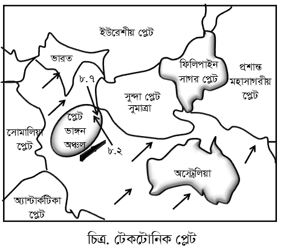

বাংলাদেশ পল্লী উন্নয়ন একাডেমি (বাডর্), কুমিলল্লা (সহকারী পরিচালক): ২০২৫
৭টি
সংকলিত
গ্রামীণ ব্যাংক (শিক্ষানবিশ অফিসার): ২০২৫
৬টি
সংকলিত
ঢাকা পাওয়ার ডিস্ট্রিবিউশন কোম্পানি লিমিটেড (ডিপিডিসি)-এর সুইচ বোর্ড এটেনডেন্ট: ২০২৫
৬টি
সংকলিত
বাংলাদেশ পানি উন্নয়ন বোর্ড (BWDB)- উপ-সহকারী প্রকৌশলী/শাখা কর্মকর্তা (পুর)/প্রাক্কলনিক: ২০২৬
৬টি
সংকলিত
Part 1: প্রামাণ্য ইন্টারেক্টিভ রিভিশন নোট ও সূত্রাবলি
১. মৌলিক ভৌত বিজ্ঞান ও জীববিজ্ঞান তত্ত্ব
বিজ্ঞান বিভাগে পদার্থ, রসায়ন এবং জীববিজ্ঞানের মৌলিক সূত্র ও দৈনন্দিন জীবনের বৈজ্ঞানিক ব্যাখ্যা থেকে প্রশ্ন সংকলিত হয়। বিভিন্ন যন্ত্রের কার্যপ্রণালী ও আবিষ্কারক মনে রাখা আবশ্যক।
বৈজ্ঞানিক পরিমাপক যন্ত্র
পরিমাপের বিষয়
দৈনন্দিন জীবনে প্রয়োগ
ব্যারোমিটার (Barometer)
বায়ুমণ্ডলের চাপ পরিমাপ
আবহাওয়ার পূর্বাভাস (হঠাৎ পারদ স্তম্ভ নিচে নামলে ঝড়ের পূর্বাভাস)।
ল্যাকটোমিটার (Lactometer)
দুধের বিশুদ্ধতা ও ঘনত্ব
দুধে পানির ভেজাল শনাক্তকরণ।
অ্যানিমোমিটার (Anemometer)
বাতাসের গতিবেগ ও শক্তি
আবহাওয়া কেন্দ্র ও দুর্যোগ সতর্কীকরণ।
স্ফিগমোম্যানোমিটার
মানবদেহের রক্তচাপ পরিমাপ
উচ্চ বা নিম্ন রক্তচাপ নির্ণয় (স্বাভাবিক মান ১২০/৮০ মিমি পারদ)।
📌 ভিটামিন ও তাদের অভাবজনিত রোগ
ভিটামিন এ (রেটিনল): রাতকানা (Nyctalopia), জেরফথ্যালমিয়া। উৎস: গাজর, ছোট মাছ।
সার্বজনীন দাতা (Universal Donor): O নেগেটিভ (\(O^-\)) রক্তগ্রুপ।
সার্বজনীন গ্রহীতা (Universal Recipient): AB পজিটিভ (\(AB^+\)) রক্তগ্রুপ।
Part 2: বিগত সালের প্রামাণ্য প্রশ্নব্যাংক ও কুইজ ইঞ্জিন
স্কোর: ০ / ৪৬২
প্রশ্ন ১বাংলাদেশ পরমাণু শক্তি কমিশন-এর টেকনিশিয়ান হেলপার: ২০২৬
জুলিও কুরী একজন বিশ্ববিখ্যাত-
ব্যাখ্যা ও সঠিক উত্তর দেখুন
সঠিক উত্তর: (গ) বৈজ্ঞানিক
ব্যাখ্যা: মেরি কুরী (যিনি মাদাম কুরী নামেও পরিচিত) এবং তাঁর স্বামী পিয়েরে কুরীর কন্যা ছিলেন এই আইরিন জুলিও কুরী (Irène Joliot-Curie)। তিনি নিজেও একজন প্রখ্যাত ফরাসি বিজ্ঞানী ছিলেন। ১৯৩৫ সালে আইরিন জুলিও কুরী এবং তাঁর স্বামী ফ্রেডেরিক জুলিও কুরী যৌথভাবে রসায়নে নোবেল পুরস্কার লাভ করেন। তাঁরা কৃত্রিম তেজস্ক্রিয়তা (Artificial Radioactivity) আবিষ্কারের জন্য বিশ্ববিখ্যাত। তাঁদের এই গবেষণা চিকিৎসা বিজ্ঞানে (বিশেষ করে ক্যান্সার চিকিৎসায়) রেডিওআইসোটোপ ব্যবহারের পথ প্রশস্ত্ম করেছিল। কুরী পরিবার ইতিহাসের একমাত্র পরিবার যাদের ৫টি নোবেল পুরস্কার রয়েছে। আইরিন ছিলেন সেই ঐতিহ্যের যোগ্য উত্তরসূরি।
প্রশ্ন ২সামরিক ভূমি ও ক্যান্টনমেন্ট অদিদপ্তর (প্রভাষক, প্রদশর্ক ও জুনিয়র শিক্ষক): ২০২৫
'রন্টজেন' কিসের একক?
ব্যাখ্যা ও সঠিক উত্তর দেখুন
সঠিক উত্তর: (ক) এক্স-রে
ব্যাখ্যা: জঁ ফ্রেদেরিক জোলিও-কুরি ছিলেন বিখ্যাত ফরাসি পদাথির্বশারদ। তিনি এবং তার স্ত্রী ইরিন জোলিও- কুরি যৌথভাবে কৃত্রিম তেজস্ক্রিয় পদাথর্ আবিস্কারের ফলে রসায়নশাস্ত্রে নোবেল পুরস্কার লাভ করেন। কুরি দম্পতির এ সাফল্যে অদ্যাবধি সফলতম নোবেল বিজয়ী পরিবারে আসীন রয়েছে। জন্মকালে তার নাম ছিল জঁ ফ্রেদেরিক জোলিও।
প্রশ্ন ৩বাংলাদেশ পরমাণু শক্তি কমিশন-এর টেকনিশিয়ান হেলপার: ২০২৬
ইউরেনিয়ামের তেজস্ক্রিয়তা আবিষ্কার করেন?
ব্যাখ্যা ও সঠিক উত্তর দেখুন
সঠিক উত্তর: (ক) হেনরি বেকরেল
ব্যাখ্যা: ১৮৯৬ সালে ফরাসি পদাথির্বদ অ্যান্থনি হেনরি বেকরেল (ঐবহৎর ইবপয়ঁবৎবষ) সম্পূর্ণ দুঘর্টনাবশত ইউরেনিয়ামের তেজস্ক্রিয়তা আবিষ্কার করেন। এই আবিষ্কারের মাধ্যমেই আধুনিক পদাথির্বজ্ঞানে 'তেজস্ক্রিয়তা' (Radioactivity) অধ্যায়ের সূচনা হয়। শুরুতে এই রশ্মিকে বেকরেল রশ্মি বলা হতো। পরে মেরি কুরি এর নাম দেন তেজস্ক্রিয়তা। ১৯০৩ সালে এই অসামান্য অবদানের জন্য হেনরি বেকরেল, মেরি কুরি এবং পিয়েরে কুরি যৌথভাবে পদাথির্বজ্ঞানে নোবেল পুরস্কার লাভ করেন। বৈজ্ঞানিক যন্ত্র ও ব্যবহার-
ব্যাখ্যা: এই প্রশ্নের বিশদ তথ্য ও প্রাসঙ্গিক সূত্রাবলি অধ্যায়ের শুরুতে দেওয়া রিভিশন নোট ও স্কেচনোটে অন্তর্ভুক্ত রয়েছে।
প্রশ্ন ৫প্রাথমিক বিদ্যালয় প্রধান শিক্ষক (বাগানবিলাস): ২০১২; ফরেন সাভির্স একাডেমি, পররাষ্ট্র মন্ত্রণালয়-এর প্রশাসনিক কর্মকর্তা: ২০২৫
মোটর গাড়ির গতি নিণার্য়ক যন্ত্রের নাম-
ব্যাখ্যা ও সঠিক উত্তর দেখুন
সঠিক উত্তর: (ক) ওডোমিটার
ব্যাখ্যা: এই প্রশ্নের বিশদ তথ্য ও প্রাসঙ্গিক সূত্রাবলি অধ্যায়ের শুরুতে দেওয়া রিভিশন নোট ও স্কেচনোটে অন্তর্ভুক্ত রয়েছে।
প্রশ্ন ৬বাংলাদেশ সরকারী কমর্ কমিশন (উপ-সহকারী কৃষি কর্মকর্তা): ২০২৫; বাংলাদেশ সরকারী কমর্ কমিশন - মৎস্য ও প্রাণিসম্পদ মন্ত্রণালয়-এর মৎস্য জরিপ কর্মকর্তা (নন ক্যাডার ১০ম গ্রেড): ২০২৬
মোটরযানের গতি নিণার্য়ক যন্ত্র কোনটি?
ব্যাখ্যা ও সঠিক উত্তর দেখুন
সঠিক উত্তর: (খ) ওডোমিটার
ব্যাখ্যা: এই প্রশ্নের বিশদ তথ্য ও প্রাসঙ্গিক সূত্রাবলি অধ্যায়ের শুরুতে দেওয়া রিভিশন নোট ও স্কেচনোটে অন্তর্ভুক্ত রয়েছে।
প্রশ্ন ৭গ্রামীণ ব্যাংক (শিক্ষানবিশ অফিসার): ২০২৫
বাতাসের আদ্রর্তা মাপার যন্ত্রের নাম কি?
ব্যাখ্যা ও সঠিক উত্তর দেখুন
সঠিক উত্তর: (গ) হাইগ্রোমিটার
ব্যাখ্যা: এই প্রশ্নের বিশদ তথ্য ও প্রাসঙ্গিক সূত্রাবলি অধ্যায়ের শুরুতে দেওয়া রিভিশন নোট ও স্কেচনোটে অন্তর্ভুক্ত রয়েছে।
প্রশ্ন ৮মিলিটারি ইঞ্জিনিয়ার সাভিের্সস এর বিভিন্ন পদ: ২০২৫
সমুদ্রে পানির গভীরতা মাপার একক কী?
ব্যাখ্যা ও সঠিক উত্তর দেখুন
সঠিক উত্তর: (ঘ) ফ্যাদম
ব্যাখ্যা: যন্ত্রের নাম ব্যবহার যন্ত্রের নাম ব্যবহার ক্রোনোমিটার দ্রাঘিমা নিণর্য় / সূক্ষ্ণ সময় পরিমাপক যন্ত্র ওডোমিটার মোটর গাড়ির গতি নিণার্য়ক ট্যাকোমিটার উড়োজাহাজের গতি নিণার্য়ক ক্রেসকোগ্রাফ উদ্ভিদের বৃদ্ধি নিণার্য়ক যন্ত্র হাইগ্রোমিটার বায়ুতে আদ্রর্তা পরিমাপক গ্রাভিমিটার পানির তলায় তেলের সঞ্চয় নিণার্য়ক সিসমোগ্রাফ ভূকম্পন তরঙ্গ পরিমাপক যন্ত্র সেক্সট্যান্ট সূযর্ ও অন্যান্য গ্রহের কৌণিক উন্নতি পরিমাপক যন্ত্র জাইরো কম্পাস জাহাজের দিক নিণার্য়ক ফ্যাদোমিটার সমুদ্রের গভীরতা নিণার্য়ক সাবমেরিন পানির নিচে চলাচলে সক্ষম ডুবোজাহাজ পদাথর্ বিজ্ঞান ভৌত বিজ্ঞানের উন্নয়ন ২০২৫ ও ২০২৬ সালের সকল
ব্যাখ্যা: কোন কিছুর পরিমাণ নিণর্য় করাকে পরিমাপ বলে। পরিমাপের আদশর্ পরিমাণকে পরিমাপের একক বলা হয়। দিকের বিবেচনায় বস্তু জগতের সকল রাশিকে দুই ভাগে ভাগ করা যায়। যথা: স্কেলার রাশি যে সকল ভৌত রাশিকে শুধু মান দ্বারা প্রকাশ করা যায়, দিক নিদেের্শর প্রয়োজন হয় না তাদেরকে স্কেলার বা বা অদিক রাশি বলে। উদাহরণ: দৈঘর্য, ভর, দ্রুতি, কাজ, ক্ষমতা, শক্তি, সময়, তাপমাত্রা, তড়িৎ ফ্ল্যাক্স। ভেক্টর রাশি যে সকল ভৌত রাশিকে সম্পূর্ণরূপে প্রকাশ করার জন্য মান ও দিক উভয়ের প্রয়োজন হয় তাদেরকে ভেক্টর বা দিক রাশি বলে। উদাহরণ: সরণ, ওজন, বেগ, ভরবেগ, ত্বরণ, বল, তড়িৎ তীব্রতা, চৌম্বক তীব্রতা, তড়িৎ ক্ষেত্র, তড়িৎ প্রাবল্য ইত্যাদি।
ব্যাখ্যা: মৌলিক রাশিগুলো হচ্ছে দৈঘর্য, ভর, সময়, বৈদ্যুতিক প্রবাহ, তাপমাত্রা, পদাথের্র পরিমাণ ও দীপন তীব্রতা। এই সাতটি মৌলিক রাশির আন্তজাির্তকভাবে স্বীকৃত সাতটি একককে বলে SI একক (SI এসেছে ফরাসি ভাষার Systeme International d’ Unites কথাটি থেকে)। চালু হয় ১৯৬০ খ্রিস্টাব্দে। রাশি Unit একক Symbol রাশি Unit একক Symbol দৈঘর্য meter মিটার m তাপমাত্রা kelvin কেলভিন K ভর kilogram কিলোগ্রাম kg পদাথের্র পরিমাণ mole মোল mol সময় second সেকেন্ড s দীপন তীব্রতা candela ক্যান্ডেলা cd বিদ্যুৎ প্রবাহ ampere অ্যাম্পিয়ার A
প্রশ্ন ১৩ঢাকা পাওয়ার ডিস্ট্রিবিউশন কোম্পানি (ডিপিডিসি) এর সুইচ বোর্ড অ্যাটেনডেন্ট: ২০২৫
তড়িৎ প্রবাহমাত্রার একক হচ্ছে-
ব্যাখ্যা ও সঠিক উত্তর দেখুন
সঠিক উত্তর: (ক) A
ব্যাখ্যা: এই প্রশ্নের বিশদ তথ্য ও প্রাসঙ্গিক সূত্রাবলি অধ্যায়ের শুরুতে দেওয়া রিভিশন নোট ও স্কেচনোটে অন্তর্ভুক্ত রয়েছে।
প্রশ্ন ১৪নদার্নর্ ইলেকট্রিসিটি সাপল্লাই কোম্পানি পিএলসি (সাব-স্টেশন অ্যাটেনডেন্ট): ২০২৪
২ নিউটন বল কোনো নিদির্ষ্ট বস্তুর উপর প্রয়োগ করায় বস্তুটি ৫ মিটার দূরে সরে গেলো। সম্পন্ন কাজের পরিমাণ কত?
ব্যাখ্যা ও সঠিক উত্তর দেখুন
সঠিক উত্তর: (গ) ১০ জুল
ব্যাখ্যা: কাজ = বল × সরণ = ২ × ৫ = ১০ জুল। ভৌত রাশি এবং এর পরিমাপ অভিকষর্ ও মহাকষর্-
প্রশ্ন ১৬পাওয়ার গ্রিড বাংলাদেশ পিএলসি (জুনিয়র হিসাব সহকারী): ২০২৪
অভিকষর্ হলো বস্তুর উপর-
ব্যাখ্যা ও সঠিক উত্তর দেখুন
সঠিক উত্তর: (গ) কেন্দ্রমুখী বল
ব্যাখ্যা: পৃথিবীকে যদি একটি বস্তুর সাথে তুলনা করা হয় তাহলে অভিকষর্ বল এক ধরনের মহাকষর্ বল। অভিকষর্ বলকে আবার কেন্দ্রমুখী বলও বলা যায়। অভিকষের্র বা মাধ্যাকষর্ণ বলের কারণে আমরা পৃথিবীর ঘূণর্ন সত্ত্বেও ছিটকিয়ে পড়ি না। অভিকষর্জ ত্বরণ-
ব্যাখ্যা: অভিকষর্ বলের প্রভাবে ভূপৃষ্ঠে মুক্তভাবে পড়ন্ত কোন বস্তুর বেগ বৃদ্ধির হারকে অভিকষর্জ ত্বরণ বলে। অভিকষর্জ ত্বরণকে- 'g’ দ্বারা প্রকাশ করা হয়। অভিকষর্জ ত্বরণকে মাধ্যাকষর্ণজনিত ত্বরণও বলা হয়। ভূপৃষ্ঠে বিভিন্ন স্থানে অভিকষর্জ ত্বরণের মান বিভিন্ন। অভিকষর্জ ত্বরণের (g) মান সবোর্চ্চ— ভূপৃষ্ঠে। পৃথিবীর কেন্দ্রে অভিকষর্জ ত্বরণের মান শূন্য (0)। অভিকষর্জ ত্বরণের (g) মানকে আদশর্ ধরা হয়— সমুদ্র সমতলে 450 অক্ষাংশে। অভিকষর্জ ত্বরণের (g) আদশর্ মান— 9.8 m/s2 বা ms-2। পৃথিবীপৃষ্ঠ থেকে উপরে উঠলে বা ভিতরে গেলে মাধ্যাকষর্ণ বল কমে যায় অথার্ৎ অভিকষর্জ ত্বরণের মান কমে যায়। কেপলারের সূত্র-
প্রশ্ন ১৮নদার্নর্ ইলেকট্রিসিটি সাপল্লাই কোম্পানি পিএলসি (সাব-স্টেশন অ্যাটেনডেন্ট): ২০২৪
কেপলারের তৃতীয় সূত্রের নাম কোনটি?
ব্যাখ্যা ও সঠিক উত্তর দেখুন
সঠিক উত্তর: (গ) পযার্য়কালের সূত্র
ব্যাখ্যা: েকপলারের গ্রহীয় গতিসূত্র সূযের্র চারিদিকে গ্রহগুলোর গতি ব্যাখ্যা করে। জামার্ন বিজ্ঞানীর এই সূত্রগুলো কেপলারের সূত্র নামে পরিচিত। সূত্রগুলো- প্রতিটি গ্রহের কক্ষপথ একটি উপবৃত্ত, সূযর্ যার একটি ফোকাসে অবস্থিত। সূযর্ এবং একটি গ্রহকে সংযোগকারী রেখা গ্রহের আবতের্নর সাথে সাথে সমান সময়ে সমান ক্ষেত্রফল অতিক্রম করে। একটি গ্রহের পযার্য়কালের বর্গ সূযর্ হতে ঐ গ্রহের গড় দূরত্বের ঘনফলের সমানুপাতিক। [T2 ∞ R3] ভর ও ওজন-
প্রশ্ন ১৯বিভিন্ন মন্ত্রণালয় ও বিভাগ ২০২৫-২০২৬
চাঁদে কোন বস্তুর ওজন পৃথিবীর ওজনের- সামরিক ভূমি ও ক্যান্টনমেন্ট অদিদপ্তর (প্রভাষক, প্রদশর্ক ও জুনিয়র শিক্ষক): ২০২৫]
ব্যাখ্যা ও সঠিক উত্তর দেখুন
সঠিক উত্তর: (গ) ছয়ভাগের একভাগ
ব্যাখ্যা: ভর ওজন কোন বস্তুর মধ্যে পদাথের্র মোট পরিমাণকে ঐ বস্তুর ভর বলে। কোন বস্তুকে পৃথিবী যে পরিমাণ বল দ্বারা তার কেন্দ্রের দিকে আকষর্ণ করে তাকে ঐ বস্তুটির ওজন বলে। ভরের একক কিলোগ্রাম (Kg) ওজনের একক নিউটন (N) স্থানভেদে বস্তুর ভরের কোন পরিবতর্ন হয় না। স্থানভেদে অভিকষর্জ ত্বরণের মান পরিবতির্ত হওয়ায় বস্তুর ওজনের পরিবতর্ন হয়। কেননা, বস্তুর ওজন = বস্তুর ভর x ঐ স্থানে অভিকষর্জ ত্বরণ। পৃথিবীপৃষ্ঠ ও চন্দ্রপৃষ্ঠে বস্তুর ভর একই। চাঁদে অভিকষর্জ ত্বরণের মান পৃথিবীর পৃথিবীর অভিকষর্জ ত্বরণের ৬ ভাগের এক ভাগ। তাই চাঁদে কোন বস্তুর ওজন পৃথিবীর ৬ ভাগের এক ভাগ।
ব্যাখ্যা: এই প্রশ্নের বিশদ তথ্য ও প্রাসঙ্গিক সূত্রাবলি অধ্যায়ের শুরুতে দেওয়া রিভিশন নোট ও স্কেচনোটে অন্তর্ভুক্ত রয়েছে।
প্রশ্ন ২১৫০তম বিসিএস
বস্তুর ওজন পৃথিবীর কোন স্থানে সবচেয়ে বেশি?
ব্যাখ্যা ও সঠিক উত্তর দেখুন
সঠিক উত্তর: (ক) মেরু অঞ্চল
ব্যাখ্যা: এই প্রশ্নের বিশদ তথ্য ও প্রাসঙ্গিক সূত্রাবলি অধ্যায়ের শুরুতে দেওয়া রিভিশন নোট ও স্কেচনোটে অন্তর্ভুক্ত রয়েছে।
প্রশ্ন ২২ঢাকা ম্যাস ট্রানজিট কোম্পানি লি. (মেট্রোরেল): ২০২৪
ভূ-পৃষ্ঠ থেকে উপরে উঠলে বস্তুর ওজন—
ব্যাখ্যা ও সঠিক উত্তর দেখুন
সঠিক উত্তর: (খ) কমে
ব্যাখ্যা: এই প্রশ্নের বিশদ তথ্য ও প্রাসঙ্গিক সূত্রাবলি অধ্যায়ের শুরুতে দেওয়া রিভিশন নোট ও স্কেচনোটে অন্তর্ভুক্ত রয়েছে।
প্রশ্ন ২৩নদার্নর্ ইলেকট্রিসিটি সাপল্লাই কোম্পানি পিএলসি (সাব-স্টেশন অ্যাটেনডেন্ট): ২০২৪
g এর মান-
ব্যাখ্যা ও সঠিক উত্তর দেখুন
সঠিক উত্তর: (গ) উভয়টি
ব্যাখ্যা: এই প্রশ্নের বিশদ তথ্য ও প্রাসঙ্গিক সূত্রাবলি অধ্যায়ের শুরুতে দেওয়া রিভিশন নোট ও স্কেচনোটে অন্তর্ভুক্ত রয়েছে।
প্রশ্ন ২৪পাওয়ার গ্রিড বাংলাদেশ পিএলসি (অফিস সহকারী): ২০২৪
বস্তুর ওজন কোথায় শূন্য হয়?
ব্যাখ্যা ও সঠিক উত্তর দেখুন
সঠিক উত্তর: (খ) ভূ-কেন্দ্রে
ব্যাখ্যা: ভূপৃষ্ঠ থেকে উপরে/ ভূপৃষ্ঠের অভ্যন্তরে— বস্তুর ওজন/ অভিকষর্জ ত্বরণের মান পৃথিবীর ৬ ভাগের ১ ভাগ। ওজন/ অভিকষর্জ ত্বরণের মান মেরু অঞ্চলে— সবোর্চ্চ এবং নিরক্ষীয় অঞ্চলে— সবির্নম্ন। চন্দ্রপৃষ্ঠে 'g’ এর মান— পৃথিবীর ৬ ভাগের ১ ভাগ। পৃথিবীর কেন্দ্রে অভিকষর্জ ত্বরণ/বস্তুর ওজন— শূন্য।
২ নিউটন বল কোনো নিদির্ষ্ট বস্তুর উপর প্রয়োগ করায় বস্তুটি ৫ মিটার দূরে সরে গেলো। সম্পন্ন কাজের পরিমাণ কত?
ব্যাখ্যা ও সঠিক উত্তর দেখুন
সঠিক উত্তর: (গ) ১০ জুল
ব্যাখ্যা: এই প্রশ্নের বিশদ তথ্য ও প্রাসঙ্গিক সূত্রাবলি অধ্যায়ের শুরুতে দেওয়া রিভিশন নোট ও স্কেচনোটে অন্তর্ভুক্ত রয়েছে।
প্রশ্ন ২৮বাংলাদেশ সরকারী কমর্ কমিশন (উপ-সহকারী কৃষি কর্মকর্তা): ২০২৫
প্রবাহিত তরলের ভর এবং ত্বরণের গুণফলকে কি বলে?
ব্যাখ্যা ও সঠিক উত্তর দেখুন
সঠিক উত্তর: (ক) জড়তা বল
ব্যাখ্যা: এই প্রশ্নের বিশদ তথ্য ও প্রাসঙ্গিক সূত্রাবলি অধ্যায়ের শুরুতে দেওয়া রিভিশন নোট ও স্কেচনোটে অন্তর্ভুক্ত রয়েছে।
প্রশ্ন ২৯৫০তম বিসিএস
একটি কঠিন ঘনক অধের্ক পানির উপরে ও অধের্ক পানির নিচে ভাসছে। আপনি যদি ঘনকটি পানির মধ্যে ২ সে.মি. গভীরে ঠেলে দেন এবং তারপর সেটিকে ছেড়ে দেন, তাহলে কি ঘটবে?
ব্যাখ্যা ও সঠিক উত্তর দেখুন
সঠিক উত্তর: (গ) ঘনকটি আবার অধের্ক ডুবে থাকা ও অধের্ক ভেসে থাকা অবস্থায় ফিরে আসবে
ব্যাখ্যা: এটি আকিির্মডিসের নীতি (Archimedes' Principle) এবং পল্লবতা (Buoyancy) সম্পকির্ত একটি প্রশ্ন। কোনো বস্তু যখন সাম্যাবস্থায় (Equilibrium) ভাসে, তখন সেটি তার ওজনের সমান ওজনের পানি অপসারিত করে। ঘনকটি প্রথমে অধের্ক ডুবে ভাসছিল, এর অথর্ হলো ঘনকটির ওজন এবং পানির ঊধ্বর্মুখী বল (পল্লবতা) ঠিক অধের্ক আয়তনেই সমান হয়ে গেছে। এটিই ঘনকটির স্থিতিশীল অবস্থা। যখন আপনি ঘনকটিকে ২ সে.মি. নিচে ঠেলে দিলেন, তখন ঘনকটি আগের চেয়ে বেশি পানি অপসারিত করল। ফলে পানির ঊধ্বর্মুখী বল বা পল্লবতা তার ওজনের চেয়ে বেড়ে গেল। ছেড়ে দেওয়ার সাথে সাথে ওই বাড়তি ঊধ্বর্মুখী বল ঘনকটিকে আবার উপরের দিকে ধাক্কা দেবে। ঘনকটি কিছুক্ষণ ওপরে-নিচে দুলতে পারে (Simple Harmonic Motion), কিন্তু শেষ পর্যন্ত ঘষের্ণর কারণে শক্তি হারিয়ে ঠিক আগের মতোই অধের্ক ডুবে ও অধের্ক ভেসে থাকা অবস্থায় স্থির হবে।
প্রশ্ন ৩০সিনিয়র স্টাফ নাসর্: ২০২৫
শক্তির মূল উৎস কি?
ব্যাখ্যা ও সঠিক উত্তর দেখুন
সঠিক উত্তর: (ঘ) সৌরশক্তি
ব্যাখ্যা: এই প্রশ্নের বিশদ তথ্য ও প্রাসঙ্গিক সূত্রাবলি অধ্যায়ের শুরুতে দেওয়া রিভিশন নোট ও স্কেচনোটে অন্তর্ভুক্ত রয়েছে।
প্রশ্ন ৩১গ্রামীণ ব্যাংক (শিক্ষানবিশ অফিসার): ২০২৫
বাংলাদেশে নবায়নযোগ্য জ্বালানির প্রধান উৎস কি?
ব্যাখ্যা ও সঠিক উত্তর দেখুন
সঠিক উত্তর: (ক) সৌর বিদ্যুৎ
ব্যাখ্যা: এই প্রশ্নের বিশদ তথ্য ও প্রাসঙ্গিক সূত্রাবলি অধ্যায়ের শুরুতে দেওয়া রিভিশন নোট ও স্কেচনোটে অন্তর্ভুক্ত রয়েছে।
ব্যাখ্যা: এই প্রশ্নের বিশদ তথ্য ও প্রাসঙ্গিক সূত্রাবলি অধ্যায়ের শুরুতে দেওয়া রিভিশন নোট ও স্কেচনোটে অন্তর্ভুক্ত রয়েছে।
প্রশ্ন ৩৪নদার্ন ইলেকট্রিসিটি সাপল্লাই কোম্পানি পিএলসি (সাব স্টেশন অ্যাটেনডেন্ট): ২০২৪
কোনটি নবায়নযোগ্য জ্বালানীর উৎস?
ব্যাখ্যা ও সঠিক উত্তর দেখুন
সঠিক উত্তর: (গ) সমুদ্রের ঢেউ
ব্যাখ্যা: এই প্রশ্নের বিশদ তথ্য ও প্রাসঙ্গিক সূত্রাবলি অধ্যায়ের শুরুতে দেওয়া রিভিশন নোট ও স্কেচনোটে অন্তর্ভুক্ত রয়েছে।
প্রশ্ন ৩৫পাওয়ার গ্রিড কোম্পানি অব বাংলাদেশ লি. (উপ-সহকারী প্রকৌশলী): ২০২৪
কোনটি নবায়নযোগ্য জ্বালানী নয়?
ব্যাখ্যা ও সঠিক উত্তর দেখুন
সঠিক উত্তর: (ঘ) গ্যাস
ব্যাখ্যা: এই প্রশ্নের বিশদ তথ্য ও প্রাসঙ্গিক সূত্রাবলি অধ্যায়ের শুরুতে দেওয়া রিভিশন নোট ও স্কেচনোটে অন্তর্ভুক্ত রয়েছে।
প্রশ্ন ৩৬পাওয়ার গ্রিড বাংলাদেশ পিএলসি-এর (নিরাপত্তা প্রহরী): ২০২৫
কোনটি নবায়নযোগ্য জ্বালানি নয়?
ব্যাখ্যা ও সঠিক উত্তর দেখুন
সঠিক উত্তর: (গ) নিউক্লিয়ার শক্তি
ব্যাখ্যা: এই প্রশ্নের বিশদ তথ্য ও প্রাসঙ্গিক সূত্রাবলি অধ্যায়ের শুরুতে দেওয়া রিভিশন নোট ও স্কেচনোটে অন্তর্ভুক্ত রয়েছে।
প্রশ্ন ৩৭প্রাথমিক বিদ্যালয় সহকারী শিক্ষক নিয়োগ পরীক্ষা-২০২৬
নবায়নযোগ্য জ্বালানী কোনটি?
ব্যাখ্যা ও সঠিক উত্তর দেখুন
সঠিক উত্তর: (গ) পরমাণু শক্তি
ব্যাখ্যা: সঠিক উত্তর হলো পরমাণু শক্তি। তবে এই প্রশ্নটি কিছুটা বিতকির্ত হতে পারে, কারণ আধুনিক বিজ্ঞানে পরমাণু শক্তিকে প্রায়ই সবুজ শক্তি (Green Energy) বা নবায়নযোগ্য হিসেবে বিবেচনা করা হলেও অনেকক্ষেত্রে একে কেবল অক্সিজেনমুক্ত জ্বালানি বলা হয়। প্রশ্নের অপশনগুলোর মধ্যে বাকি তিনটি (কয়লা, পেট্রোল, প্রাকৃতিক গ্যাস) নিশ্চিতভাবেই অনবায়নযোগ্য।
প্রশ্ন ৩৮পাওয়ার গ্রিড বাংলাদেশ পিএলসি-এর (জুনিয়র হিসাব সহকারী/জুনিয়র ব্যক্তিগত সচিব/জুনিয়র প্রশাসনিক সহকারী/জুনিয়র প্রশাসনিক সহকারী কাম ভান্ডার সহকারী): ২০২৫
বাংলাদেশে বতর্মানে কোন ধরণের বিদ্যুৎ উৎপাদনে বতর্মানে অধিক গুরুত্ব প্রদান করা হচ্ছে?
ব্যাখ্যা ও সঠিক উত্তর দেখুন
সঠিক উত্তর: (খ) নবায়নযোগ্য বিদ্যুৎ
ব্যাখ্যা: এই প্রশ্নের বিশদ তথ্য ও প্রাসঙ্গিক সূত্রাবলি অধ্যায়ের শুরুতে দেওয়া রিভিশন নোট ও স্কেচনোটে অন্তর্ভুক্ত রয়েছে।
প্রশ্ন ৩৯পাওয়ার গ্রিড কোম্পানি অব বাংলাদেশ লিমিটেড (সহকারী প্রকৌশলী/ ব্যবস্থাপক): ২০২৪
বাংলাদেশে কোন ধরনের জ্বালানি থেকে বেশি বিদ্যুৎ উৎপাদিত হয়?
ব্যাখ্যা ও সঠিক উত্তর দেখুন
সঠিক উত্তর: (খ) গ্যাস
ব্যাখ্যা: এই প্রশ্নের বিশদ তথ্য ও প্রাসঙ্গিক সূত্রাবলি অধ্যায়ের শুরুতে দেওয়া রিভিশন নোট ও স্কেচনোটে অন্তর্ভুক্ত রয়েছে।
ব্যাখ্যা: তরল জ্বালানি (Liquid fuel) যেমন ডিজেল বা ফানের্স অয়েল দিয়ে বিদ্যুৎ উৎপাদনের খরচ সবচেয়ে বেশি। কারণ, আন্তজাির্তক বাজারে ডিজেল/অয়েলের দাম বেশি ও অস্থির; পরিবহন খরচও বেশি; তাপবিদ্যুৎ কেন্দ্রে জ্বালানি দক্ষতা কম এবং রক্ষণাবেক্ষণ খরচ তুলনামূলক বেশি।
প্রশ্ন ৪১৫০তম বিসিএস
পারমাণবিক চুলিল্লতে মডারেটরের প্রাথমিক কাজ হলো:
ব্যাখ্যা ও সঠিক উত্তর দেখুন
সঠিক উত্তর: (গ) দ্রুতগতি সম্পন্ন নিউট্রনগুলোকে ধীরগতি করে ফিশনের সম্ভাবনা বাড়ানো
ব্যাখ্যা: এই প্রশ্নের বিশদ তথ্য ও প্রাসঙ্গিক সূত্রাবলি অধ্যায়ের শুরুতে দেওয়া রিভিশন নোট ও স্কেচনোটে অন্তর্ভুক্ত রয়েছে।
প্রশ্ন ৪২৫০তম বিসিএস
পরমাণু চুলল্লীতে সচরাচর কোন জ্বালানী ব্যবহার করা হয়?
ব্যাখ্যা ও সঠিক উত্তর দেখুন
সঠিক উত্তর: (ক) ইউরেনিয়াম-২৩৫
ব্যাখ্যা: পারমাণবিক বিদ্যুৎ কেন্দ্র বা পরমাণু চুলল্লীতে (Nuclear Reactor) জ্বালানী হিসেবে মূলত এমন পদাথর্ ব্যবহার করা হয় যা সহজেই ফিশন (Fission) প্রক্রিয়ায় অংশ নিতে পারে। ইউরেনিয়াম-২৩৫ হলো প্রকৃতির একমাত্র সহজলভ্য আইসোটোপ যা এই কাজে সবচেয়ে বেশি ব্যবহৃত হয়। ইউরেনিয়াম-২৩৫ এর নিউক্লিয়াস একটি ধীরগতির নিউট্রন দ্বারা আঘাতপ্রাপ্ত হলে সহজেই ভেঙে যায় এবং প্রচুর শক্তি উৎপন্ন করে। যদিও প্রাকৃতিক ইউরেনিয়ামের মধ্যে ইউরেনিয়াম-২৩৮ এর পরিমাণ বেশি (৯৯.৩%), কিন্তু সেটি সরাসরি ফিশন বিক্রিয়া করতে পারে না। মাত্র ০.৭% থাকা ইউরেনিয়াম-২৩৫-ই মূলত শক্তির মূল উৎস। চুলল্লীতে ব্যবহারের জন্য প্রাকৃতিক ইউরেনিয়ামকে প্রক্রিয়াজাত করে ইউরেনিয়াম-২৩৫ এর ঘনত্ব ৩% থেকে ৫% পর্যন্ত বাড়ানো হয়, একেই 'এনরিচড ইউরেনিয়াম' বলে।
প্রশ্ন ৪৩৪৭তম বিসিএস
হাইড্রোজেন বোমায় ক্রিয়া করে-
ব্যাখ্যা ও সঠিক উত্তর দেখুন
সঠিক উত্তর: (গ) ফিশন ও ফিউশন উভয়টিই
ব্যাখ্যা: হাইড্রোজেন বোমা (Hydrogen Bomb) বা থামোির্নউক্লিয়ার বোমা হলো এমন একটি পারমাণবিক অস্ত্র যা তৈরি হয় হালকা পরমাণুর নিউক্লিয়াস একীভূত (fusion) করে বিপুল পরিমাণ শক্তি উৎপন্নের মাধ্যমে। এটি সূযের্র শক্তি উৎপাদন প্রক্রিয়ার মতোই- যেখানে হাইড্রোজেন পরমাণুগুলো মিলিত হয়ে হিলিয়াম গঠন করে এবং প্রচুর শক্তি নিগর্ত হয়। 𝐻 1 2 + 𝐻 1 2 → 𝐻 1 2 + n + energy. হাইড্রোজেন বোমায় মূলত পারমাণবিক বিক্রিয়া ঘটে। এখানে ফিশন ও ফিউশন উভয় বিক্রিয়া ব্যবহৃত হয়। হাইড্রোজেন বোমার মূল শক্তি ফিউশন বিক্রিয়া থেকে আসলেও সেই বিক্রিয়া শুরু করার জন্য প্রথমে একটি ফিশন বিক্রিয়া প্রয়োজন হয়।
প্রশ্ন ৪৪২৮তম ও ২৯তম বিসিএস; বাংলাদেশ পল্লী বিদ্যুতায়ন বোর্ড (লাইনম্যান): ২৫; সামরিক ভূমি ও ক্যান্টনমেন্ট অধিদপ্তর (জুনিয়র শিক্ষক): ২০২৫
পারমাণবিক চুলিল্লতে তাপ পরিবাহক হিসেবে কোন ধাতু ব্যবহৃত হয়?
ব্যাখ্যা ও সঠিক উত্তর দেখুন
সঠিক উত্তর: (ক) সোডিয়াম
ব্যাখ্যা: পারমাণবিক চুলিল্লতে (Nuclear Reactor) উৎপন্ন প্রচ- তাপকে সরিয়ে নেওয়ার জন্য এবং সেই তাপকে বাষ্প তৈরির কাজে ব্যবহার করার জন্য তাপ পরিবাহক বা শীতলকারক (Coolant) হিসেবে তরল সোডিয়াম (Liquid Sodium) ব্যবহার করা হয়। সোডিয়াম একটি ধাতু হওয়ায় এর তাপ পরিবহন ক্ষমতা অত্যন্ত বেশি। এটি খুব দ্রুত চুলিল্লর কেন্দ্র (Core) থেকে তাপ শোষণ করে নিতে পারে। তরল সোডিয়ামের স্ফুটনাঙ্ক প্রায় ৮৮৩°সে.। ফলে এটি উচ্চ তাপমাত্রায়ও বাষ্পীভূত না হয়ে তরল থাকে, যা চুলিল্লর ভেতরে উচ্চ চাপ তৈরির ঝুঁকি কমায়। সোডিয়াম খুব কম পরিমাণে নিউট্রন শোষণ করে, ফলে পারমাণবিক বিক্রিয়ার (Chain Reaction) কোনো ক্ষতি হয় না।
প্রশ্ন ৪৫৫০তম বিসিএস
যদি একটি গাড়ীর গতি দ্বিগুণ করা হয়, তবে গাড়ীটির গতিশক্তি পূবের্র গতিশক্তির কতগুণ হবে?
ব্যাখ্যা ও সঠিক উত্তর দেখুন
সঠিক উত্তর: (ঘ) ৪
ব্যাখ্যা: কোনো বস্তুর গতিশক্তি তার বেগের বর্গের (Square) সমানুপাতিক। অথার্ৎ বেগ যে হারে বাড়বে, গতিশক্তি তার বর্গের হারে বৃদ্ধি পাবে।
ব্যাখ্যা: বিজ্ঞানী জেমস ওয়াট যখন বাষ্পীয় ইঞ্জিন (Steam Engine) আবিষ্কার করেন, তখন তার ক্ষমতা ঘোড়ার শক্তির সাথে তুলনা করার জন্য এই এককটি প্রচলন করেন। পরীক্ষায় দেখা গেছে, একটি শক্তিশালী ঘোড়া প্রতি মিনিটে প্রায় ৩৩,০০০ ফুট-পাউন্ড কাজ করতে পারে। এই পরিমাণ কাজকে যখন ওয়াটে রূপান্তর করা হয়, তখন তার মান দাঁড়ায় প্রায় ৭৪৫.৭ ওয়াট, যা রাউন্ড ফিগারে ৭৪৬ ওয়াট ধরা হয়। শক্তির নিত্যতার সূত্র: শক্তির সৃষ্টি বা বিনাশ নেই। শক্তি এক রূপ থেকে অন্য রূপে রূপান্তরিত হয় মাত্র।
প্রশ্ন ৪৭৪০তম বিসিএস; বাংলাদেশ পল্লী বিদ্যুতায়ন বোর্ড (লাইনম্যান): ২০২৫
বিদ্যুৎ শক্তিকে শব্দ শক্তিতে রূপান্তরিত করা হয় কোন যন্ত্রের মাধ্যমে-
ব্যাখ্যা ও সঠিক উত্তর দেখুন
সঠিক উত্তর: (ক) লাউড স্পিকার
ব্যাখ্যা: শক্তির রূপান্তর ঘটনা শক্তি রূপান্তরিত শক্তি ঘটনা শক্তি রূপান্তরিত শক্তি স্পিকার/বৈদ্যুতিক ঘণ্টা/লাউড স্পিকার তড়িৎ শব্দ মাইক্রোফোন শব্দ তড়িৎ ডায়নামো বা জেনারেটর যান্ত্রিক তড়িৎ সৌর প্যানেল আলোক বিদ্যুৎ হাতে হাত ঘষলে যান্ত্রিক তাপ
প্রশ্ন ৪৮পাওয়ার গ্রিড কোম্পানি অব বাংলাদেশ লি. (উপ-সহকারী প্রকৌশলী): ২০২৪
মোবাইল টেলিফোনের মধ্য দিয়ে প্রবাহিত হয়-
ব্যাখ্যা ও সঠিক উত্তর দেখুন
সঠিক উত্তর: (খ) তড়িৎ শক্তি
ব্যাখ্যা: টেলিফোন ও রেডিওর প্রেরকযন্ত্র এবং মাইক্রোফোন শব্দশক্তি তড়িৎশক্তিতে রূপান্তরিত করা হয়। টেলিফোন লাইনের মধ্যে দিয়ে তড়িৎ শক্তি প্রবাহিত হয়। টেলিফোন ও রেডিওর গ্রাহকযন্ত্রে তড়িৎ শক্তি শব্দ শক্তিতে রূপান্তরিত হয়।
ব্যাখ্যা: এই প্রশ্নের বিশদ তথ্য ও প্রাসঙ্গিক সূত্রাবলি অধ্যায়ের শুরুতে দেওয়া রিভিশন নোট ও স্কেচনোটে অন্তর্ভুক্ত রয়েছে।
প্রশ্ন ৫২২০তম বিসিএস; বাংলাদেশ পল্লী বিদ্যুতায়ন বোর্ড (লাইনম্যান): ২০২৫
কোন পদাথির্ট চৌম্বক পদাথর্ নয়?
ব্যাখ্যা ও সঠিক উত্তর দেখুন
সঠিক উত্তর: (গ) অ্যালুমিনিয়াম
ব্যাখ্যা: চৌম্বক ও অচৌম্বক পদাথর্: চৌম্বক পদাথর্ অচৌম্বক পদাথর্ চুম্বক যেসকল পদাথের্ক আকষর্ণ করে সেসকল পদাথের্ক বলা হয় চৌম্বক পদাথর্। যথা: লোহা, নিকেল, কোবাল্ট এবং অধিকাংশ ইস্পাত ইত্যাদি। যেসকল পদাথের্ক চুম্বক আকষর্ণ করে না সেসকল পদাথের্ক অচৌম্বক পদাথর্ বলে। যথা: সোনা, রূপা, তামা, দস্ত্মা, কপার, অ্যালুমিনিয়াম, পিতল, কাঠ, সিলভার, পল্লাস্টিক, রাবার ইত্যাদি। কৃত্রিম উপায়ে চুম্বক: চৌম্বক পদাথের্ক কৃত্রিম উপায়ে চুম্বকে পরিণত করা যায়। উপায়সমূহ- ঘষর্ণ পদ্ধতি এবং বৈদ্যুতিক পদ্ধতি। সলিনয়েড: একটি কাঁচা লোহার দ-কে U আকারে বাঁকিয়ে লম্বা অন্তরিত তার দ্বারা জড়িয়ে এর মধ্যদিয়ে তড়িৎ প্রবাহিত করলে তা একটি চুম্বকের ন্যায় আচরণ করে। একে সলিনয়েড বলে।
ব্যাখ্যা: এই প্রশ্নের বিশদ তথ্য ও প্রাসঙ্গিক সূত্রাবলি অধ্যায়ের শুরুতে দেওয়া রিভিশন নোট ও স্কেচনোটে অন্তর্ভুক্ত রয়েছে।
প্রশ্ন ৫৪প্রাথমিক বিদ্যালয় সহকারী শিক্ষক (দ্বিতীয় পযার্য়): ২০২৪
রাডারে যে তড়িৎ চৌম্বক ব্যবহার করা হয় তার নাম-
ব্যাখ্যা ও সঠিক উত্তর দেখুন
সঠিক উত্তর: (গ) মাইক্রোওয়েভ
ব্যাখ্যা: এই প্রশ্নের বিশদ তথ্য ও প্রাসঙ্গিক সূত্রাবলি অধ্যায়ের শুরুতে দেওয়া রিভিশন নোট ও স্কেচনোটে অন্তর্ভুক্ত রয়েছে।
প্রশ্ন ৫৫পাওয়ার গ্রিড কোম্পানি অব বাংলাদেশ লি. (উপ-সহকারী প্রকৌশলী): ২০২৪
সিনক্রোনাস মটর এর স্পিড কত আরপিএম?
ব্যাখ্যা ও সঠিক উত্তর দেখুন
সঠিক উত্তর: (খ) ৩৬০০
ব্যাখ্যা: এই প্রশ্নের বিশদ তথ্য ও প্রাসঙ্গিক সূত্রাবলি অধ্যায়ের শুরুতে দেওয়া রিভিশন নোট ও স্কেচনোটে অন্তর্ভুক্ত রয়েছে।
প্রশ্ন ৫৬পিএসসি'র হোম ইকোনমিস্ট (নিপোটর্): ২০২৪
ঘড়ির কাঁটার গতি কী রকম গতি?
ব্যাখ্যা ও সঠিক উত্তর দেখুন
সঠিক উত্তর: (গ) পযার্য়বৃত্ত গতি
ব্যাখ্যা: এই প্রশ্নের বিশদ তথ্য ও প্রাসঙ্গিক সূত্রাবলি অধ্যায়ের শুরুতে দেওয়া রিভিশন নোট ও স্কেচনোটে অন্তর্ভুক্ত রয়েছে।
প্রশ্ন ৫৭৪৭তম বিসিএস
তরঙ্গের বেলায় কোনটি সত্য?
ব্যাখ্যা ও সঠিক উত্তর দেখুন
সঠিক উত্তর: (ক) তড়িৎ চৌম্বকতরঙ্গ আলোর বেগে গমন করে
ব্যাখ্যা: তড়িৎচুম্বকীয় তরঙ্গ আলোর বেগে (3 × 108 ms-1) চলালচল করে। তরঙ্গের প্রকৃতির ওপর ভিত্তি করে দুই ভাগ করা যায়। যথা: যান্ত্রিক তরঙ্গ (Mechanical wave) এবং তড়িৎচৌম্বক তরঙ্গ (Electromagnetic wave)। যান্ত্রিক তরঙ্গ তরঙ্গ এবং শব্দ চৌম্বকত্ব ও তড়িৎ চৌম্বকত্ব চলার জন্য মাধ্যমের প্রয়োজন হয় (যেমন: বায়ু, জল ইত্যাদি)। উদাহরণ: শব্দতরঙ্গ। তড়িৎচৌম্বক তরঙ্গ কোনো মাধ্যম ছাড়াই শূন্যে চলতে পারে এবং আলোর বেগে (≈ 3×10⁸ ms-1) গমন করে। উদাহরণ: আলোর তরঙ্গ, রেডিও তরঙ্গ, এক্স-রে, গামা রে ইত্যাদি। অপশন (খ) শব্দতরঙ্গ যান্ত্রিক তরঙ্গ, তড়িৎচৌম্বক নয়। অপশন (গ) সব তরঙ্গেই প্রতিফলন ও প্রতিসরণ হতে পারে (যদি উপযুক্ত মাধ্যম থাকে)। অপশন (ঘ) তরঙ্গবেগ 𝑣 = 𝑓𝜆 অথার্ৎ এটি কম্পাঙ্ক ও তরঙ্গদৈঘ্যের্র গুণফল, অনুপাত নয়।
প্রশ্ন ৫৮১৪তম ও ৩০তম বিসিএস; প্রাক-প্রাথমিক সহকারী শিক্ষক (চট্টগ্রাম বিভাগ) : ২০০৫; পাওয়ার গ্রিড কোম্পানি পিএলসি (কারিগরি সহায়ক): ২০২৪
কোন মাধ্যমে শব্দের গতি সবাের্পক্ষা কম?
ব্যাখ্যা ও সঠিক উত্তর দেখুন
সঠিক উত্তর: (ঘ) বায়বীয় পদাথের্
ব্যাখ্যা: এই প্রশ্নের বিশদ তথ্য ও প্রাসঙ্গিক সূত্রাবলি অধ্যায়ের শুরুতে দেওয়া রিভিশন নোট ও স্কেচনোটে অন্তর্ভুক্ত রয়েছে।
প্রশ্ন ৫৯২৫তম ও ১৩তম বিসিএস; প্রাথমিক বিদ্যালয় সহকারী শিক্ষক- ২০১৮; প্রাক-প্রাথমিক বিদ্যালয় সহকারী শিক্ষক (দানিয়ুব) : ২০১৩; প্রাথমিক বিদ্যালয় সহকারী (২০১৮); প্রাথমিক বিদ্যালয় সহকারী শিক্ষক (ক্যামেলিয়া) : ২০১২; সামরিক ভূমি ও ক্যান্টনমেন্ট অধিদপ্তর (জুনিয়র শিক্ষক): ২০২৫
কোন মাধ্যমে শব্দের গতি সবচেয়ে বেশি?
ব্যাখ্যা ও সঠিক উত্তর দেখুন
সঠিক উত্তর: (খ) লোহা
ব্যাখ্যা: বিভিন্ন মাধ্যমের গতিবেগের ক্রম : কঠিন ˃ তরল ˃ বায়বীয় অথার্ৎ কঠিন মাধ্যমে শব্দের গতিবেগ সবচেয়ে বেশি; এরপর তরল; বায়বীয় মাধ্যমে সবচেয়ে কম গতিবেগ। শব্দ শূন্য মাধ্যমে চলতে পারে না। লোহা কঠিন মাধ্যম হওয়ায় এতে শব্দের গতি সবচেয়ে বেশি।
প্রশ্ন ৬০পাওয়ার গ্রিড কোম্পানি অব বাংলাদেশ লি. (উপ-সহকারী প্রকৌশলী): ২০২৪; পিএসসি'র হোম ইকোনমিস্ট (নিপোটর্): ২০২৪
কোন মাধ্যমে শব্দের বেগ সবচেয়ে বেশি?
ব্যাখ্যা ও সঠিক উত্তর দেখুন
সঠিক উত্তর: (খ) কঠিন
ব্যাখ্যা: কোন স্থিতিস্থাপক সমসত্ব মাধ্যমে শব্দ তরঙ্গ এক সেকেন্ডে যে দূরত্ব অতিক্রম করে, তাকে শব্দের বেগ বলে। দূরত্ব অতিক্রম করতে কিছু সময়ের প্রয়োজন হয়, অথার্ৎ শব্দ, নিদির্ষ্ট মাধ্যমে একটি নিদির্ষ্ট বেগে চলে।
ব্যাখ্যা: এই প্রশ্নের বিশদ তথ্য ও প্রাসঙ্গিক সূত্রাবলি অধ্যায়ের শুরুতে দেওয়া রিভিশন নোট ও স্কেচনোটে অন্তর্ভুক্ত রয়েছে।
প্রশ্ন ৬২বাংলাদেশ সরকারি কমর্ কমিশন-এর সহকারী পরিচালক: ২০২৫
লোহা মাধ্যমে শব্দ বাতাসের তুলনায় কত গুণ দ্রুত চলে?
ব্যাখ্যা ও সঠিক উত্তর দেখুন
সঠিক উত্তর: (গ) ১৫ গুণ
ব্যাখ্যা: বিভিন্ন মাধ্যমে শব্দের গতিবেগ- হীরা (কঠিন মাধ্যমে সবচেয়ে বেশি) 12000 ms−1 লোহাতে 5130 ms−1 পারদ 1450 ms−1 পানিতে 1493 ms−1 বায়ুতে (সবচেয়ে কম) 330 ms−1 হাইড্রোজেন 1284 ms−1 শূন্য মাধ্যমে (শূন্য অথর্ কম নয়) 0 ms−1 তথ্যসূত্র : নবম-দশম শ্রেণির পদাথির্বজ্ঞান (সপ্তম অধ্যায় : তরঙ্গ ও শব্দ) আকাশে বজ্রপাত হলে একজন অন্ধ ও একজন বধিরের মধ্যে আগে বুঝবে— বধির। কারণ- আলোর বেগ শব্দের বেগের চেয়ে বেশি।
প্রশ্ন ৬৩বাংলাদেশ আনসার ও গ্রাম প্রতিরক্ষা বাহিনী (থানা/উপজেলা প্রশিক্ষক, উপজেলা/থানা মহিলা প্রশিক্ষিকা, পেস্টিং সহকারী, প্রুফ রিডার, অফিস সহকারী: ২০২৫; প্রতিরক্ষা মন্ত্রণালয় (ডিজিএফআই)-এর সহকারী পরিচালক: ২০২৫
শব্দের তীক্ষ্নতা মাপা হয় কী দিয়ে?
ব্যাখ্যা ও সঠিক উত্তর দেখুন
সঠিক উত্তর: (ক) ডেসিবেল
ব্যাখ্যা: এই প্রশ্নের বিশদ তথ্য ও প্রাসঙ্গিক সূত্রাবলি অধ্যায়ের শুরুতে দেওয়া রিভিশন নোট ও স্কেচনোটে অন্তর্ভুক্ত রয়েছে।
প্রশ্ন ৬৪মৎস্য অধিদপ্তর (উপসহকারী প্রকৌশলী): ২০২৫
শব্দের তীব্রতা পরিমাপের একক কী?
ব্যাখ্যা ও সঠিক উত্তর দেখুন
সঠিক উত্তর: (ঘ) ডেসিবেল (ঙ) কোনটিই নয়
ব্যাখ্যা: এই প্রশ্নের বিশদ তথ্য ও প্রাসঙ্গিক সূত্রাবলি অধ্যায়ের শুরুতে দেওয়া রিভিশন নোট ও স্কেচনোটে অন্তর্ভুক্ত রয়েছে।
ব্যাখ্যা: এই প্রশ্নের বিশদ তথ্য ও প্রাসঙ্গিক সূত্রাবলি অধ্যায়ের শুরুতে দেওয়া রিভিশন নোট ও স্কেচনোটে অন্তর্ভুক্ত রয়েছে।
প্রশ্ন ৬৬প্রাথমিক বিদ্যালয় সহকারী শিক্ষক (দ্বিতীয় পযার্য়): ২০২৪
নিচের কোনটির সাহায্যে সমুদ্রের গভীরতা নিণর্য় করা হয়?
ব্যাখ্যা ও সঠিক উত্তর দেখুন
সঠিক উত্তর: (গ) প্রতিধ্বনি
ব্যাখ্যা: শব্দের প্রতিফলন : শব্দের যে নীতি সমুদ্রের গভীরতা মাপতে সহায়তা করে- প্রতিফলন। শব্দের প্রতিফলনের ব্যবহার- ▪ খনিজ পদাথের্র সন্ধান। ▪ সমুদ্রের গভীরতা নিণর্য়। ▪ স্টেথোস্কোপ। ▪ উড়োজাহাজের উচ্চতা নিণর্য়। ▪ ফিসফিসারি। ▪ আধুনিক হল ঘর। শ্রাব্যতার সীমা-
প্রশ্ন ৬৭পিএসসি'র হোম ইকোনমিস্ট (নিপোটর্): ২০২৪
মানুষের শ্রাব্যতার সীমা কত?
ব্যাখ্যা ও সঠিক উত্তর দেখুন
সঠিক উত্তর: (গ) 20 Hz থেকে 20000 Hz
ব্যাখ্যা: মানুষের শ্রাব্যতার সীমা হলো 20 Hz থেকে 20,000 Hz পর্যন্ত। এর মানে হলো, সেকেন্ডে 20 বারের কম কম্পন কিংবা 20,000 বারের বেশি কম্পন হলে সেই শব্দ মানুষের কান শুনতে পায় না। বয়স বাড়ার সাথে সাথে মানুষের উচ্চ কম্পাঙ্কের শব্দ (20,000 Hz এর কাছাকাছি) শোনার ক্ষমতা ধীরে ধীরে কমতে থাকে। বৃদ্ধ বয়সে এই সীমা অনেক সময় 10,000 - 12,000 Hz এ নেমে আসে। বাদুড় প্রায় 1,00,000 Hz পর্যন্ত শব্দ শুনতে এবং তৈরি করতে পারে, যা ব্যবহার করে তারা অন্ধকারে পথ চলে। 20,000 Hz এর বেশি কম্পাঙ্কের শব্দকে বলা হয় আল্ট্রাসাউন্ড, যা আল্ট্রাসনোগ্রাফি (USG) মেশিনে ব্যবহৃত হয়।
প্রশ্ন ৬৮প্রাক-প্রাথমিক বিদ্যালয় সহকারী শিক্ষক (আলফা): ২০২৪
আল্ট্রাসনিক শব্দ বলতে বোঝায়—
ব্যাখ্যা ও সঠিক উত্তর দেখুন
সঠিক উত্তর: (ঘ) যে শব্দ কোন কোন জীব-জন্তু শুনতে পায়
ব্যাখ্যা: এই প্রশ্নের বিশদ তথ্য ও প্রাসঙ্গিক সূত্রাবলি অধ্যায়ের শুরুতে দেওয়া রিভিশন নোট ও স্কেচনোটে অন্তর্ভুক্ত রয়েছে।
প্রশ্ন ৬৯২৩তম বিসিএস
ফারেনহাইট ও সেলসিয়াসের স্কেলে কত ডিগ্রি তাপমাত্রায় সমান তাপমাত্রা নিদের্শ করে? অথবা, কোন তাপমাত্রা সেন্টিগ্রেড ও ফারেনহাইট স্কেলে সমান? [পাওয়ার গ্রিড বাংলাদেশ পিএলসি (অফিস সহকারী): ২০২৫; বাংলাদেশ সরকারী কমর্ কমিশন-এর মৎস্য ও প্রাণিসম্পদ মন্ত্রণালয়-এর মৎস্য জরিপ কর্মকর্তা (নন ক্যাডার ১০ম গ্রেড): ২০২৬]
ব্যাখ্যা ও সঠিক উত্তর দেখুন
সঠিক উত্তর: (ঘ) -400
ব্যাখ্যা: C-0 100 = F-32 180 বা, x-0 100 = x-32 180 বা, 180x-0 = 100x – 3200 বা, 80x = -3200 ∴ x = -40 অথার্ৎ −400 ডিগ্রি সেলসিয়াস তাপমাত্রায় সেলসিয়াস ও ফারেনহাইট স্কেলের মান একই হয়।
প্রশ্ন ৭০৪৪তম বিসিএস; রুরাল পাওয়ার কোম্পানি লিমিটেড (উপ-সহকারী প্রকৌশলী): ২০২৫
পরম শূন্য তাপমাত্রা কোনটি?
ব্যাখ্যা ও সঠিক উত্তর দেখুন
সঠিক উত্তর: (ঘ) ০° কেলভিন
ব্যাখ্যা: যে নিম্ন তাপমাত্রায় কোনো গ্যাসের আয়তন ও চাপ শূন্য হয় অথার্ৎ যার নিচে কোনো তাপমাত্রা থাকে না তাকে পরম শূন্য তাপমাত্রা বলে। -৪৬০° ফারেনহাইট -২৭৩°c বা ০°K তাপমাত্রাকে পরমশূন্য তাপমাত্রা বলে। এই তাপমাত্রায় সকল গ্যাসের আয়তন তাত্ত্বিকভাবে শূন্য ধরা হয়। পরম সেন্টিগ্রেড পাঠ— সেন্টিগ্রেড পাঠ + 273। পরম ফারেনহাইট পাঠ— ফারেনহাইট পাঠ + ৪৫৯.৪।
প্রশ্ন ৭১২৩তম বিসিএস; বাংলাদেশ পল্লী বিদ্যুতায়ন বোর্ড (লাইনম্যান): ২০২৫
তাপ প্রয়োগে সবচেয়ে বেশি প্রসারিত হয় কোন পদাথর্?
ব্যাখ্যা ও সঠিক উত্তর দেখুন
সঠিক উত্তর: (খ) বায়বীয় পদাথর্
ব্যাখ্যা: তাপ প্রয়োগে সবচেয়ে বেশি প্রসারিত হয়— বায়বীয় পদাথর্ এবং সবচেয়ে কম প্রসারিত হয়— কঠিন পদাথর্। কঠিন পদাথের্র প্রসারণ তিন প্রকার হয়। যথা: দৈঘর্য প্রসারণ, ক্ষেত্র প্রসারণ এবং আয়তন প্রসারণ। তরল ও বায়বীয় পদাথের্র প্রসারণ বলতে এদের আয়তন প্রসারণকে বোঝায়। সামান্য কিছু ব্যতিক্রম ছাড়া সকল পদাথর্ই তাপ প্রয়োগে প্রসারিত এবং তাপ অপসারণ করলে সংকুচিত হয়। গ্যাসীয় পদাথের্র চেয়ে তরল পদাথের্র প্রসারণ অপেক্ষাকৃত কম এবং কঠিন পদাথের্র প্রসারণ হয় সবচেয়ে কম। তাপ প্রয়োগে পদাথের্র প্রসারণের ক্রম: বায়বীয় পদাথর্ > তরল পদাথর্ > কঠিন পদাথর্।
প্রশ্ন ৭২১০ম ও ২৭তম বিসিএস; গ্রামীণ ব্যাংক (কেন্দ্র ব্যবস্থাপক): ২০২৫
প্রেসার কুকারে রান্না তাড়াতাড়ি হয়, কারণ-
ব্যাখ্যা ও সঠিক উত্তর দেখুন
সঠিক উত্তর: (গ) উচ্চচাপে তরলের স্ফুটনাংক বৃদ্ধি পায়
ব্যাখ্যা: চাপ বাড়লে তরলের স্ফুটনাঙ্ক বেড়ে যায় এবং চাপ কমলে স্ফুটনাঙ্ক কমে। প্রেসার কুকারে রান্না তাড়াতাড়ি হয় কারণ— উচ্চচাপে তরলের স্ফুটনাঙ্ক বৃদ্ধি পায়। এভারেস্ট পবের্তর উপরে পানি ফুটতে শুরু করে- 700 সেলসিয়াস তাপমাত্রায়। তাপ ও তাপগতিবিদ্যা
ব্যাখ্যা: এই প্রশ্নের বিশদ তথ্য ও প্রাসঙ্গিক সূত্রাবলি অধ্যায়ের শুরুতে দেওয়া রিভিশন নোট ও স্কেচনোটে অন্তর্ভুক্ত রয়েছে।
প্রশ্ন ৭৬পাওয়ার গ্রিড কোম্পানি অব বাংলাদেশ লি. (উপ-সহকারী প্রকৌশলী): ২০২৪
সবচেয়ে বেশি সুপরিবাহী পদাথর্-
ব্যাখ্যা ও সঠিক উত্তর দেখুন
সঠিক উত্তর: (ক) তামা
ব্যাখ্যা: এই প্রশ্নের বিশদ তথ্য ও প্রাসঙ্গিক সূত্রাবলি অধ্যায়ের শুরুতে দেওয়া রিভিশন নোট ও স্কেচনোটে অন্তর্ভুক্ত রয়েছে।
প্রশ্ন ৭৭প্রাথমিক বিদ্যালয় সহকারী শিক্ষক (তিস্ত্মা) : ২০১০; বাংলাদেশ পল্লী বিদ্যুতায়ন বোর্ড (লাইনম্যান): ২০২৫; বাংলাদেশ সরকারী কমর্ কমিশন-এর মৎস্য ও প্রাণিসম্পদ মন্ত্রণালয়-এর মৎস্য জরিপ কর্মকর্তা (নন ক্যাডার ১০ম গ্রেড): ২০২৬)
সবচেয়ে ভাল তাপ পরিবাহক হচ্ছে—
ব্যাখ্যা ও সঠিক উত্তর দেখুন
সঠিক উত্তর: (খ) তামা
ব্যাখ্যা: তাপ পরিবহন তাপ পরিচলন তাপ বিকিরণ কঠিন পদাথের্র অণুগুলোর স্থান পরিবতর্ন বা স্পন্দনের মাধ্যমে এক অণু থেকে অন্য অণুতে তাপ সঞ্চালন প্রক্রিয়াকে বলে তাপ পরিবহন। তরল ও বায়বীয় পদাথের্ এ প্রক্রিয়ায় তাপ সঞ্চালিত হয়। পদাথের্র অণুগুলোর স্থান পরিবতের্নর মাধ্যমে উষ্ণতর থেকে শীতলতর অংশে তাপ সঞ্চালিত হওয়ার পদ্ধতিকে বলে তাপের পরিচলন। যেখানে কোনো জড় মাধ্যম নেই (ভ্যাকুয়াম বা শূন্য মাধ্যম) সেখানে তাপ বিকিরণের মাধ্যমে সঞ্চালিত হয়। সূযর্ একটি বিকিরক তাই তাপ বিকিরণ করে। কঠিন পদাথের্র মধ্যে ধাতব পদাথর্গুলো যেমন- লোহা, পিতল, অ্যালুমিনিয়াম, দস্ত্মা এগুলো দ্রুত তাপ পরিবহন করে। এ কারণেই ধাতুর তৈরি রান্নার হাঁড়ি ব্যবহার করা হয়। যদি একটি পাত্রে পনি নিয়ে তা গরম করতে থাকা হয় তাহলে উত্তপ্ত পানির কণাগুলো অপেক্ষাকৃত শীতল এবং শীতল স্থানের কণাগুলো গরম স্থানের দিকে প্রবাহিত হবে, ফলে দু"টি স্রোতের সৃষ্টি হবে। সূযর্ তাপের মূল উৎস। সূযর্ থেকে তাপ বিকিরণের মাধ্যমে পৃথিবীতে পৌঁছায়। রাতের বেলা উত্তপ্ত পৃথিবী তাপ বিকিরণ করে শীতল হয়। শীতের সময় আগুনের পাশে দাঁড়ানোতে গরম লাগার কারণ হলো তাপ বিকিরণ।
প্রশ্ন ৭৮৪৭তম বিসিএস
কোন গ্যাস গ্রিন হাউস ইফেক্ট ঘটায়?
ব্যাখ্যা ও সঠিক উত্তর দেখুন
সঠিক উত্তর: (ঘ) মিথেন
ব্যাখ্যা: এই প্রশ্নের বিশদ তথ্য ও প্রাসঙ্গিক সূত্রাবলি অধ্যায়ের শুরুতে দেওয়া রিভিশন নোট ও স্কেচনোটে অন্তর্ভুক্ত রয়েছে।
What is the primary greenhouse gas responsible for long-term global warming?
ব্যাখ্যা ও সঠিক উত্তর দেখুন
সঠিক উত্তর: (গ) Carbon-di oxide
ব্যাখ্যা: গ্রিনহাউস প্রভাব (Greenhouse Effect) হলো বায়ুম-লে কিছু নিদির্ষ্ট গ্যাসের কারণে পৃথিবীর তাপমাত্রা বেড়ে যাওয়া। এসব গ্যাস সূযের্র স্বল্প তরঙ্গদৈঘ্যের্র বিকিরণকে ভেতরে প্রবেশ করতে দেয়, কিন্তু পৃথিবী থেকে নিগর্ত দীর্ঘ তরঙ্গদৈঘ্যের্র তাপ বিকিরণকে আটকে রাখে। ফলে পৃথিবীর গড় তাপমাত্রা বৃদ্ধি পায়, একে বলে গেল্লাবাল ওয়ামির্ং (Global Warming)। গ্রিন হাউজ গ্যাসসমূহ হলো: কাবর্ন ডাই-অক্সাইড (CO2), মিথেন (CH4), নাইট্রাস অক্সাইড (N2O), ওজোন (O3), ক্লোরোফ্লোরোকাবর্ন (CFCs) প্রভৃতি।
প্রশ্ন ৮০৫০তম বিসিএস
কোনটি মাইক্রোওয়েভ ওভেনের কাযর্নীতিকে সবোর্ত্তমভাবে বণর্না করতে পারে?
ব্যাখ্যা ও সঠিক উত্তর দেখুন
সঠিক উত্তর: (ঘ) ঘূণের্নর কারণে ডাই-ইলেকট্রিক হিটিং
ব্যাখ্যা: মাইক্রোওয়েভ ওভেনের কাজ করার পদ্ধতিটি বেশ চমৎকার এবং বৈজ্ঞানিক। এটি প্রথাগত চুলার মতো বাইরে থেকে তাপ দেয় না, বরং খাদ্যের ভেতরে থাকা অণুগুলোকে ব্যবহার করে তাপ উৎপন্ন করে। খাদ্যের মধ্যে থাকা পানির অণুগুলো হলো ডাই-পোল (একদিকে ধনাত্মক ও অন্যদিকে ঋণাত্মক চাজর্যুক্ত)। মাইক্রোওয়েভ ওভেনের ভেতরে থাকা ম্যাগনেট্রন (Magnetron) প্রতি সেকেন্ডে প্রায় 250 কোটি বার (2.45 GHz) দিক পরিবতর্নকারী একটি তড়িৎ-চৌম্বকীয় ক্ষেত্র তৈরি করে। এই দ্রুত পরিবতর্নশীল ক্ষেত্রের সাথে তাল মেলাতে পানির অণুগুলো সেকেন্ডে কোটি কোটি বার ঘুরতে (Rotate) শুরু করে। অণুগুলোর এই তীব্র ঘূণর্ন ও একে অপরের সাথে ঘষের্ণর ফলে যে তাপ উৎপন্ন হয়, তাকেই বলা হয় ডাই-ইলেকট্রিক হিটিং (Dielectric Heating)।
প্রশ্ন ৮১১৩তম বিসিএস; প্রাথমিক বিদ্যালয় প্রধান শিক্ষক (ড্যাফোডিল): ২০১২; রেজিস্টাডর্ প্রাথমিক বিদ্যালয় সহকারী শিক্ষক (গোলাপ): ২০১১; ঢাকা পাওয়ার ডিস্ট্রিবিউশন কোম্পানি লিমিটেড (ডিপিডিসি)-এর সুইচ বোর্ড এটেনডেন্ট: ২০২৫
কোন রঙের কাপে চা তাড়াতাড়ি ঠান্ডা হয়?
ব্যাখ্যা ও সঠিক উত্তর দেখুন
সঠিক উত্তর: (গ) কালো
ব্যাখ্যা: এই প্রশ্নের বিশদ তথ্য ও প্রাসঙ্গিক সূত্রাবলি অধ্যায়ের শুরুতে দেওয়া রিভিশন নোট ও স্কেচনোটে অন্তর্ভুক্ত রয়েছে।
প্রশ্ন ৮২পাওয়ার গ্রিড কোম্পানি অব বাংলাদেশ লি. (উপ-সহকারী প্রকৌশলী): ২০২৪
কোন রঙের কাপে চা তাড়াতাড়ি ঠা-া হয়?
ব্যাখ্যা ও সঠিক উত্তর দেখুন
সঠিক উত্তর: (খ) কালো
ব্যাখ্যা: চায়ের কাপ মসৃণ করার কারণ— যাতে বাহির থেকে বিকিরণ প্রতিফলিত হয়। কালো রঙ্গের চায়ের কাপে— চা তাড়াতাড়ি ঠান্ডা হয়। সাদা রঙের কাপে— চা বেশিক্ষণ গরম থাকে। সাদা রঙ্গের বস্তুর— তাপ শোষণ ক্ষমতা সবচেয়ে কম।
প্রশ্ন ৮৩পাওয়ার গ্রিড কোম্পানি অব বাংলাদেশ লি. (উপ-সহকারী প্রকৌশলী): ২০২৪
The thermal efficiency of disel engine-
ব্যাখ্যা ও সঠিক উত্তর দেখুন
সঠিক উত্তর: (খ) 30%
ব্যাখ্যা: এই প্রশ্নের বিশদ তথ্য ও প্রাসঙ্গিক সূত্রাবলি অধ্যায়ের শুরুতে দেওয়া রিভিশন নোট ও স্কেচনোটে অন্তর্ভুক্ত রয়েছে।
বিদ্যুৎ আবিষ্কারের সাথে কোন শিল্প বিপল্লবের সম্পকর্ আছে?
ব্যাখ্যা ও সঠিক উত্তর দেখুন
সঠিক উত্তর: (খ) ২য়
ব্যাখ্যা: স্টিম ইঞ্জিন আবিষ্কারের সাথে প্রথম শিল্প বিপল্লবের সম্পকর্ রয়েছে; বিদ্যুৎ আবিষ্কারের সাথে দ্বিতীয় শিল্প বিপল্লবের সম্পকর্ রয়েছে; ইন্টারনেট আবিষ্কারের সাথে তৃতীয় শিল্প বিপল্লবের সম্পকর্ রয়েছে।
প্রশ্ন ৮৫পাওয়ার গ্রিড বাংলাদেশ পিএলসি (জুনিয়র হিসাব সহকারী): ২০২৫
বাসাবাড়িতে সরবরাহকৃত বিদ্যুতের ফ্রিকুয়েন্সি কত?
ব্যাখ্যা ও সঠিক উত্তর দেখুন
সঠিক উত্তর: (ক) ৫০ হাটর্জ
ব্যাখ্যা: এই প্রশ্নের বিশদ তথ্য ও প্রাসঙ্গিক সূত্রাবলি অধ্যায়ের শুরুতে দেওয়া রিভিশন নোট ও স্কেচনোটে অন্তর্ভুক্ত রয়েছে।
প্রশ্ন ৮৬নদার্নর্ ইলেকট্রিসিটি সাপল্লাই কোম্পানি পিএলসি (সাব-স্টেশন অ্যাটেনডেন্ট): ২০২৪; পাওয়ার গ্রিড বাংলাদেশ পিএলসি (অফিস সহকারী): ২০২৪
বাসাবাড়িতে কোন লেভেলের ভোল্টেজ ব্যবহৃত হয়?
ব্যাখ্যা ও সঠিক উত্তর দেখুন
সঠিক উত্তর: (ক) ২২০ ভোল্ট
ব্যাখ্যা: এক কুলম্ব চাজের্ক কোষ সমেত কোন বতর্নীর এক বিন্দু হতে সম্পূর্ণ বতর্নী ঘুরিয়ে আবার ঐ বিন্দুতে আনতে যে কাজ সম্পন্ন হয় অথার্ৎ তড়িৎ কোষে যে তড়িৎ শক্তি সরবরাহ করে, তাকে ঐ কোষের তড়িচ্চালক শক্তি বলে। তড়িচ্চালক শক্তির একক ভোল্ট। তড়িচ্চালক শক্তিতে সাধারণভাবে ভোল্টেজ বলা হয়। অথার্ৎ তড়িৎ বা বৈদ্যুতিক চাপের পরিমাণকে 'Voltage’ বলে। আমাদের বাসা-বাড়িতে সরবরাহকৃত বিদ্যুতের ভোল্টেজ ২২০ ভোল্ট এ.সি।
প্রশ্ন ৮৭নদার্নর্ ইলেকট্রিসিটি সাপল্লাই কোম্পানি পিএলসি (সাব-স্টেশন অ্যাটেনডেন্ট): ২০২৪
নিচের কোন যন্ত্রের সাহায্যে একটি কোষের তড়িচ্চালক শক্তি নিণর্য় করা হয়?
ব্যাখ্যা ও সঠিক উত্তর দেখুন
সঠিক উত্তর: (ঘ) পটেনশিওমিটার
ব্যাখ্যা: এই প্রশ্নের বিশদ তথ্য ও প্রাসঙ্গিক সূত্রাবলি অধ্যায়ের শুরুতে দেওয়া রিভিশন নোট ও স্কেচনোটে অন্তর্ভুক্ত রয়েছে।
ব্যাখ্যা: আমাদের দেশে বাসাবাড়িতে যে পযার্বৃত্ত প্রবাহ ব্যবহার করা হয় তা প্রতি সেকেন্ডে ৫০ বার দিক পরিবতর্ন করে। অথার্ৎ বাসাবাড়িতে সরবরাহকৃত বিদ্যুতের ফ্রিকুয়েন্সি হলো- 50 Hz. বাংলাদেশে বিদ্যুতের কম্পাঙ্ক প্রতি সেকেন্ড ৫০ সাইকেল এর অথর্- বিদ্যুৎ প্রবাহ প্রতি সেকেন্ডে ৫০ বার দিক বদলায়।
প্রশ্ন ৯০পাওয়ার গ্রিড বাংলাদেশ পিএলসি-এর (নিরাপত্তা প্রহরী): ২০২৫
বিদ্যুৎ উৎপাদনে কোন শক্তি ব্যবহৃত হয়?
ব্যাখ্যা ও সঠিক উত্তর দেখুন
সঠিক উত্তর: (ঘ) সবগুলো
ব্যাখ্যা: এই প্রশ্নের বিশদ তথ্য ও প্রাসঙ্গিক সূত্রাবলি অধ্যায়ের শুরুতে দেওয়া রিভিশন নোট ও স্কেচনোটে অন্তর্ভুক্ত রয়েছে।
প্রশ্ন ৯১পাওয়ার গ্রিড বাংলাদেশ পিএলসি-এর (জুনিয়র হিসাব সহকারী/জুনিয়র ব্যক্তিগত সচিব/জুনিয়র প্রশাসনিক সহকারী/জুনিয়র প্রশাসনিক সহকারী কাম ভান্ডার সহকারী): ২০২৫
কোন ব্যবস্থায় বাংলাদেশে বিদ্যুৎ উৎপাদিত হয় না?
ব্যাখ্যা ও সঠিক উত্তর দেখুন
সঠিক উত্তর: (ঘ) Geo Thermal স্থির তড়িৎ ও চল তড়িৎ
ব্যাখ্যা: এই প্রশ্নের বিশদ তথ্য ও প্রাসঙ্গিক সূত্রাবলি অধ্যায়ের শুরুতে দেওয়া রিভিশন নোট ও স্কেচনোটে অন্তর্ভুক্ত রয়েছে।
ব্যাখ্যা: একটি আদর্শ তড়িৎ উৎসের অভ্যন্তরীণ রোধ অসীম। একটি আদশর্ ভোল্টেজ উৎসের অভ্যন্তরীণ রোধ শূন্য। তড়িৎ কোষের সাহায্যে কোন বতর্নীতে তড়িৎ প্রবাহ করলে বতর্নীতে কোষ ধন পাত থেকে ঋণ পাতে এব কোষের অভ্যন্তরে ঋণ পাত থেকে ধন পাতে তড়িৎ প্রবাহ হয়। পাতদ্বয়ের মধ্যবতীর্ রাসায়নিক পদাথর্ তড়িৎ প্রবাহে যে বাধার সৃষ্টি করে তাকে কোষের অভ্যন্তরীণ রোধ বলে। আদশর্ তড়িৎ উৎসের অভ্যন্তরীণ রোধকে শূন্য ধরা হয়ে থাকে। এটা যে কোন পরিমাণের বিদ্যুৎ সরবরাহ এবং শোষণ করতে পারে। এই আদশর্ বিভব উৎসের মাঝের বিদ্যুৎ প্রবাহ সম্পূর্ণভাবে বহিঃস্থ বতর্নীর মাধ্যমে নিণর্য় করা যেতে পারে। গায়ের চামড়া শুকনো থাকলে রোধ— ৫০,০০০ Ω। গায়ের চামড়া ভেজা থাকলে রোধ অনেক কমে যায় প্রায়— ১০,০০০ Ω। ওহমের সূত্র ওহমের সূত্র থেকে জানা যায়, রোধ (R) বেশি হলে বিদ্যুৎ প্রবাহ (I) কম হবে, রোধ (R) কম হলে বিদ্যুৎ প্রবাহ (I) বেশি হবে। সূত্রটির গাণিতিক রূপ- 𝐼= 𝑉 𝑅 কুলম্বের সূত্র বিজ্ঞানী কুলম্ব দুটি চাজের্র মাঝে কতখানি বল কাজ করে সেটা বের করেছিলেন। এরকম একটা বলের সূত্র রয়েছে যা বিজ্ঞানী নিউটনের মাধ্যাকষর্ণ বলের সূত্র। সেটি ছিল এ রকম- 𝐹= 𝐺 𝑚1𝑚2 𝑟2 । কুলম্বের সূত্রটি - 𝐹= 𝐾 𝑑1𝑑2 𝑟2 । দুটি সূত্রের মধ্যে পাথর্ক্য- ভর (𝑚1,𝑚2) এর পরিবতের্ চাজর্ (𝑑1,𝑑2) এবং ধ্রুবক G এর পরিবতের্ K। কুলম্ব হচ্ছে চাজের্র একক।
প্রশ্ন ৯৫নদার্নর্ ইলেকট্রিসিটি সাপল্লাই কোম্পানি পিএলসি (সাব-স্টেশন অ্যাটেনডেন্ট): ২০২৪
পৃথিবীর বিভব কত ধরা হয়?
ব্যাখ্যা ও সঠিক উত্তর দেখুন
সঠিক উত্তর: (ঘ) ০ ভোল্ট
ব্যাখ্যা: এই প্রশ্নের বিশদ তথ্য ও প্রাসঙ্গিক সূত্রাবলি অধ্যায়ের শুরুতে দেওয়া রিভিশন নোট ও স্কেচনোটে অন্তর্ভুক্ত রয়েছে।
প্রশ্ন ৯৬পাওয়ার গ্রিড কোম্পানি অব বাংলাদেশ লি. (উপ-সহকারী প্রকৌশলী): ২০২৪
কোন পরিবাহকের প্রস্থচ্ছেদের এরিয়া বৃদ্ধি করলে এর রোধ-
ব্যাখ্যা ও সঠিক উত্তর দেখুন
সঠিক উত্তর: (ক) হ্রাস পাবে
ব্যাখ্যা: রোধের সূত্রানুসারে, R = ρ × L A ; এখানে, R = রোধ, ρ = পরিবাহীর প্রতিরোধিতা, A = পরিবাহীর প্রস্থচ্ছেদের ক্ষেত্রফল, L = পরিবাহীর দৈঘর্য। রোধ (R) এবং পরিবাহীর প্রস্থচ্ছেদের ক্ষেত্রফল (A) পরস্পরের ব্যস্ত্মানুপাতি। পরিবাহকের প্রস্থচ্ছেদের ক্ষেত্রফল বৃদ্ধি করলে এর রোধ হ্রাস পায়।
12 V একটি ব্যাটারি এবং দুটি সমান রোধ R সিরিজে সংযুক্ত। R এর মান অজানা। যদি মোট শক্তি ক্ষয় হয় 12 W, তবে R কত?
ব্যাখ্যা ও সঠিক উত্তর দেখুন
সঠিক উত্তর: (ঘ) 6Ω
ব্যাখ্যা: এই প্রশ্নের বিশদ তথ্য ও প্রাসঙ্গিক সূত্রাবলি অধ্যায়ের শুরুতে দেওয়া রিভিশন নোট ও স্কেচনোটে অন্তর্ভুক্ত রয়েছে।
প্রশ্ন ১০১৩০তম, ২৩তম ও ১১তম বিসিএস; বাংলাদেশ পল্লী বিদ্যুতায়ন বোর্ড (সহকারী পরিচালক): ২০২৫
বৈদ্যুতিক পাখা ধীরে ধীরে ঘুরলো বিদ্যুৎ খরচ-
ব্যাখ্যা ও সঠিক উত্তর দেখুন
সঠিক উত্তর: (গ) একই হয়
ব্যাখ্যা: বৈদ্যুতিক পাখার ঘূণের্নর গতি রেগুলেটরের মাধ্যমে নিয়ন্ত্রিত হয়। রেগুলেটর থাকে পরিবতর্নশীল রোধ। রেগুলেটরের রোধ বাড়িয়ে দিলে বিদ্যুৎ প্রবাহ কমে যায়, ফলে পাখা ধীরে ধীরে ঘোরে। কিন্তু এক্ষেত্রে বিদ্যুৎ সাশ্রয় হয় না কারণ রেগুলেটরে সাশ্রয়কৃত বিদ্যুৎ তাপশক্তি হিসেবে অপচয় হয়। ফলে বৈদ্যুতিক পাখা ধীরে ধীরে ঘুরলেও বিদ্যুৎ খরচ— একই হয়।
প্রশ্ন ১০২পাওয়ার গ্রিড বাংলাদেশ পিএলসি (জুনিয়র হিসাব সহকারী): ২০২৪
কোনটি বিদ্যুৎ কুপরিবাহী?
ব্যাখ্যা ও সঠিক উত্তর দেখুন
সঠিক উত্তর: (খ) রাবার
ব্যাখ্যা: এই প্রশ্নের বিশদ তথ্য ও প্রাসঙ্গিক সূত্রাবলি অধ্যায়ের শুরুতে দেওয়া রিভিশন নোট ও স্কেচনোটে অন্তর্ভুক্ত রয়েছে।
প্রশ্ন ১০৩২৮তম বিসিএস; বাংলাদেশ পল্লী বিদ্যুতায়ন বোর্ড (লাইনম্যান): ২০২৫
বিদ্যুৎ বিলের হিসাব কিভাবে করা হয়?
ব্যাখ্যা ও সঠিক উত্তর দেখুন
সঠিক উত্তর: (ঘ) কিলোওয়াট ঘন্টায়
ব্যাখ্যা: এই প্রশ্নের বিশদ তথ্য ও প্রাসঙ্গিক সূত্রাবলি অধ্যায়ের শুরুতে দেওয়া রিভিশন নোট ও স্কেচনোটে অন্তর্ভুক্ত রয়েছে।
প্রশ্ন ১০৪প্রাথমিক বিদ্যালয় সহকারী শিক্ষক (করতোয়া): ২০১৯; দিনাজপুর পল্লী বিদ্যুৎ সমিতি (মিটার রিডার কাম মেসেঞ্জার): ২০২৪; ঢাকা পাওয়ার ডিস্ট্রিবিউশন কোম্পানি লিমিটেড (ডিপিডিসি)-এর সুইচ বোর্ড অ্যাটেনডেন্ট: ২০২৫
বিদ্যুৎশক্তির বাণিজ্যিক একক কোনটি?
ব্যাখ্যা ও সঠিক উত্তর দেখুন
সঠিক উত্তর: (গ) কিলোওয়াট ঘন্টা
ব্যাখ্যা: এই প্রশ্নের বিশদ তথ্য ও প্রাসঙ্গিক সূত্রাবলি অধ্যায়ের শুরুতে দেওয়া রিভিশন নোট ও স্কেচনোটে অন্তর্ভুক্ত রয়েছে।
প্রশ্ন ১০৫পিএসসি'র হোম ইকোনমিস্ট (নিপোটর্): ২০২৪
এক কিলোওয়াট ঘণ্টা সমান কত?
ব্যাখ্যা ও সঠিক উত্তর দেখুন
সঠিক উত্তর: (খ) ৩.৬ মেগা জুল
ব্যাখ্যা: এক কিলোওয়াট-ঘণ্টা ৩.৬ মেগাজুলের সমান, যা এক ঘণ্টা ধরে এক হাজার ওয়াট হারে কাজ করলে যে শক্তি রূপান্তরিত হয় তার সমান।
সঠিক উত্তর: (গ) শটর্ সাকির্ট কারেন্ট মাটিতে পাঠানো
ব্যাখ্যা: শটর্ সাকির্ট, লিকেজ বা ফোল্ট কারেন্টকে নিরাপদে মাটিতে পাঠানো, যাতে লোকজন বা যন্ত্রপাতি ক্ষতিগ্রস্ত্ম না হয়।
প্রশ্ন ১০৮বাংলাদেশ সরকারী কমর্ কমিশন-এর মৎস্য ও প্রাণিসম্পদ মন্ত্রণালয়-এর মৎস্য জরিপ কর্মকর্তা (নন ক্যাডার ১০ম গ্রেড): ২০২৬
কোনটির কাযর্প্রণালিতে তাড়িত চৌম্বক আবেশকে ব্যবহার করা হয়?
ব্যাখ্যা ও সঠিক উত্তর দেখুন
সঠিক উত্তর: (গ) ট্রান্সফমার্র
ব্যাখ্যা: তড়িৎচৌম্বক আবেশ (Electromagnetic Induction) হলো এমন একটি প্রক্রিয়া যেখানে একটি পরিবতর্নশীল চৌম্বক ক্ষেত্রের প্রভাবে অন্য একটি পরিবাহীতে বিদ্যুৎশক্তি উৎপন্ন হয়। ট্রান্সফমার্র সম্পূর্ণভাবে এই নীতির ওপর ভিত্তি করে কাজ করে। ট্রান্সফমাের্র দুটি কুন্ডলী থাকে-মুখ্য কুন্ডলী (Primary Coil) এবং গৌণ কুন্ডলী (Secondary Coil)। এদের মধ্যে কোনো বৈদ্যুতিক সংযোগ থাকে না। মুখ্য কুন্ডলীতে যখন এসি (AC) বিদ্যুৎ প্রবাহিত হয়, তখন সেখানে একটি পরিবতর্নশীল চৌম্বক ক্ষেত্র তৈরি হয়। এই চৌম্বক ক্ষেত্র গৌণ কুন্ডলীকে স্পশর্ করলে সেখানে তড়িৎচৌম্বক আবেশের মাধ্যমে বিদ্যুৎ উৎপন্ন হয়। এটি বিভব বা ভোল্টেজ বাড়াতে (Step-up) বা কমাতে (Step-down) ব্যবহৃত হয়।
একটি মেঘে কী পরিমাণ চাজর্ আছে তা কোন সূত্রের প্রয়োগে মাপা সম্ভব?
ব্যাখ্যা ও সঠিক উত্তর দেখুন
সঠিক উত্তর: (ক) গাউসের সূত্র
ব্যাখ্যা: এই প্রশ্নের বিশদ তথ্য ও প্রাসঙ্গিক সূত্রাবলি অধ্যায়ের শুরুতে দেওয়া রিভিশন নোট ও স্কেচনোটে অন্তর্ভুক্ত রয়েছে।
প্রশ্ন ১১৪৪১তম ও ২৯তম বিসিএস; বাংলাদেশ পল্লী বিদ্যুতায়ন বোর্ড (লাইনম্যান): ২০২৫; নদার্নর্ ইলেকট্রিসিটি সাপল্লাই কোম্পানি পিএলসি (সাব-স্টেশন অ্যাটেনডেন্ট): ২০২৪; পাওয়ার গ্রিড পিএলসি (জুনিয়র হিসাব সহকারী): ২০২৪
ইলেকট্রিক বাল্ব-এর ফিলামেন্ট যার দ্বারা তৈরি-
ব্যাখ্যা ও সঠিক উত্তর দেখুন
সঠিক উত্তর: (গ) টাংস্টেন
ব্যাখ্যা: বৈদ্যুতিক হিটার ও ইস্ত্রিতে ব্যবহৃত হয়— নাইক্রোম তার। ইলেকট্রিক বাল্ব-এর ফিলামেন্ট যার দ্বারা তৈরি— টাংস্টেন দ্বারা।
প্রশ্ন ১১৫১৪তম বিসিএস; বাংলাদেশ পল্লী বিদ্যুতায়ন বোর্ড (লাইনম্যান): ২০২৫
সাধারণ বৈদ্যুতিক বাল্বের ভিতরে কি গ্যাস সাধারণত ব্যবহার করা হয়?
ব্যাখ্যা ও সঠিক উত্তর দেখুন
সঠিক উত্তর: (ক) নাইট্রোজেন
ব্যাখ্যা: এই প্রশ্নের বিশদ তথ্য ও প্রাসঙ্গিক সূত্রাবলি অধ্যায়ের শুরুতে দেওয়া রিভিশন নোট ও স্কেচনোটে অন্তর্ভুক্ত রয়েছে।
প্রশ্ন ১১৬পাওয়ার গ্রিড বাংলাদেশ পিএলসি-এর (নিরাপত্তা প্রহরী): ২০২৫
সরকারি নিদের্শনা মোতাবেক এসি'র তাপমাত্রা সবির্নম্ন কত ডিগ্রি সেলসিয়াস রাখতে হবে?
ব্যাখ্যা ও সঠিক উত্তর দেখুন
সঠিক উত্তর: (গ) ২৫
ব্যাখ্যা: এই প্রশ্নের বিশদ তথ্য ও প্রাসঙ্গিক সূত্রাবলি অধ্যায়ের শুরুতে দেওয়া রিভিশন নোট ও স্কেচনোটে অন্তর্ভুক্ত রয়েছে।
প্রশ্ন ১১৭৪১তম বিসিএস; পাওয়ার গ্রিড বাংলাদেশ পিএলসি (কারিগরী সহকারী): ২০২৪; সামরিক ভূমি ও ক্যান্টনমেন্ট অদিদপ্তর (প্রভাষক, প্রদশর্ক ও জুনিয়র শিক্ষক): ২০২৫
আলোকবষর্ ব্যবহার করে কী পরিমাপ করা হয়?
ব্যাখ্যা ও সঠিক উত্তর দেখুন
সঠিক উত্তর: (ক) দূরত্ব
ব্যাখ্যা: আলোকবষর্ বলতে বোঝায় সেই পরিমাণ দূরত্ব যা আলো এক বছরে অতিক্রম করে। আলো প্রতি সেকেন্ডে 3 × 108 মিটার দূরত্ব অতিক্রম করে। অথার্ৎ আলোকবষর্ পরিমাপ করে দূরত্ব পরিমাপ করা যায়। এক আলোক বষর্— 9.4608 × 1012 Km বা, 5.879 × 1012 মাইল। দূরত্বের সবচেয়ে বড় একক পারসেক। ১ পারসেক = ৩.২ আলোকবষর্।
প্রশ্ন ১১৮৪৭তম বিসিএস
ইথার সম্বন্ধে কোনটি মিথ্যা?
ব্যাখ্যা ও সঠিক উত্তর দেখুন
সঠিক উত্তর: (গ) এ মাধ্যম ছাড়া তাড়িৎ চৌম্বক তরঙ্গ সঞ্চালন সম্ভব নয়
ব্যাখ্যা: ইথার (Ether) সম্পকের্ আগে ধারণা ছিল যে এটি একটি কাল্পনিক মাধ্যম, যা সমগ্র মহাবিশ্বে ভরাট অবস্থায় থাকে এবং তড়িৎচৌম্বক তরঙ্গ (Electromagnetic waves) ছড়াতে এর প্রয়োজন হয়। কিন্তু মাইকেলসন-মরলি পরীক্ষা (Michelson–Morley Experiment, 1887) প্রমাণ করে যে ইথার বলে কোনো মাধ্যমের অস্ত্মিত্ব নেই। আলবাটর্ আইনস্টাইনের বিশেষ আপেক্ষিকতা তত্ত্ব (Special Theory of Relativity, 1905) দেখায় যে তড়িৎচৌম্বক তরঙ্গ (আলোসহ) শূন্য স্থান দিয়েও ছড়াতে পারে - কোনো মাধ্যমের প্রয়োজন হয় না। অপশন 'ক' ইথার একটি রাসায়নিক তরল পদাথর্ (সত্য)। যেমন: ডাই-ইথাইল ইথার (C4H10O) একটি বাস্ত্মব রাসায়নিক যৌগ। অপশন 'খ' এটি একটি কাল্পনিক মাধ্যম যা মহাবিশ্বে সবর্ত্র বিরাজমান ছিল বলে ধরা হােত (সত্য)। অপশন 'ঘ' কাল্পনিক মাধ্যমে স্থিতিস্থাপক ধমর্ ছিল বলে মনে করা হতো (সত্য)।
ব্যাখ্যা: আলোর প্রকৃতি ব্যাখ্যা করার জন্য বিভিন্ন সময়ে বিভিন্ন তত্ত্ব প্রদান করা হয়েছে। তবে ১৯০০ সালে ম্যাক্স পল্লাঙ্ক প্রথম প্রস্ত্মাব করেন যে, আলো বা শক্তি অবিচ্ছিন্নভাবে নিগর্ত হয় না, বরং ক্ষুদ্র ক্ষুদ্র শক্তির প্যাকেট বা গুচ্ছ হিসেবে নিগর্ত হয়। এই তত্ত্বটিই কোয়ান্টাম তত্ত্ব (Quantum Theory) নামে পরিচিত। আলোর প্রকৃতি ও আলোক যন্ত্রপাতি
প্রশ্ন ১২০১৮তম প্রভাষক নিবন্ধন: ২০২৪
অতিবেগুনি রশ্মি কোথা থেকে আসে?
ব্যাখ্যা ও সঠিক উত্তর দেখুন
সঠিক উত্তর: (গ) সূযর্
ব্যাখ্যা: এই প্রশ্নের বিশদ তথ্য ও প্রাসঙ্গিক সূত্রাবলি অধ্যায়ের শুরুতে দেওয়া রিভিশন নোট ও স্কেচনোটে অন্তর্ভুক্ত রয়েছে।
ব্যাখ্যা: আলোকের বণর্ নিধার্রণ করে তার তরঙ্গ দৈঘর্য। দৃশ্যমান আলোর তরঙ্গ দৈঘের্যর ঊধ্বর্ক্রম- Violet (বেগুনি) < Indigo (নীল) < Blue (আসমানী) < Green (সবুজ) < Yellow (হলুদ) < Orange (কমলা) < Red (লাল)। দৃশ্যমান আলো আলোর নাম তরঙ্গ দৈঘর্য বিক্ষেপণ বিচ্যুতি সবচেয়ে বেশি লাল বেগুনী বেগুনী সবচেয়ে কম বেগুনী লাল লাল
প্রশ্ন ১২৫বাংলাদেশ সরকারী কমর্ কমিশন-এর মৎস্য ও প্রাণিসম্পদ মন্ত্রণালয়- মৎস্য জরিপ কর্মকর্তা (নন ক্যাডার ১০ম গ্রেড): ২০২৬
সবাের্পক্ষা ছোট তরঙ্গ দৈঘ্যের্র বিকিরণ হচ্ছে-
ব্যাখ্যা ও সঠিক উত্তর দেখুন
সঠিক উত্তর: (গ) গামা রশ্মি
ব্যাখ্যা: এই প্রশ্নের বিশদ তথ্য ও প্রাসঙ্গিক সূত্রাবলি অধ্যায়ের শুরুতে দেওয়া রিভিশন নোট ও স্কেচনোটে অন্তর্ভুক্ত রয়েছে।
প্রশ্ন ১২৬৩৬তম ও ২৮তম বিসিএস; বাংলাদেশ পল্লী বিদ্যুতায়ন বোর্ড (লাইনম্যান): ২০২৫
জীব জগতের জন্য সবচেয়ে ক্ষতিকর রশ্মি কোনটি?
ব্যাখ্যা ও সঠিক উত্তর দেখুন
সঠিক উত্তর: (গ) গামা রশ্মি
ব্যাখ্যা: এই প্রশ্নের বিশদ তথ্য ও প্রাসঙ্গিক সূত্রাবলি অধ্যায়ের শুরুতে দেওয়া রিভিশন নোট ও স্কেচনোটে অন্তর্ভুক্ত রয়েছে।
প্রশ্ন ১২৭২০তম বিসিএস
রাডারে যে তড়িৎ চৌম্বক ব্যবহার করা হয় তার নাম কি?
ব্যাখ্যা ও সঠিক উত্তর দেখুন
সঠিক উত্তর: (খ) মাইক্রোওয়েভ
ব্যাখ্যা: এই প্রশ্নের বিশদ তথ্য ও প্রাসঙ্গিক সূত্রাবলি অধ্যায়ের শুরুতে দেওয়া রিভিশন নোট ও স্কেচনোটে অন্তর্ভুক্ত রয়েছে।
প্রশ্ন ১২৮৪৫তম বিসিএস
টেলিভিশনে যে তরঙ্গ ব্যবহৃত হয়-
ব্যাখ্যা ও সঠিক উত্তর দেখুন
সঠিক উত্তর: (ক) রেডিও ওয়েভ
ব্যাখ্যা: এই প্রশ্নের বিশদ তথ্য ও প্রাসঙ্গিক সূত্রাবলি অধ্যায়ের শুরুতে দেওয়া রিভিশন নোট ও স্কেচনোটে অন্তর্ভুক্ত রয়েছে।
প্রশ্ন ১২৯পাওয়ার গ্রিড বাংলাদেশ পিএলসি (অফিস সহকারী): ২০২৪
আকাশ নীল দেখায় কারণ নীল আলোর-
ব্যাখ্যা ও সঠিক উত্তর দেখুন
সঠিক উত্তর: (খ) বিক্ষেপণ বেশি
ব্যাখ্যা: আলোর বিচ্ছুরণ-
প্রশ্ন ১৩০৩৭তম বিসিএস; গ্রামীণ ব্যাংক (কেন্দ্র ব্যবস্থাপক): ২০২৫; রুরাল পাওয়ার কোম্পানী লিমিটেড (উপ-সহকারী প্রকৌশলী): ২০২৫; বাংলাদেশ সরকারী কমর্ কমিশন-এর মৎস্য ও প্রাণিসম্পদ মন্ত্রণালয় - সহকারী মৎস্য কর্মকর্তা ও সামুদ্রিক মৎস্য শাখার পরিদশর্ক: ২০২৬
আকাশে রংধনুর সৃষ্টির কারণ-
ব্যাখ্যা ও সঠিক উত্তর দেখুন
সঠিক উত্তর: (গ) বৃষ্টির কণা
ব্যাখ্যা: রংধনু একটি আলোকীয় ঘটনা। এক পশলা বৃষ্টির পর আবার যখন সূযর্ উঠে তখন কখনও কখনও সূযের্র বিপরীত দিকে আকাশে উজ্জ্বল রঙের অধর্বৃত্ত দেখা যায়। একে বলে রঙধনু। অথার্ৎ বৃষ্টির কণায় যখন আলোকরশ্মি পড়ে, তখন বৃষ্টির কণা প্রিজমের মত কাজ করে সূযর্রশ্মি (সাদা আলো) কে ৭টি রঙে বিভক্ত করে যা রংধনু নামে পরিচিত। সূযের্র বিপরীত দিকে রংধনু সৃষ্টি হয়। রংধনুতে বণার্লীর ৭টি রঙ থাকে।
ব্যাখ্যা: মানুষের চোখের গঠন ও কাযার্বলী অনেকটা ক্যামেরার মতো। চোখের অংশগুলোর মধ্যে রয়েছে রেটিনা, চোখের লেন্স, অ্যাকুয়াস হিউমার, ভিট্রিয়াস হিউমার এবং কণির্য়া। চোখের আলোকসংবেদী অংশের নাম রেটিনা। মানব চোখের লেন্সটি উভ উত্তল বা দ্বি উত্তল। উত্তল বা অভিসারী লেন্স সব সময় উল্টো প্রতিবিম্ব তৈরি করে।
স্বাভাবিক বয়স্ক লোকের স্পষ্ট দৃষ্টির ন্যূনতম দূরত্ব কত?
ব্যাখ্যা ও সঠিক উত্তর দেখুন
সঠিক উত্তর: (ক) ২৫ সে.মি.
ব্যাখ্যা: চোখের সবচেয়ে কাছে যে বিন্দু পর্যন্ত লক্ষ্যবস্তুকে খালি চোখে স্পষ্ট দেখা যায়, তাকে স্পষ্ট দৃষ্টির নিকট বিন্দু বলে। এই দূরত্ব বয়স বাড়ার সঙ্গে সঙ্গে পরিবতির্ত হয়। একজন শিশুর এই দূরত্ব ৫ সেন্টিমিটারের কাছাকাছি এবং একজন স্বাভাবিক বয়স্ক লোকের ২৫ সেন্টিমিটার পর্যন্ত হতে পারে।
প্রশ্ন ১৪০সামরিক ভূমি ও ক্যান্টনমেন্ট অধিদপ্তর (জুনিয়র শিক্ষক): ২০২৫
এসিকে ডিসি করার যন্ত্র- অথবা, AC কে DC করার যন্ত্র- [৪০তম বিসিএস]
ব্যাখ্যা ও সঠিক উত্তর দেখুন
সঠিক উত্তর: (ক) রেকটিফায়ার
ব্যাখ্যা: এই প্রশ্নের বিশদ তথ্য ও প্রাসঙ্গিক সূত্রাবলি অধ্যায়ের শুরুতে দেওয়া রিভিশন নোট ও স্কেচনোটে অন্তর্ভুক্ত রয়েছে।
প্রশ্ন ১৪১পাওয়ার গ্রিড কোম্পানি অব বাংলাদেশ লি. (উপ-সহকারী প্রকৌশলী): ২০২৪
রেক্টিফায়ার তড়িৎ প্রবাহকে-
ব্যাখ্যা ও সঠিক উত্তর দেখুন
সঠিক উত্তর: (গ) একমুখী করে
ব্যাখ্যা: AC এর পূর্ণরূপ- Alternative Current বা পরিবতর্নশীল প্রবাহ এবং DC এর পূর্ণরূপ- Direct Current বা একমুখী বিদ্যুৎ প্রবাহ। রেকটিফায়ার রেকটিফায়ার এক ধরনের বৈদ্যুতিক যন্ত্র যা পরিবতর্নশীল বিদ্যুৎপ্রবাহকে একমুখী পরিবতর্নশীল বিদ্যুৎপ্রবাহে পরিণত করে। অথার্ৎ AC কে DC তে রূপান্তরিত করে। অ্যামপিল্লফায়ার যে যন্ত্র Input এ প্রদত্ত সংকেতকে Output-এ বিবধির্ত করে তাকে অ্যামপিল্লফায়ার বলে। কাযর্ ক্ষমতার উপর ভিত্তি করে অ্যামপিল্লফায়ার তিন ধরনের হয়। ট্রানজিস্টরে অধর্ পরিবাহী হিসেবে ব্যবহৃত হয় জামেির্নয়াম। আধুনিক পদাথির্বজ্ঞান ও ইলেক্ট্রনিকস আলোক যন্ত্রপাতি ট্রানজিস্টর ট্রানজিস্টর হলো p-টাইপ এবং n-টাইপ সেমি কন্ডাক্টর দিয়ে তৈরি এক ধরনের ডিভাইস যেটি তার ভিতর দিয়ে বিদ্যুতের প্রবাহ নিয়ন্ত্রণ করতে পারে। p-n-p এবং n-p-n (p অংশটি ভিত্তি) দু ধরনের ট্রানজিস্টর রয়েছে। ১৯৪৭ সালে বেল ল্যাবরেটরিতে প্রথম ট্রানজিস্টর তৈরি করা হয়। এই আবিষ্কারের জন্য জন বারডিন, ওয়াল্টার ব্রাইটেইন এবং উইলিয়াম শকলিকে নোবেল পুরস্কার দেওয়া হয়।
প্রশ্ন ১৪২৫০তম বিসিএস
একটি NPN ট্রানজিস্টরে, প্রধান চাজর্ বাহক হলো-
ব্যাখ্যা ও সঠিক উত্তর দেখুন
সঠিক উত্তর: (খ) ইলেকট্রন
ব্যাখ্যা: সেমিকন্ডাক্টর বা অধর্পরিবাহী পদাথের্ তড়িৎ প্রবাহের জন্য দুটি প্রধান চাজর্ বাহক থাকে-ইলেক্ট্রন (Negative) এবং হোল (Positive)। ট্রানজিস্টরের প্রকারভেদের ওপর ভিত্তি করে এদের ভূমিকা পরিবতির্ত হয়। একটি n-p-n ট্রানজিস্টর দুটি n-type সেমিকন্ডাক্টরের মাঝে একটি পাতলা p-type স্ত্মর দিয়ে তৈরি করা হয়। এখানে n মানে হলো Negative। n-type লেয়ারে প্রচুর পরিমাণে মুক্ত ইলেকট্রন থাকে। n-p-n ট্রানজিস্টরে ইলেকট্রনগুলো এমিটর (Emitter) থেকে বেস (Base) হয়ে কালেক্টর (Collector)-এর দিকে প্রবাহিত হয়। যেহেতু মেজোরিটি বা অধিকাংশ চাজর্ বাহকই ইলেকট্রন, তাই এটিই প্রধান।
প্রশ্ন ১৪৩৪৭তম বিসিএস
আল্ট্রাসনোগ্রাফিতে ব্যবহৃত শব্দের কম্পাঙ্ক কত?
ব্যাখ্যা ও সঠিক উত্তর দেখুন
সঠিক উত্তর: (খ) ১০-২০ মেগাহাজর্
ব্যাখ্যা: স্বাভাবিকভাবে মানুষের কানে শ্রুতিগোচর হয় না এমন শব্দকে আল্ট্রা সাউন্ড বা অতিশব্দ বলে। অতিশাব্দিক ক্ষুদ্র তরঙ্গের সাহায্যে কোনো বস্তুকে স্ক্যান করে যে সংকেত পাওয়া যায় তা ব্যবহার করে ফটো তোলার প্রক্রিয়ার নাম আল্ট্রাসনোগ্রাফি। আলট্রাসনোগ্রাফি দিয়ে শরীরের ভেতরের অঙ্গপ্রত্যঙ্গ, মাংসপেশি ইত্যাদির ছবি তোলা হয়। এটি করার জন্য খুব উচ্চ কম্পাঙ্কের শব্দ ব্যবহার করে তার প্রতিধ্বনিকে শনাক্ত করা হয়। শব্দের কম্পাঙ্ক 1-10 মেগাহাটর্জ হয়ে থাকে বলে একে আলট্রাসনোগ্রাফি বলা হয়ে থাকে। আল্ট্রাসনোগ্রাফি যন্ত্রে ট্রান্সডিউসার নামে একটি স্ফটিককে বৈদ্যুতিক শক্তি দিয়ে উদ্দীপ্ত করে উচ্চ কম্পাঙ্কের আল্ট্রাসনিক তরঙ্গ উৎপন্ন করা হয়।
প্রশ্ন ১৪৪১৮তম বিজেএস প্রাথমিক পরীক্ষা-এর (সহকারী জজ): ২০২৫
রেডিওথেরাপি কোষের কোনটিকে ধ্বংস করে?
ব্যাখ্যা ও সঠিক উত্তর দেখুন
সঠিক উত্তর: (গ) DNA
ব্যাখ্যা: এই প্রশ্নের বিশদ তথ্য ও প্রাসঙ্গিক সূত্রাবলি অধ্যায়ের শুরুতে দেওয়া রিভিশন নোট ও স্কেচনোটে অন্তর্ভুক্ত রয়েছে।
প্রশ্ন ১৪৫বাংলাদেশ রেলওয়ে (টিকেট কালেক্টর): ২০২৪
CT Scan এর পূর্ণরূপ কী?
ব্যাখ্যা ও সঠিক উত্তর দেখুন
সঠিক উত্তর: (খ) Computed Tomography Scan
ব্যাখ্যা: সিটি স্ক্যান শব্দটি ইংরেজি Computed Tomography Scan এর সংক্ষিপ্ত রূপ। টমোগ্রাফি বলতে বোঝানো হয় ত্রিমাত্রিক বস্তুর একটি ফালির বা ত্রিমাত্রিক অংশের প্রতিবিম্ব তৈরি করা। চিকিৎসা বিজ্ঞানে এই যন্ত্রে এক্স-রে ব্যবহার করা হয়।
প্রশ্ন ১৪৬জাতীয় রাজস্ব বোর্ড-এর অফিস সহকারী কাম কম্পিউটার মুদ্রাক্ষরিক: ২০২৫
আলোর প্রতিসরণ ব্যবহার করা হয়-
ব্যাখ্যা ও সঠিক উত্তর দেখুন
সঠিক উত্তর: (ঘ) কোনটিই নয়
ব্যাখ্যা: আলোর প্রতিসরণ সাধারণত লেন্স, চশমা, মাইক্রোস্কোপ, ক্যামেরা ইত্যাদিতে ব্যবহৃত হয়-যেখানে দৃষ্টির অপটিক্যাল পথ পরিবতর্ন করা হয়। কিন্তু নিচের কোনো প্রযুক্তিতেই আলোর প্রতিসরণ ব্যবহৃত হয় না। যেমন: এক্স-রে (X-ray): এক্স রশ্মির শোষণ ও ভেদক্ষমতার ওপর ভিত্তি করে ছবি তৈরি হয়, প্রতিসরণ নয়। সিটি স্ক্যান (CT Scan): এক্সুরে ঘুরিয়ে ঘুরিয়ে নেওয়া ডেটা থেকে কম্পিউটার ছবি তৈরি করে-এখানেও প্রতিসরণ নেই। এমআরআই (MRI): শক্তিশালী চৌম্বক ক্ষেত্র ও রেডিও তরঙ্গ ব্যবহার করে-এখানেও আলোর কোনো ভূমিকা নেই। তাই এগুলোর কোনোটিই আলোর প্রতিসরণ ব্যবহার করে না।
প্রশ্ন ১৪৭৫০তম বিসিএস
MRI কোন নীতিতে কাজ করে?
ব্যাখ্যা ও সঠিক উত্তর দেখুন
সঠিক উত্তর: (গ) শক্তিশালী চুম্বক এবং রেডিও তরঙ্গ ব্যবহার করে ইমেজ তৈরির মাধ্যমে
ব্যাখ্যা: সঠিক উত্তর হলো: শক্তিশালী চুম্বক এবং রেডিও তরঙ্গ ব্যবহার করে ইমেজ তৈরির মাধ্যমে। MRI-এর পূর্ণরূপ হলো Magnetic Resonance Imaging। এটি চিকিৎসা বিজ্ঞানের একটি আধুনিক পদ্ধতি যা কোনো ধরনের ক্ষতিকর বিকিরণ (যেমন এক্স-রে) ছাড়াই শরীরের অভ্যন্তরীণ অঙ্গ-প্রত্যঙ্গের অত্যন্ত নিখুঁত ছবি তুলতে পারে। MRI মেশিনে অত্যন্ত শক্তিশালী একটি চুম্বক থাকে। আমাদের শরীরের প্রায় ৭০% পানি, যার মধ্যে প্রচুর হাইড্রোজেন প্রোটন রয়েছে। এই শক্তিশালী চৌম্বক ক্ষেত্র শরীরের হাইড্রোজেন প্রোটনগুলোকে একটি নিদির্ষ্ট দিকে সারিবদ্ধ (Align) করে ফেলে। এরপর নিদির্ষ্ট ফ্রিকোয়েন্সির রেডিও তরঙ্গ পাঠানো হয়, যা প্রোটনগুলোর বিন্যাসকে কিছুটা এলোমেলো করে দেয়। যখন রেডিও তরঙ্গ বন্ধ করে দেওয়া হয়, তখন প্রোটনগুলো আবার তাদের আগের অবস্থানে ফিরে যায়। ফিরে যাওয়ার সময় তারা একটি সংকেত (Signal) পাঠায়। কম্পিউটার এই সংকেত বিশেল্লষণ করেই শরীরের ভেতরের নিখুঁত ছবি তৈরি করে। রসায়ন. পদাথের্র অবস্থা.
প্রশ্ন ১৪৮পাওয়ার গ্রিড বাংলাদেশ পিএলসি (জুনিয়র হিসাব সহকারী): ২০২৫
একখ- বরফকে উত্তপ্ত করে পানিতে পরিণত করলে আয়তন-
ব্যাখ্যা ও সঠিক উত্তর দেখুন
সঠিক উত্তর: (খ) কমবে
ব্যাখ্যা: এই প্রশ্নের বিশদ তথ্য ও প্রাসঙ্গিক সূত্রাবলি অধ্যায়ের শুরুতে দেওয়া রিভিশন নোট ও স্কেচনোটে অন্তর্ভুক্ত রয়েছে।
প্রশ্ন ১৪৯৩৪তম বিসিএস; গ্রামীণ ব্যাংক (শিক্ষানবিশ কেন্দ্র ব্যবস্থাপক): ২০২৫
বরফ পানিতে ভাসে কারণ বরফের তুলনায় পানির-
ব্যাখ্যা ও সঠিক উত্তর দেখুন
সঠিক উত্তর: (খ) ঘনত্ব বেশি
ব্যাখ্যা: ঢালাই লোহা, বরফ, পিতল, বিসমাথ, অ্যান্টিমনি ইত্যাদি পদাথের্ক কঠিন থেকে তরলে রূপান্তরিত করলে 11 12 অংশ আয়তন কমে (ঘনত্ব বেড়ে) যায়, আবার তরল থেকে কঠিনে রূপান্তর করলে আয়তন 12 11 অংশ বেড়ে (ঘনত্ব কমে) যায়। তাই বরফ পানিতে ভাসে।। 40 সেলসিয়াস তাপমাত্রায় পানির ঘনত্ব সবচেয়ে বেশি। সাধারণত তাপমাত্রার ব্যবহারে নিম্নোক্ত ঘটনা ঘটে- কঠিন পদাথর্ (ঘনত্ব বেশি) তাপমাত্রা বাড়ালে → তরল পদাথর্ (ঘনত্ব কম) ← তাপমাত্রা কমালে
প্রশ্ন ১৫০৪০তম ও ৪১তম বিসিএস; বাংলাদেশ পল্লী বিদ্যুতায়ন বোর্ড (লাইনম্যান): ২০২৫
কোন পানিতে অক্সিজেনের পরিমাণ বেশি?
ব্যাখ্যা ও সঠিক উত্তর দেখুন
সঠিক উত্তর: (গ) নদীর পানিতে
ব্যাখ্যা: নদীর পানিতে অক্সিজেনের পরিমাণ বেশি। তবে পানির লবণাক্ততা বৃদ্ধি পেলে অক্সিজেন দ্রবীভূত হওয়ার হার কমে যায়।
প্রশ্ন ১৫১১৪তম বিসিএস; বাংলাদেশ সরকারি কমর্ কমিশন (সহকারী পরিচালক): ২০২৫
কোথায় সাঁতার কাটা সহজ হয়?
ব্যাখ্যা ও সঠিক উত্তর দেখুন
সঠিক উত্তর: (ঘ) সাগরে
ব্যাখ্যা: নদীর পানির চেয়ে সমুদ্রের পানিতে সাঁতার কাটা সহজ, কারণ সমুদ্রের পানিতে বিভিন্ন ধরনের লবণ মিশ্রিত থাকায় সমুদ্রের পানির ঘনত্ব বেশি।
প্রশ্ন ১৫২৪০তম বিসিএস; সামরিক ভূমি ও ক্যান্টনমেন্ট অধিদপ্তর (প্রভাষক, প্রদশর্ক ও জুনিয়র শিক্ষক): ২০২৫
কোনো কঠিন পদাথর্ বিশুদ্ধ নাকি অবিশুদ্ধ তা কিসের মাধ্যমে নিণর্য় করা যায়?
ব্যাখ্যা ও সঠিক উত্তর দেখুন
সঠিক উত্তর: (গ) গলনাংক
ব্যাখ্যা: তাপ প্রয়োগের ফলে কোনো পদাথের্র কঠিন অবস্থা থেকে তরল অবস্থায় রূপান্তর করার প্রক্রিয়াকে গলন বলে। নিদির্ষ্ট চাপে কোনো কঠিন পদাথর্ যে তাপমাত্রায় গলতে শুরু করে সে তাপমাত্রাকে ঐ পদাথের্র গলনাংক (Melting Point) বলে। যেমন- বরফের গলনাঙ্ক 00 সেলসিয়াস। গলনাঙ্ক নিণর্য় প্রক্রিয়ার মাধ্যমে কঠিন পদাথের্র বিশুদ্ধতা নিণর্য় করা যায়। কারণ প্রতিটি কঠিন পদাথের্র একটি নিদির্ষ্ট গলনাঙ্ক থাকে। ঐ গলনাঙ্কের চেয়ে বেশি বা কম হলে বুঝতে হবে পদাথির্ট বিশুদ্ধ নয়।
ব্যাখ্যা: সঠিক উত্তর হলো TS = TDS + TSS। পানির মোট কঠিন পদাথের্র পরিমাণ বা Total Solids (TS) হলো পানিতে দ্রবীভূত থাকা পদাথর্ এবং ভাসমান অবস্থায় থাকা পদাথের্র যোগফল।
ব্যাখ্যা: এই প্রশ্নের বিশদ তথ্য ও প্রাসঙ্গিক সূত্রাবলি অধ্যায়ের শুরুতে দেওয়া রিভিশন নোট ও স্কেচনোটে অন্তর্ভুক্ত রয়েছে।
প্রশ্ন ১৫৭বাংলাদেশ সরকারী কমর্ কমিশন (উপ-সহকারী কৃষি কর্মকর্তা): ২০২৫
'Petrol' একটি-
ব্যাখ্যা ও সঠিক উত্তর দেখুন
সঠিক উত্তর: (ক) মিশ্র পদাথর্
ব্যাখ্যা: এই প্রশ্নের বিশদ তথ্য ও প্রাসঙ্গিক সূত্রাবলি অধ্যায়ের শুরুতে দেওয়া রিভিশন নোট ও স্কেচনোটে অন্তর্ভুক্ত রয়েছে।
প্রশ্ন ১৫৮৩৩তম বিসিএস; রুরাল পাওয়ার কোম্পানি লিমিটেড (উপ-সহকারী প্রকৌশলী): ২০২৫
কোনটি মৌলিক পদাথর্?
ব্যাখ্যা ও সঠিক উত্তর দেখুন
সঠিক উত্তর: (ক) লোহা
ব্যাখ্যা: মৌল বা মৌলিক পদাথর্ যৌগ বা যৌগিক পদাথর্ যে পদাথের্ক বিশেল্লষণ করলে ঐ পদাথর্ ব্যতীত অন্য কোনো পদাথর্ পাওয়া যায় না, তাকে মৌলিক পদাথর্ বলে। যেমন- হাইড্রোজেন, কাবর্ন, অক্সিজেন, গোল্ড, রূপা, তামা ইত্যাদি। পৃথিবীতে প্রাপ্ত মৌলিক পদাথর্ ১১৮টি। ৯৮টি প্রকৃতিতে পাওয়া যায় এবং ২০টি কৃত্রিম উপায়ে প্রস্তুত করা হয়েছে। সবচেয়ে হালকা মৌলিক পদাথর্- হাইড্রোজেন এবং সবচেয়ে ভারী মৌলিক গ্যাস- রেডন। মৌলিক পদাথর্ চার প্রকার। যথা : ধাতু, অধাতু, উপধাতু, নিষ্ক্রিয় মৌল। এক বা একাধিক মৌল নিয়ে যে পদাথর্ গঠিত হয়, তাকে যৌগ বা যৌগিক পদাথর্ বলা হয়। যেমন- পানি, চিনি, গল্লুকোজ।
ব্যাখ্যা: কোন পরমাণুর নিউক্লিয়াসে উপস্থিত প্রোটন ও নিউট্রন সংখ্যার যোগফলকে ঐ মৌলের ভরসংখ্যা বলে। ভর সংখ্যাকে A দ্বারা প্রকাশ করা হয়। কোনো পরমাণুর অন্তগর্ত প্রোটন ও নিউট্রনের মোট সংখ্যাকে ভর সংখ্যা বলা হয়। ভর সংখ্যা A, প্রোটন সংখ্যা P এবং নিউট্রন সংখ্যা N হলে, পরমাণুর ভর সংখ্যা A = P + N। সোডিয়ামের একটি পরমাণুতে প্রোটন আছে 11টি, নিউট্রন আছে 12টি। সুতরাং সোডিয়ামের এই পরমাণুর ভর সংখ্যা 23।
ব্যাখ্যা: সোনা অনেকটা নিষ্ক্রিয় ধাতু। সোনা একটি মৌলিক পদাথর্ যার একক 'Au’। সোনা খুবই স্থিতিশীল ধাতু, যা সাধারণত অন্য কোন পদাথের্র সাথে বিক্রিয়া করে না। ধাতুর মরিচা ধরার প্রধান কারণ হলো অক্সিডেশন। যখন ধাতু বাতাসে থাকা অক্সিজেনের সাথে বিক্রিয়া করে, তখন মরিচা ধরে। এটমের গঠন.
প্রশ্ন ১৬১৩৩তম বিসিএস; প্রাথমিক বিদ্যালয় সহকারী শিক্ষক : ২০১৯; বাংলাদেশ পল্লী বিদ্যুতায়ন বোর্ড (লাইনম্যান): ২০২৫
সবচেয়ে হালকা গ্যাস কোনটি?
ব্যাখ্যা ও সঠিক উত্তর দেখুন
সঠিক উত্তর: (ক) হাইড্রোজেন
ব্যাখ্যা: সবচেয়ে হালকা মৌলিক গ্যাস হাইড্রোজেন (H) এবং সবচেয়ে ভারী মৌলিক গ্যাস রেডন (Rn)।
প্রশ্ন ১৬২সামরিক ভূমি ও ক্যান্টনমেন্ট অধিদপ্তর (প্রভাষক, প্রদশর্ক ও জুনিয়র শিক্ষক): ২০২৫; মাদকদ্রব্য নিয়ন্ত্রণ অধিদপ্তর-এর (স্টোর কিপার): ২০২৫
কোন ধাতু সবাের্পক্ষা হালকা?
ব্যাখ্যা ও সঠিক উত্তর দেখুন
সঠিক উত্তর: (ক) লিথিয়াম
ব্যাখ্যা: এই প্রশ্নের বিশদ তথ্য ও প্রাসঙ্গিক সূত্রাবলি অধ্যায়ের শুরুতে দেওয়া রিভিশন নোট ও স্কেচনোটে অন্তর্ভুক্ত রয়েছে।
প্রশ্ন ১৬৩বাংলাদেশ সরকারী কমর্ কমিশন (উপ-সহকারী কৃষি কর্মকর্তা): ২০২৫
পানির আপেক্ষিক ওজন-
ব্যাখ্যা ও সঠিক উত্তর দেখুন
সঠিক উত্তর: (ঘ) কোনটিই সঠিক নয়
ব্যাখ্যা: কাবের্নর বহুমুখী ব্যবহার.
প্রশ্ন ১৬৪বাংলাদেশ সরকারী কমর্ কমিশন (উপ-সহকারী কৃষি কর্মকর্তা): ২০২৫
বহুরূপী মৌল কোনটি?
ব্যাখ্যা ও সঠিক উত্তর দেখুন
সঠিক উত্তর: (ঘ) বিকল্প ৪
ব্যাখ্যা: এই প্রশ্নের বিশদ তথ্য ও প্রাসঙ্গিক সূত্রাবলি অধ্যায়ের শুরুতে দেওয়া রিভিশন নোট ও স্কেচনোটে অন্তর্ভুক্ত রয়েছে।
ব্যাখ্যা: গ্রাফিন এক ধরনের কাবর্ন, যা একটি সরু চাকতিরূপে বিরাজ করে। চাকতিটির ক্ষেত্রফল যত বড়ই হোক না কেন পুরুত্ব হয় মাত্র একটি পরমাণুর আকারের সমান। এক্ষেত্রে পরমাণুগুলো এমনভাবে বিন্যস্ত্ম হয় যে, একটি দ্বিমাত্রিক মৌচাকের মত আকৃতি গঠিত হয়।
প্রশ্ন ১৬৬বিভিন্ন মন্ত্রণালয় ও বিভাগ ২০২৫-২০২৬
কোন মৌলটির উপস্থিতি কয়লার মান নষ্ট করে? বাংলাদেশ সরকারী কমর্ কমিশন-এর মৎস্য ও প্রাণিসম্পদ মন্ত্রণালয় - মৎস্য জরিপ কর্মকর্তা (নন ক্যাডার ১০ম গ্রেড): ২০২৬]
ব্যাখ্যা ও সঠিক উত্তর দেখুন
সঠিক উত্তর: (গ) সালফার
ব্যাখ্যা: কয়লার গুণমান নিধার্রণে এর উপাদানের ভূমিকা অত্যন্ত গুরুত্বপূর্ণ। কয়লায় সালফারের উপস্থিতি কেবল কয়লার মানই নষ্ট করে না, বরং এটি পরিবেশের জন্যও মারাত্মক ক্ষতিকর। কয়লা পোড়ানোর সময় সালফার অক্সিজেনের সাথে বিক্রিয়া করে সালফার ডাই-অক্সাইড (SO2) এবং সালফার ট্রাই-অক্সাইড (SO3) তৈরি করে। এই গ্যাসগুলো জলীয় বাষ্পের সাথে মিশে সালফিউরিক অ্যাসিড তৈরি করে, যা বয়লার এবং ইঞ্জিনের ধাতব অংশকে দ্রুত ক্ষয় করে ফেলে।
প্রশ্ন ১৬৭গ্রামীণ ব্যাংক (কেন্দ্র ব্যবস্থাপক): ২০২৫; সামরিক ভূমি ও ক্যান্টনমেন্ট অধিদপ্তর (জুনিয়র শিক্ষক): ২০২৫
শুষ্ক বরফ বলা হয়-
ব্যাখ্যা ও সঠিক উত্তর দেখুন
সঠিক উত্তর: (গ) হিমায়িত কাবর্ন-ডাই-অক্সাইড
ব্যাখ্যা: শুষ্ক কাবর্ন ডাই-অক্সাইডের কঠিন রূপকে ড্রাই আইস বলে। অনেক কম তাপমাত্রায় এবং কম চাপে (−56.40C তাপমাত্রায় এবং 5.13 atm চাপে) গ্যাসীয় কাবর্ন ডাই-অক্সাইডকে রেখে দিলে সেটি তরলে রূপান্তরিত না হয়ে সরাসরি কঠিন পদাথের্র আকার ধারণ করে। এই কঠিন পদাথির্টকে ড্রাই আইস বলে। জারণ-বিজারণ.
প্রশ্ন ১৬৮৩৭তম বিসিএস; সামরিক ভূমি ও ক্যান্টনমেন্ট অধিদপ্তর (প্রভাষক, প্রদশর্ক ও জুনিয়র শিক্ষক): ২০২৫; বাংলাদেশ সরকারী কমর্ কমিশন-এর মৎস্য ও প্রাণিসম্পদ মন্ত্রণালয়- মৎস্য জরিপ কর্মকর্তা (নন ক্যাডার ১০ম গ্রেড) (সেট: ৪): ২০২৬
কোনটি জারক পদাথর্ নয়?
ব্যাখ্যা ও সঠিক উত্তর দেখুন
সঠিক উত্তর: (ক) হাইড্রোজেন
ব্যাখ্যা: বিষয় জারক বিজারক বিক্রিয়ার সময় অন্য পদাথের্র সাথে অক্সিজেনের সংযোগ ঘটায়। অন্য পদাথর্ হতে অক্সিজেন বিমুক্ত করে। অন্য পদাথর্ হতে হাইড্রোজেন অপসারণ করে। অন্য পদাথের্র সাথে হাইড্রোজেন যুক্ত করে। যে বস্তু অন্য কোন বস্তুর জারণ ঘটায় এবং নিজে বিজারিত হয়। যে বস্তু অন্য কোন বস্তুর বিজারণ ঘটায় এবং নিজে জারিত হয়। উদাহরণ অক্সিজেন, হাইড্রোজেন পারঅক্সাইড, অ্যাকোয়া রিজিয়া, ওজন, নাইট্রিক এসিড, পটাশিয়াম পারম্যাঙ্গানেট, হ্যালোজেন (ব্রোমিন, ফ্লোরিন, ব্রোমিন) ও অন্যান্য অক্সি এসিড, আয়োডিন প্রভৃতি। হাইড্রোজেন, কাবর্ন, কাবর্ন মনোক্সাইড, ফেরাস সালফেট, সকল ধাতু ইত্যাদি। মনে রাখার উপায় o সকল পারঅক্সাইড জারক। সকল অক্সি এসিড জারক। o সকল ক্যাটায়ন জারক। সকল ইক্ লবণ জারক, অক্সিজেন, ওজোন গ্যাস, হ্যালোজেন ও রাজঅম্ল্ল জারক। o FeSO4 বাদে অক্সিজেনের প্রাচুযর্ আছে এমন সকল যৌগ জারক o সকল আস্ লবণ বিজারক o সকল ধাতু বিজারক o C ও CO ও হাইড্রোজেন বিজারক H2O2, SO2, O3 তিনটি পদাথের্ জারক, বিজারক দুইটা ধমর্ই আছে। অম্ল্ল, ক্ষারক ও লবণ.
ব্যাখ্যা: যেসব যৌগ মুক্ত জোড় ইলেকট্রন গ্রহণ করে, তাদেরকে এসিড বলে। যথা- SO3। এসিড ধাতব অক্সাইড বা ক্ষারকের সাথে বিক্রিয়া করে লবণ ও পানি উৎপন্ন করে। CaO + 2HCl → CaCl2 + H2O ধাতব অক্সাইড এসিড লবণ পানি
প্রশ্ন ১৭০ভূমি রেকডর্ ও জরিপ অধিদপ্তর (কপিস্ট কাম বেঞ্চ সহকারী): ২০২৫; বাংলাদেশ পরমাণু শক্তি কমিশন-এর টেকনিশিয়ান হেলপার: ২০২৬
বৃষ্টিপাতের ফলে মাটিতে উদ্ভিদের কোন খাদ্য উপাদান বৃদ্ধি পায়?
ব্যাখ্যা ও সঠিক উত্তর দেখুন
সঠিক উত্তর: (খ) নাইট্রোজেন
ব্যাখ্যা: এই প্রশ্নের বিশদ তথ্য ও প্রাসঙ্গিক সূত্রাবলি অধ্যায়ের শুরুতে দেওয়া রিভিশন নোট ও স্কেচনোটে অন্তর্ভুক্ত রয়েছে।
প্রশ্ন ১৭১প্রাথমিক বিদ্যালয় সহকারী শিক্ষক নিয়োগ পরীক্ষা-২০২৬
বাতাসের কোন উপাদান মাটির উবর্রতা বৃদ্ধিতে সাহায্য করে-
ব্যাখ্যা ও সঠিক উত্তর দেখুন
সঠিক উত্তর: (ক) নাইট্রোজেন
ব্যাখ্যা: মাটির উবর্রতা বৃদ্ধির জন্য সবচেয়ে প্রয়োজনীয় খনিজ উপাদান হলো নাইট্রোজেন। বাতাস থেকে বিভিন্ন প্রক্রিয়ায় নাইট্রোজেন মাটিতে মিশে উদ্ভিদের পুষ্টি সরবরাহ নিশ্চিত করে। নাইট্রোজেন উদ্ভিদের প্রোটিন, ক্লোরোফিল এবং নিউক্লিক অ্যাসিড তৈরির প্রধান উপাদান। এটি ছাড়া উদ্ভিদের বৃদ্ধি অসম্ভব। যদিও বাতাসে প্রায় ৭৮% নাইট্রোজেন থাকে, কিন্তু উদ্ভিদ বাতাস থেকে সরাসরি এটি গ্রহণ করতে পারে না। বজ্রপাতের সময় বাতাসের নাইট্রোজেন অক্সিজেনের সাথে বিক্রিয়া করে মাটিতে নাইট্রেট হিসেবে মিশে যায়। শিম জাতীয় উদ্ভিদের মূলে থাকা রাইজোবিয়াম (Rhizobium) ব্যাকটেরিয়া বাতাস থেকে নাইট্রোজেন নিয়ে মাটিতে জমা করে।
প্রশ্ন ১৭২বিসিআইসি (সহকারী প্রশাসনিক কর্মকর্তা): ২০২৫
বাংলাদেশে উৎপাদিত নিম্নলিখিত কোন রাসায়নিকটি কৃষির খাতে সবচেয়ে ব্যবহৃত হয়?
ব্যাখ্যা ও সঠিক উত্তর দেখুন
সঠিক উত্তর: (খ) অ্যামোনিয়াম সালফেট
ব্যাখ্যা: এই প্রশ্নের বিশদ তথ্য ও প্রাসঙ্গিক সূত্রাবলি অধ্যায়ের শুরুতে দেওয়া রিভিশন নোট ও স্কেচনোটে অন্তর্ভুক্ত রয়েছে।
ব্যাখ্যা: কোন জলীয় দ্রবণের প্রকৃতি অম্ল্লীয় নাকি ক্ষারীয় নাকি নিরপেক্ষ প্রকৃতির ইত্যাদি জানার জন্য pH একক ব্যবহার করা হয়। কোনো দ্রবণের pH হলো ঐ দ্রবণে উপস্থিত হাইড্রোজেন আয়নের (H+) ঘনমাত্রার ঋণাত্মক লগারিদম। pH = -log [H+]। [H+] দ্বারা H+ আয়নের মোলার ঘনমাত্রা অথার্ৎ 1 লিটার দ্রবণে কত মোল H+ আয়ন রয়েছে সেটা বোঝানো হয়। 1 লিটার বিশুদ্ধ পানিতে H+ এর পরিমাণ 10-7 মোল। বিশুদ্ধ পানির pH = -log [H+] = - log (10-7)। pH = - (-7) log 10 = 7 log 10। বিশুদ্ধ পানির pH = 7। ব্যবহারিক ক্ষেত্রে PH এর মান 0-14 পর্যন্ত বিবেচনা করা হয়। অথার্ৎ PH এর সবোর্চ্চ মান 14। পানীয় জলের জন্য গ্রহণযোগ্য pH মান 6.5-8.5। PH এর মান নিদের্শ করে PH এর মান নিদের্শ করে PH = 7.00 নিরপেক্ষ PH < 7.00 অম্ল্লীয় PH ˃7.00 ক্ষারীয় pH হলো এসিড, ক্ষারীয় ও নিরপেক্ষ নিদের্শক সাবানের কাজ.
প্রাকৃতিক কোন উৎস থেকে সবচেয়ে বেশি মৃদু পানি পাওয়া যায়?
ব্যাখ্যা ও সঠিক উত্তর দেখুন
সঠিক উত্তর: (খ) বৃষ্টি
ব্যাখ্যা: যে পানি সাবানের সাথে সহজে ফেনা উৎপন্ন করে, তাকে মৃদু পানি বলে। প্রাকৃতিক উৎসগুলোর মধ্যে বৃষ্টি থেকে সবচেয়ে বেশি মৃদু পানি পাওয়া যায়। কাপড়-চোপড় পরিষ্কার করার জন্য আমরা যেসব সাবান ব্যবহার করি তাদেরকে বলা হয়— লন্ড্রি সাবান বলা হয়। ত্বককে পরিষ্কার করার জন্য যেসব সাবান ব্যবহার করা হয় সেসব সাবানকে বলে— প্রসাধনী সাবান।
ব্যাখ্যা: সাধারণ মানের টুথপেস্টে ৩০% চক পাউডার, ১৫% সাবান, ১০% ট্রাই ও ডাই ক্যালসিয়াম ফসফেট এবং ৫.৫% গাম ট্রগোকান্দা মিউসিলেডা রয়েছে। শ্যাম্পু ও শেভিং সাবানের উপাদান— কস্টিক পটাশ। নাম রাসায়নিক সংকেত নাম রাসায়নিক সংকেত সোডা অ্যাশ Na2CO3 সাবান (সোডিয়াম স্টিয়ারেট) C17H35COONa কাপড় কাচা সোডা Na2CO310H2O সাবান (পটাশিয়াম স্টিয়ারেট) C17H35COOK ডিটারজেন্ট (ওয়াশিং পাউডারে ১০-৩০% ডিটারজেন্ট থাকে) C12H25 SO4Na বিল্লচিং পাউডার Ca(OCl)Cl টয়লেট ক্লিনারের মূল উপাদান সোডিয়াম হাইড্রোক্সাইড (NaOH)। টয়লেট ক্লিনারে সোডিয়াম হাইড্রোক্সাইড এর সাথে সোডিয়াম হাইপোক্লোরাইড (NaOCl) মিশ্রিত থাকে। খনিজ উৎস.
প্রশ্ন ১৭৬১১তম ও ৪৩তম বিসিএস
প্রাকৃতিক গ্যাসের প্রধান উপাদান হলো- অথবা, The main component of natural gas is- [ওয়েজ আনার্সর্ কল্যাণ বোর্ড (সহকারী পরিচালক): ২০২৫] অথবা, What is the main component of biogas? [বাংলাদেশ বিনিয়োগ উন্নয়ন কতৃর্পক্ষ (বিডা)-এর সহকারী পরিচালক: ২০২৫]
ব্যাখ্যা ও সঠিক উত্তর দেখুন
সঠিক উত্তর: (গ) মিথেন
ব্যাখ্যা: এই প্রশ্নের বিশদ তথ্য ও প্রাসঙ্গিক সূত্রাবলি অধ্যায়ের শুরুতে দেওয়া রিভিশন নোট ও স্কেচনোটে অন্তর্ভুক্ত রয়েছে।
প্রশ্ন ১৭৭বাংলাদেশ সরকারী কমর্ কমিশন (উপ-সহকারী কৃষি কর্মকর্তা): ২০২৫
প্রাকৃতিক গ্যাসের প্রধান উপাদান কী?
ব্যাখ্যা ও সঠিক উত্তর দেখুন
সঠিক উত্তর: (ক) মিথেন
ব্যাখ্যা: প্রাকৃতিক গ্যাসের উপাদানগুলো হলো- গ্যাসের নাম পরিমাণ প্রাসঙ্গিক তথ্য মিথেন ৮০%-৯০% এছাড়াও প্রাকৃতিক গ্যাসে অল্প পরিমাণে বিউটেন, ইথিলিন ও নাইট্রোজেনও থাকে। বাংলাদেশে প্রাপ্ত প্রাকৃতিক গ্যাসে মিথেনের পরিমাণ ৯৫%-৯৯%। সুতরাং বলা যেতে পারে- প্রাকৃতিক গ্যাসের প্রধান উপাদান- মিথেন। ইথেন ১৩% প্রোপেন ৩%
CNG এর মূল দাহ্য পদাথর্ কোনটি? অথবা, CNG গ্যাসের প্রধান উপাদান- [গৃহায়ন ও গণপূতর্ মন্ত্রণালয়-এর গাজীপুর উন্নয়ন কতৃর্পক্ষ-এর ইমারত পরিদশর্ক: ২০২৫]
ব্যাখ্যা ও সঠিক উত্তর দেখুন
সঠিক উত্তর: (ঘ) মিথেন
ব্যাখ্যা: সিএনজি (CNG) এর পূর্ণরূপ হলো Compressed Natural Gas বা সংকুচিত প্রাকৃতিক গ্যাস। বাংলাদেশে ব্যবহৃত প্রাকৃতিক গ্যাসের প্রায় ৯৫% থেকে ৯৯% পর্যন্তই মিথেন গ্যাস। ধাতব পদাথর্ ও তাদের যৌগসমূহ.
প্রশ্ন ১৭৯পাওয়ার গ্রিড বাংলাদেশ পিএলসি (জুনিয়র হিসাব সহকারী): ২০২৫
ফিউজ তার কিসের সংকর?
ব্যাখ্যা ও সঠিক উত্তর দেখুন
সঠিক উত্তর: (খ) টিন ও সীসা
ব্যাখ্যা: এই প্রশ্নের বিশদ তথ্য ও প্রাসঙ্গিক সূত্রাবলি অধ্যায়ের শুরুতে দেওয়া রিভিশন নোট ও স্কেচনোটে অন্তর্ভুক্ত রয়েছে।
ব্যাখ্যা: বিভিন্ন সংকর ধাতু ও তার উপাদানের শতকরা সংযুক্তি: সংকর ধাতু উপাদান ও সংযুক্তি সংকর ধাতু উপাদান ও সংযুক্তি স্টিল লোহা- ৯৯%, কাবর্ন- ১% মরিচাবিহীন ইস্পাত (স্টেইনলেস স্টিল) লোহা- ৭৩%, ক্রোমিয়াম- ১৮%, নিকেল- ৮% কাবর্ন ১% ২২ ক্যারেট স্বণর্ স্বণর্- ৮৭.৫%, কপার-
প্রশ্ন ১৮৪বিভিন্ন মন্ত্রণালয় ও বিভাগ ২০২৫-২০২৬
৫% এবং অন্যান্য ধাতু ডুরালমিন অ্যালুমিনিয়াম- ৯৫%, কপার- ৪%, ম্যাগনেসিয়াম, ম্যাঙ্গানিজ ও লৌহ- ১% পিতল (ব্রাস) কপার- ৬৫%, জিংক- ৩৫% ২১ ক্যারেট স্বণর্ স্বণর্- ৬১.৯৭%, কপার- ৮.৩৩% এবং অন্যান্য ধাতু ২৪ ক্যারেট স্বণর্ স্বণর্- ১০০%
ব্যাখ্যা ও সঠিক উত্তর দেখুন
সঠিক উত্তর: (ক) বিকল্প ১
ব্যাখ্যা: এই প্রশ্নের বিশদ তথ্য ও প্রাসঙ্গিক সূত্রাবলি অধ্যায়ের শুরুতে দেওয়া রিভিশন নোট ও স্কেচনোটে অন্তর্ভুক্ত রয়েছে।
প্রশ্ন ১৮৫৩৩তম বিসিএস
কোন ধাতু স্বাভাবিক তাপমাত্রায় তরল থাকে? অথবা, সাধারণ তাপমাত্রায় কোন মেটালিক ধাতু তরল অবস্থায় থাকে? [পাওয়ার গ্রিড বাংলাদেশ পিএলসি (জুনিয়র হিসাব সহকারী): ২০২৫]
ব্যাখ্যা ও সঠিক উত্তর দেখুন
সঠিক উত্তর: (ক) পারদ
ব্যাখ্যা: পারদের গলনাঙ্ক সবচেয়ে কম। এটি স্বাভাবিক তাপমাত্রায় তরল থাকে।
প্রশ্ন ১৮৬৪৭তম বিসিএস
কোন ধাতু পানিতে ফেললে আগুন ধরে যায়?
ব্যাখ্যা ও সঠিক উত্তর দেখুন
সঠিক উত্তর: (ক) সোডিয়াম
ব্যাখ্যা: সোডিয়াম (Na) একটি অত্যন্ত ক্রিয়াশীল ক্ষার ধাতু (alkali metal)। এটি পানির সংস্পশের্ এলে তীব্র বিক্রিয়া করে হাইড্রোজেন গ্যাস (H₂) উৎপন্ন করে এবং সেই গ্যাস তাপের কারণে সঙ্গে সঙ্গে জ্বলে ওঠে অথার্ৎ আগুন ধরে যায়। সোডিয়াম পানির সাথে দ্রুত বিক্রিয়া করে তাপ উৎপন্ন করে এবং হাইড্রোজেন গ্যাস নিগর্ত করে। এই বিক্রিয়া এতটাই দ্রুত হয় যে, নিগর্ত হাইড্রোজেন (H₂) গ্যাস আগুনের সংস্পশের্ এসে জ্বলে ওঠে।
প্রশ্ন ১৮৭৩৩তম বিসিএস
কোন ধাতু স্বাভাবিক তাপমাত্রায় তরল থাকে? অথবা, সাধারণ তাপমাত্রায় কোন মেটালিক ধাতু তরল অবস্থায় থাকে? [পাওয়ার গ্রিড বাংলাদেশ পিএলসি (জুনিয়র হিসাব সহকারী): ২০২৫]
ব্যাখ্যা ও সঠিক উত্তর দেখুন
সঠিক উত্তর: (ক) পারদ
ব্যাখ্যা: পারদের গলনাঙ্ক সবচেয়ে কম। এটি স্বাভাবিক তাপমাত্রায় তরল থাকে।
প্রশ্ন ১৮৮সামরিক ভূমি ও ক্যান্টনমেন্ট অধিদপ্তর (জুনিয়র শিক্ষক): ২০২৫
পারমাণবিক চুলিল্লতে তাপ পরিবাহক হিসেবে কোন ধাতু ব্যবহৃত হয়?
ব্যাখ্যা ও সঠিক উত্তর দেখুন
সঠিক উত্তর: (ক) সোডিয়াম
ব্যাখ্যা: বিষয় ধাতুর নাম বিষয় ধাতুর নাম সবচেয়ে হালকা ধাতু লিথিয়াম (Li) সবচেয়ে ভারী তরল পদাথর্ পারদ (Hg) ভূপৃষ্ঠে সবচেয়ে বেশি পাওয়া ধাতু অ্যালুমিনিয়াম (Al) যে ধাতুর উপর আঘাত করলে শব্দ হয় না অ্যান্টিমনি সবচেয়ে মূল্যবান ধাতু পল্লাটিনাম (Pt) সবচেয়ে বেশি ব্যবহৃত ধাতু লোহা (Fe) সবচেয়ে সক্রিয় ধাতু পটাশিয়াম (K) সবচেয়ে দ্রুত ক্ষয় হয় যে ধাতু দস্ত্মা (Zn) যে ধাতু পানিতে ভাসে সোডিয়াম (Na) পারমাণবিক চুলিল্লতে তাপ পরিবাহক হিসেবে ব্যবহৃত হয় সোডিয়াম (Na)
প্রশ্ন ১৮৯৪৭তম বিসিএস
বিরল ভূতল খনিজ (Rare-Earth Minerals) সম্পকির্ত কোন তথ্যটি সঠিক?
ব্যাখ্যা ও সঠিক উত্তর দেখুন
সঠিক উত্তর: (গ) এর অসাধারণ চৌম্বক ধমর্ রয়েছে
ব্যাখ্যা: বিরল ভূতল খনিজ (Rare Earth Minerals) বলতে বোঝায় বিরল ভূতল খনিজ পদাথর্ যাদের অসাধারণ চৌম্বক ধমর্ রয়েছে। ১৭টি মৌলের একটি গ্রুপ হলো বিরল খনিজ। International Union of Pure and Applied Chemistry-এর নামকরণ অনুযায়ী পযার্য় সারণির ল্যানথানাইড শ্রেণির ১৫টি মৌল যেমন: ল্যান্থানাম (La), সিরিয়াম (Ce), প্রাসিয়োডিমিয়াম (Pr), নিওডিমিয়াম (Nd), প্রমিথিয়াম (Pm), স্যামারিয়াম (Sm), ইউরোপিয়াম (Eu), গ্যাডোলিনিয়াম (Gd), টারবিয়াম (Tb), ডিসপ্রোসিয়াম (Dy), হোলমিয়াম (Ho), আরবিয়াম (Er), থুলিয়াম (Tm), ইটারবিয়াম (Yb), লুটেশিয়াম (Lu) এর সঙ্গে স্ক্যান্ডিনিয়াম (Sc) ও ইট্রিয়ামকে (Y) একত্রে বিরল খনিজ বলেছে যুক্তরাষ্ট্রের জিওসায়েন্স ইন্সটিটিউট। এই খনিজসমূহ উৎপাদনের দিক থেকে চীন শীষের্ রয়েছে। অধাতব পদাথর্.
প্রশ্ন ১৯০ঢাকা সেনানিবাসের জুনিয়র শিক্ষক: ২০২১; প্রাথমিক বিদ্যালয় প্রধান শিক্ষক (ক্রিসানথিমাম): ২০১২; বন অধিদপ্তর (বন প্রহরী): ২০২৫
পঁচা ডিমের গন্ধের জন্য দায়ী-
ব্যাখ্যা ও সঠিক উত্তর দেখুন
সঠিক উত্তর: (ঘ) হাইড্রোজেন সালফাইড
ব্যাখ্যা: সালফারের দুটি রূপভেদ আছে। যথা- রম্বিক এবং মনোক্লিনিক। হাইড্রোজেন সালফাইড (H2S) বণর্হীন, পঁচা ডিমের গন্ধযুক্ত একটি গ্যাস।
প্রশ্ন ১৯১বাংলাদেশ সরকারী কমর্ কমিশন- মৎস্য ও প্রাণিসম্পদ মন্ত্রণালয় - মৎস্য জরিপ কর্মকর্তা (নন ক্যাডার ১০ম গ্রেড): ২০২৬
অ্যালুমিনিয়াম সালফেটকে কী বলে?
ব্যাখ্যা ও সঠিক উত্তর দেখুন
সঠিক উত্তর: (খ) ফিটিকিরি
ব্যাখ্যা: এই প্রশ্নের বিশদ তথ্য ও প্রাসঙ্গিক সূত্রাবলি অধ্যায়ের শুরুতে দেওয়া রিভিশন নোট ও স্কেচনোটে অন্তর্ভুক্ত রয়েছে।
প্রশ্ন ১৯২৪৭তম বিসিএস
ফিটকিরিতে কত অণু পানি থাকে?
ব্যাখ্যা ও সঠিক উত্তর দেখুন
সঠিক উত্তর: (ক) ২৪
ব্যাখ্যা: পটাশিয়াম অ্যালুমিনিয়াম সালফেটের কেলাসকে পটাশ এলাম বা ফিটকিরি (K2SO4. Al2.(SO4)3. 24H2O) বলা হয়। সাধারণ পানিকে পরিশোধিত করতে ফিটকিরি ব্যবহার করা হয়। ত্বকের সুরক্ষার জন্যও ফিটকিরির ব্যবহারের যথেষ্ট প্রচলন রয়েছে। ফিটকিরি হলো একটি ডাবল সল্ট (double salt) বা যৌগিক লবণ যাতে রয়েছে ২৪টি অণু স্ফটিক পানি (water of crystallization)। সংকেত নাম সংকেত নাম MgSO4. 7H2O ইপসম লবণ Ca (OCl)Cl বিল্লচিং পাউডার CuSO4. 5H2O তুত বা বল্লু ভিট্রিয়ল NaHCO3 খাবার সোডা বা সোডিয়াম বাই কাবের্নট CaCO3 চুনাপাথর NaB4O7. H2O সোহাগা বা বোরাক্স FeSO4. 7H2O সবুজ ভিট্রিওল K2SO4. Al2.(SO4)3. 24H2O ফিটকিরি ZnSO4. 7H2O সাদা ভিট্রিয়ল বা হীরা কোষ C5H8NO4 Na টেস্টিং সল্ট বা মনোসোডিয়াম গল্লুটামেট
ব্যাখ্যা: এই প্রশ্নের বিশদ তথ্য ও প্রাসঙ্গিক সূত্রাবলি অধ্যায়ের শুরুতে দেওয়া রিভিশন নোট ও স্কেচনোটে অন্তর্ভুক্ত রয়েছে।
প্রশ্ন ১৯৪বাংলাদেশ সরকারী কমর্ কমিশন-এর মৎস্য ও প্রাণিসম্পদ মন্ত্রণালয়-এর মৎস্য জরিপ কর্মকর্তা (নন ক্যাডার ১০ম গ্রেড) (সেট : ৪): ২০২৬
কোনটি প্রাইমারি দূষক?
ব্যাখ্যা ও সঠিক উত্তর দেখুন
সঠিক উত্তর: (গ) NO
ব্যাখ্যা: সঠিক উত্তর হলো NO (নাইট্রিক অক্সাইড)। বায়ুদূষকগুলোকে তাদের উৎপত্তি এবং গঠনের ওপর ভিত্তি করে দুই ভাগে ভাগ করা হয়: প্রাইমারি (প্রাথমিক) এবং সেকেন্ডারি (গৌণ) দূষক। যে সব দূষক সরাসরি উৎস (যেমন: কলকারখানা, যানবাহনের ধোঁয়া বা আগ্নেয়গিরি) থেকে উৎপন্ন হয়ে বায়ুম-লে মিশে যায়, তাদের প্রাইমারি দূষক বলে। যানবাহনের ইঞ্জিনে উচ্চ তাপমাত্রায় নাইট্রোজেন ও অক্সিজেন বিক্রিয়া করে সরাসরি NO তৈরি করে। যেমন: CO (কাবর্ন মনোক্সাইড), CO2, SO2, এবং অতি ক্ষুদ্র কণা (Particulate matter)।
ব্যাখ্যা: বিশুদ্ধ ও নিরাপদ পানীয় জল নিশ্চিত করতে বিশ্বজুড়ে ক্লোরিন সবচেয়ে বেশি ব্যবহৃত রাসায়নিক উপাদান। এটি ক্ষতিকারক জীবাণু ধ্বংস করতে অত্যন্ত কাযর্কর। জীবাণুনাশক ক্ষমতা: ক্লোরিন পানিতে থাকা ক্ষতিকর ব্যাকটেরিয়া, ভাইরাস এবং অন্যান্য অণুজীব ধ্বংস করে পানিবাহিত রোগ (যেমন: কলেরা, টাইফয়েড) প্রতিরোধ করে। অবশিষ্ট সুরক্ষা: ক্লোরিনেশনের একটি বড় সুবিধা হলো, এটি পানিতে মিশে থাকার পর দীর্ঘ সময় ধরে সুরক্ষা দেয়। ফলে পানি সরবরাহ লাইনের পাইপে থাকা অবস্থায়ও নতুন করে জীবাণু জন্মাতে পারে না। বিল্লচিং পাউডার: অনেক সময় সরাসরি ক্লোরিন গ্যাসের পরিবতের্ বিল্লচিং পাউডার [Ca(OCl)Cl] ব্যবহার করা হয়, যা থেকে ক্লোরিন বিমুক্ত হয়ে পানি পরিষ্কার করে। তড়িৎ কোষ.
প্রশ্ন ১৯৬৩৩তম বিসিএস; সামরিক ভূমি ও ক্যান্টনমেন্ট অধিদপ্তর (প্রভাষক, প্রদশর্ক ও জুনিয়র শিক্ষক): ২০২৫
লোহাকে গ্যালভানাইজিং করতে ব্যবহৃত হয়-
ব্যাখ্যা ও সঠিক উত্তর দেখুন
সঠিক উত্তর: (খ) দস্ত্মা
ব্যাখ্যা: তড়িৎ বিশেল্লষণ পদ্ধতির সাহায্যে একটি ধাতুর উপর অন্য একটি ধাতুর পাতলা প্রলেপ দেয়া হয়, তাকে ইলেকট্রোপেল্লটিং বলা হয়। লোহাকে মরিচা ধরার হাত থেকে রক্ষার জন্য এর উপর দস্ত্মা বা জিংকের প্রলেপ দেওয়াকে গ্যালভানাইজিং বলে। জৈব ও অজৈব যৌগ.
প্রশ্ন ১৯৭বাংলাদেশ পল্লী বিদ্যুতায়ন বোডের্র সহকারী জেনারেল ম্যানেজার: ১৮; বাংলাদেশ পল্লী বিদ্যুতায়ন বোর্ড (লাইনম্যান): ২০২৫
ফল পাকানোর জন্য দায়ী কি?
ব্যাখ্যা ও সঠিক উত্তর দেখুন
সঠিক উত্তর: (ক) ইথিলিন
ব্যাখ্যা: ইথিন বা ইথিলিনে (CH2 = CH2) কাবর্ন শিকলে পাশাপাশি দুটি কাবর্ন পরমাণু দ্বিবন্ধন দ্বারা যুক্ত থাকে। ফল পাকানোর জন্য দায়ী ইলিথিন।
ব্যাখ্যা: Superbug হলো জেনেটিকালি পরিবতির্ত বা বিশেষভাবে নিবাির্চত এমন ব্যাকটেরিয়া, যাকে সমুদ্র বা পরিবেশে ছড়িয়ে পড়া তেল (oil spill) ভেঙে ফেলা/ক্ষয় করার কাজে ব্যবহার করা হয়।
ব্যাখ্যা: ইউরিয়া সারের প্রধান উপাদান নাইট্রোজেন। ইউরিয়া নাইট্রোজেন, হাইড্রোজেন, কাবর্ন ও অক্সিজেন দিয়ে গঠিত যার অপর নাম কাবার্মাইড যার রাসায়নিক সংকেত (NH2)2CO। নাইট্রোজেন গ্যাসকে একটি বিশেষ প্রক্রিয়ায় অ্যামোনিয়ায় রূপান্তরিত করা হয় এবং অ্যামোনিয়া থেকে ইউরিয়া সার উৎপন্ন করা হয়। তাই উদ্ভিদ খাদ্য উপাদান হিসেবে ইউরিয়া সার হতে নাইট্রোজেনই গ্রহণ করে। ইউরিয়া সারে নাইট্রোজেনের পরিমাণ ৪৬%।
প্রশ্ন ২০১বাংলাদেশ সরকারী কমর্ কমিশন (উপ-সহকারী কৃষি কর্মকর্তা): ২০২৫
Gas গুলির মধ্যে সবচেয়ে হালকা কোনটি?
ব্যাখ্যা ও সঠিক উত্তর দেখুন
সঠিক উত্তর: (ক) মিথেন
ব্যাখ্যা: এই প্রশ্নের বিশদ তথ্য ও প্রাসঙ্গিক সূত্রাবলি অধ্যায়ের শুরুতে দেওয়া রিভিশন নোট ও স্কেচনোটে অন্তর্ভুক্ত রয়েছে।
ব্যাখ্যা: বতর্মানে বিশ্বজুড়ে জ্বালানি হিসেবে হাইড্রোজেনের ব্যবহার বাড়ছে, তবে এর উৎপাদনের উৎসের ওপর ভিত্তি করে একে বিভিন্ন রঙে (যেমন: গ্রে, বল্লু, গ্রিন) ভাগ করা হয়। গ্রিন-হাইড্রোজেন উৎপন্ন করা হয় পানির তড়িৎ বিশেল্লষণের (Electrolysis) মাধ্যমে। এই প্রক্রিয়ায় নবায়নযোগ্য জ্বালানি (যেমন: সৌর বা বায়ু শক্তি) ব্যবহার করা হয়। যেহেতু এই প্রক্রিয়ায় কোনো জীবাশ্ম জ্বালানি পোড়ানো হয় না, তাই উপজাত হিসেবে শুধু অক্সিজেন নিগর্ত হয়। এতে কোনো কাবর্ন-ডাই-অক্সাইড (CO2) বা গ্রিনহাউস গ্যাস নিগর্ত হয় না। বৈশিষ্ট্য গ্রে-হাইড্রোজেন (Gray Hydrogen) গ্রিন-হাইড্রোজেন (Green Hydrogen) কাবর্ন নিঃসরণ প্রচুর পরিমাণ (পরিবেশের জন্য ক্ষতিকর) প্রায় শূন্য (পরিবেশবান্ধব) উৎপাদন খরচ বতর্মানে অনেক সস্ত্মা প্রযুক্তি ব্যয়বহুল হওয়ায় উৎপাদন খরচ বেশি উৎসের ধরন জীবাশ্ম জ্বালানি (প্রাকৃতিক গ্যাস) নবায়নযোগ্য উৎস (সূযর্, বায়ু, পানি)
প্রশ্ন ২০৪৫০তম বিসিএস
কাগজের প্রধান রাসায়নিক উপাদান কোনটি?
ব্যাখ্যা ও সঠিক উত্তর দেখুন
সঠিক উত্তর: (ঘ) সেলুলোজ
ব্যাখ্যা: কাগজ তৈরির প্রধান এবং সবচেয়ে গুরুত্বপূর্ণ উপাদান হলো সেলুলোজ। এটি মূলত উদ্ভিদের কোষপ্রাচীরের একটি প্রাকৃতিক পলিমার, যা কাগজকে তার গঠন এবং শক্তি প্রদান করে। সেলুলোজ হলো কাবোর্হাইড্রেটের একটি লম্বা শৃঙ্খল (C6H10O5)n। কাঠ বা বাঁশের আঁশে এই সেলুলোজ প্রচুর পরিমাণে থাকে। কাগজ তৈরির সময় এই আঁশগুলো একে অপরের সাথে যুক্ত হয়ে একটি পাতলা আবরণ বা শিট তৈরি করে। কাঠ, বাঁশ, ঘাস, তুলা বা পুরনো কাপড়ের টুকরো-সব উৎস থেকেই সেলুলোজ সংগ্রহ করে পাল্প (Pulp) তৈরি করা হয়, যা পরে কাগজে রূপান্তরিত হয়। এটি পানিতে অদ্রবণীয় এবং বেশ শক্ত, যা কাগজকে টেকসই করে। জীববিজ্ঞান. পদাথের্র জীববিজ্ঞান বিষয়ক ধমর্.
প্রশ্ন ২০৫বাংলাদেশ সরকারী কমর্ কমিশন (উপ-সহকারী কৃষি কর্মকর্তা): ২০২৫
এপিকালচার বলতে কি বুঝায়?
ব্যাখ্যা ও সঠিক উত্তর দেখুন
সঠিক উত্তর: (খ) মৌমাছি পালন
ব্যাখ্যা: এই প্রশ্নের বিশদ তথ্য ও প্রাসঙ্গিক সূত্রাবলি অধ্যায়ের শুরুতে দেওয়া রিভিশন নোট ও স্কেচনোটে অন্তর্ভুক্ত রয়েছে।
প্রশ্ন ২০৬৫০তম বিসিএস
'এপিকালচার' কোন বিষয় নিয়ে আলোচনা করে?
ব্যাখ্যা ও সঠিক উত্তর দেখুন
সঠিক উত্তর: (খ) মৌমাছি এবং মধু
ব্যাখ্যা: এই প্রশ্নের বিশদ তথ্য ও প্রাসঙ্গিক সূত্রাবলি অধ্যায়ের শুরুতে দেওয়া রিভিশন নোট ও স্কেচনোটে অন্তর্ভুক্ত রয়েছে।
প্রশ্ন ২০৭৪৭তম বিসিএস; বাংলাদেশ ডাক বিভাগের বিভিন্ন পদ: ২০২৬
সেরিকালচার বলতে বোঝায়-
ব্যাখ্যা ও সঠিক উত্তর দেখুন
সঠিক উত্তর: (গ) রেশম পোকা চাষ
ব্যাখ্যা: এই প্রশ্নের বিশদ তথ্য ও প্রাসঙ্গিক সূত্রাবলি অধ্যায়ের শুরুতে দেওয়া রিভিশন নোট ও স্কেচনোটে অন্তর্ভুক্ত রয়েছে।
প্রশ্ন ২০৮বাংলাদেশ সরকারী কমর্ কমিশন (উপ-সহকারী কৃষি কর্মকর্তা): ২০২৫
নিম্নের কোন Term-টি দ্বারা শুধুমাত্র ফল বিজ্ঞান বুঝায়?
ব্যাখ্যা ও সঠিক উত্তর দেখুন
সঠিক উত্তর: (খ) Pomology
ব্যাখ্যা: প্রশ্নে প্রদত্ত অপশনসমূহের ব্যাখ্যা- Culture প্রক্রিয়া বিবরণ Culture প্রক্রিয়া বিবরণ এপিকালচার (Apiculture) মৌমাছি পালন বিজ্ঞান পিসিকালচার (Pisciculture) মৎস্যচাষ বিজ্ঞান সেরিকালচার (Sericulture) রেশম চাষ বিষয়ক বিজ্ঞান হটির্কালচার (Horticulture) উদ্যান পালন বিদ্যা এভিকালচার Aviculture পাখি পালন বিজ্ঞান Poultry farming হাঁস-মুরগি পালন বিষয়ক বিজ্ঞান Pearl culture মুক্তাচাষ বিষয়ক বিজ্ঞান Animal Husbandry পশুপালন বিষয়ক বিজ্ঞান Pomology ফলের বিজ্ঞান
প্রশ্ন ২০৯বাংলাদেশ সরকারী কমর্ কমিশন-এর মৎস্য ও প্রাণিসম্পদ মন্ত্রণালয় - সহকারী মৎস্য কর্মকর্তা ও সামুদ্রিক মৎস্য শাখার পরিদশর্ক (নন ক্যাডার ১০ম গ্রেড): ২০২৬
কোনটি প্রাণির আচরণবিদ্যা?
ব্যাখ্যা ও সঠিক উত্তর দেখুন
সঠিক উত্তর: (খ) Ethology
ব্যাখ্যা: প্রাণিবিজ্ঞানের যে শাখায় প্রাণির আচরণ, স্বভাব এবং তাদের পরিবেশের সাথে মিথস্ক্রিয়া নিয়ে বৈজ্ঞানিক আলোচনা করা হয়, তাকে Ethology বলা হয়। এটি প্রাণির সহজাত প্রবৃত্তি (Innate behavior) এবং শিক্ষা লব্ধ আচরণ (Learned behavior) নিয়ে কাজ করে। যেমন: পাখিরা কেন নিদির্ষ্ট ঋতুতে দেশান্তর হয় বা মৌমাছিরা কীভাবে একে অপরের সাথে যোগাযোগ করে-এসবই ইথোলজির বিষয়।
জীববিজ্ঞানে কী ধরণের তথ্য প্রযুক্তি ব্যবহার করা হয়?
ব্যাখ্যা ও সঠিক উত্তর দেখুন
সঠিক উত্তর: (ক) বায়োইনফরমেটিক্স
ব্যাখ্যা: বায়োইনফরমেটিক্স হল জীববিজ্ঞান, কম্পিউটার বিজ্ঞান, তথ্য প্রযুক্তি এবং গণিতশাস্ত্রের একটি আন্তঃবিভাগীয় ক্ষেত্র। এটি জীবন্ত সিস্টেমের তথ্য সংগ্রহ, বিশেল্লষণ এবং ব্যাখ্যা করার জন্য কম্পিউটার প্রোগ্রাম এবং কৌশলগুলোর ব্যবহারকে বোঝায়।
ব্যাখ্যা: জীবদেহের গঠন ও কাজের একক হলো— কোষ। কোষ পরিমাপের একক—মাইক্রোমিটার (10-6 m), ন্যানোমিটার (10-9 m), অ্যাংস্ট্রম (1 A0 = 10-10 m)।
প্রশ্ন ২১৩বাংলাদেশ সরকারী কমর্ কমিশন-এর মৎস্য ও প্রাণিসম্পদ মন্ত্রণালয়-এর সহকারী মৎস্য কর্মকর্তা ও সামুদ্রিক মৎস্য শাখার পরিদশর্ক (নন ক্যাডার ১০ম গ্রেড) (সেট : ৩): ২০২৬
গল্লাইকোলাইসিস প্রক্রিয়া কোষের কোথায় ঘটে?
ব্যাখ্যা ও সঠিক উত্তর দেখুন
সঠিক উত্তর: (ক) সাইটোপল্লাজম
ব্যাখ্যা: সঠিক উত্তর হলো সাইটোপল্লাজম (Cytoplasm)। গল্লাইকোলাইসিস হলো কোষীয় শ্বসনের (Cellular Respiration) প্রথম পযার্য়। এটি এমন একটি প্রক্রিয়া যেখানে গল্লম্নকোজ ভেঙে পাইরুভিক অ্যাসিড এবং শক্তি (ATP) উৎপন্ন হয়। ❑ গল্লাইকোলাইসিস: সাইটোপল্লাজমে ঘটে। ❑ অ্যাসিটাইল কো-এ সৃষ্টি: মাইটোকন্ড্রিয়ার অভ্যন্তরে ঘটে। ❑ ক্রেবস চক্র (Krebs Cycle): মাইটোকন্ড্রিয়ার ম্যাট্রিক্সে ঘটে। ❑ ইলেকট্রন ট্রান্সপোটর্ সিস্টেম (ETS): মাইটোকন্ড্রিয়ার অন্ত-পদার্য় (ঈৎরংঃধব) ঘটে।
প্রশ্ন ২১৫বাংলাদেশ সরকারী কমর্ কমিশন-এর মৎস্য ও প্রাণিসম্পদ মন্ত্রণালয় - সহকারী মৎস্য কর্মকর্তা ও সামুদ্রিক মৎস্য শাখার পরিদশর্ক (নন ক্যাডার ১০ম গ্রেড) (সেট : ৩): ২০২৬
সবর্প্রথম এবহবঃরপং শব্দটি ব্যবহার করেন কে?
ব্যাখ্যা ও সঠিক উত্তর দেখুন
সঠিক উত্তর: (ক) Bateson
ব্যাখ্যা: যদিও গ্রেগর জোহান মেন্ডেলকে বংশগতিবিদ্যার জনক বলা হয়, কিন্তু Genetics শব্দটি তিনি ব্যবহার করেননি। এই শব্দটি প্রথম ব্যবহার করেন ব্রিটিশ বংশগতিবিদ উইলিয়াম বেটসন। ১৯০৫ সালে উইলিয়াম বেটসন (William Bateson) প্রথম Genetics শব্দটি ব্যবহার করেন। গ্রিক শব্দ 'Gen' (যার অথর্ জন্ম বা উৎপত্তি) থেকে এই শব্দের উদ্ভব। তিনি মেন্ডেলের তত্ত্বগুলোকে পুনরায় জনপ্রিয় করে তোলেন এবং আধুনিক বংশগতিবিদ্যার ভিত্তি স্থাপনে গুরুত্বপূর্ণ ভূমিকা রাখেন। তিনি Allelomorph (বতর্মানে অ্যালিল), Homozygote এবং Heterozygote শব্দগুলোরও প্রবতর্ক।
প্রশ্ন ২১৬বাংলাদেশ সরকারী কমর্ কমিশন-এর মৎস্য ও প্রাণিসম্পদ মন্ত্রণালয় - মৎস্য জরিপ কর্মকর্তা (নন ক্যাডার ১০ম গ্রেড): ২০২৬
DNA অণুতে অনুপস্থিত-
ব্যাখ্যা ও সঠিক উত্তর দেখুন
সঠিক উত্তর: (ক) ইউরাসিল
ব্যাখ্যা: DNA এবং RNA-এর গঠনের মধ্যে প্রধান পাথর্ক্যগুলোর একটি হলো এদের নাইট্রোজেনাস বেস বা ক্ষারকের উপস্থিতি। ইউরাসিল ক্ষারকটি কেবল আরএনএ-তে থাকে, ডিএনএ-তে থাকে না। DNA অণুতে মোট ৪টি নাইট্রোজেনাস ক্ষারক থাকে: এডিনিন (A), গুয়ানিন (G), সাইটোসিন (C), এবং থাইমিন (T)। RNA-তে থাইমিনের পরিবতের্ থাকে ইউরাসিল (U)। DNA-তে এডিনিন সব সময় থাইমিনের সাথে যুক্ত হয় (A = T), কিন্তু RNA-তে এডিনিন যুক্ত হয় ইউরাসিলের সাথে (A = U)।
প্রশ্ন ২১৭৪৫তম বিসিএস; প্রাথমিক বিদ্যালয় প্রধান শিক্ষক: ২০১৮; রেজিস্টাডর্ প্রাথমিক বিদ্যালয় প্রধান শিক্ষক-(ড্যােেফাডিল): ২০১১; গ্রামীণ ব্যাংক (শিক্ষানবিশ অফিসার): ২০২৫
মানুষের দেহকোষে ক্রোমোজোমের সংখ্যা-
ব্যাখ্যা ও সঠিক উত্তর দেখুন
সঠিক উত্তর: (গ) ৪৮টি
ব্যাখ্যা: এই প্রশ্নের বিশদ তথ্য ও প্রাসঙ্গিক সূত্রাবলি অধ্যায়ের শুরুতে দেওয়া রিভিশন নোট ও স্কেচনোটে অন্তর্ভুক্ত রয়েছে।
ব্যাখ্যা: এই প্রশ্নের বিশদ তথ্য ও প্রাসঙ্গিক সূত্রাবলি অধ্যায়ের শুরুতে দেওয়া রিভিশন নোট ও স্কেচনোটে অন্তর্ভুক্ত রয়েছে।
প্রশ্ন ২১৯নদার্নর্ ইলেকট্রিসিটি সাপল্লাই কোম্পানি পিএলসি (সাব-স্টেশন অ্যাটেনডেন্ট): ২০২৪
মানুষের ক্রোমোজোমের সংখ্যা কত?
ব্যাখ্যা ও সঠিক উত্তর দেখুন
সঠিক উত্তর: (গ) ২৩ জোড়া
ব্যাখ্যা: ক্রোমোজোম ২ প্রকার। যথা: অটোসোম এবং সেক্স ক্রোমোসোম। অটোসোম : সেক্স ক্রোমোজোম ছাড়া বাকী ক্রোমোজোম গুলোকে বলা হয় অটোসোম। সেক্স ক্রোমোসোম : দেহকোষে যতগুলো ক্রোমোজোম থাকে, তাদের মধ্যে এক জোড়া ভিন্ন ক্রোমোজোম থাকে, এগুলোকে সেক্স ক্রোমোসোম বলে। মানুষের দেহকোষে ক্রোমোসোমের সংখ্যা ২৩ জোড়া বা ৪৬টি। এর মধ্যে অটোজোম ২২ জোড়া বা ৪৪টি এবং বাকী ১ জোড়া সেক্স ক্রোমোসোম বা লিঙ্গ নিধার্রক ক্রোমোজোম যা স্ত্রী (XX) ও পুরুষ (XY) দেহে ভিন্ন ভিন্ন। অথার্ৎ ২২ জোড়া অটোসোম যারা দেহের সকল বৈশিষ্ট্য নিয়ন্ত্রণ করে। বাকি এক জোড়া X ও Y ক্রেমোসোম লিঙ্গ নিধার্রণ করে।
ব্যাখ্যা: জীববিজ্ঞানে এবং পরিবেশ বিজ্ঞানে কোনো একটি নিদির্ষ্ট ভৌগোলিক অঞ্চল বা বিশেষ সময়ের সমস্ত্ম উদ্ভিদরাজিকে একত্রে ফ্লোরা (Flora) বলা হয়। ফ্লোরা শব্দটি এসেছে রোমান পুরাণের ফুলের দেবী Flora-এর নাম থেকে। প্রাকৃতিকভাবে জন্মানো গাছপালা, ঘাস, লতা-গুল্ম এবং বনাঞ্চল-সবই ফ্লোরার অন্তভুর্ক্ত। অন্যদিকে প্রাণীকুলকে বোঝাতে ফনা (Fauna) শব্দটি ব্যবহার করা হয়। যেকোনো বাস্তুতন্ত্রের (Ecosystem) পূণার্ঙ্গ চিত্র ফুটে ওঠে যখন আমরা সেখানকার ফ্লোরা এবং ফনা-উভয়কেই বিবেচনা করি।
প্রশ্ন ২২২বাংলাদেশ সরকারী কমর্ কমিশন-এর মৎস্য ও প্রাণিসম্পদ মন্ত্রণালয় - সহকারী মৎস্য কর্মকর্তা ও সামুদ্রিক মৎস্য শাখার পরিদশর্ক (নন ক্যাডার ১০ম গ্রেড): ২০২৬
প্রাণি জগতের বৃহত্তম পবর্ কোনটি?
ব্যাখ্যা ও সঠিক উত্তর দেখুন
সঠিক উত্তর: (ক) Arthropoda
ব্যাখ্যা: প্রাণিজগতের জানা প্রজাতিগুলোর মধ্যে প্রায় ৮০% এরও বেশি এই পবের্র অন্তভুর্ক্ত। মাছি, মশা, চিংড়ি, কাঁকড়া, বিছে এবং মাকড়সা-সবই আথ্রোের্পাডা পবের্র প্রাণি। পৃথিবীতে এ পর্যন্ত প্রায় ১০ লক্ষেরও বেশি আথ্রোের্পাডা প্রজাতির বণর্না দেওয়া হয়েছে। এদের মধ্যে পতঙ্গ বা ইনসেক্টা (Insecta) শ্রেণিটি সবচেয়ে বড়। এদের শক্ত কাইটিনযুক্ত বহিঃকঙ্কাল (Exoskeleton) এবং সন্ধিযুক্ত পা (Jointed appendages) এদের জল, স্থল ও আকাশ-সব পরিবেশে টিকে থাকতে সাহায্য করে। মেরু অঞ্চল থেকে শুরু করে গভীর সমুদ্র বা মরুভূমি-সবখানেই এদের দেখা মেলে।
প্রশ্ন ২২৩বাংলাদেশ সরকারী কমর্ কমিশন-এর মৎস্য ও প্রাণিসম্পদ মন্ত্রণালয় - সহকারী মৎস্য কর্মকর্তা ও সামুদ্রিক মৎস্য শাখার পরিদশর্ক (নন ক্যাডার ১০ম গ্রেড): ২০২৬
খোলস নিমর্চন কিসে ভূমিকা রাখে?
ব্যাখ্যা ও সঠিক উত্তর দেখুন
সঠিক উত্তর: (ক) শ্বসনে
ব্যাখ্যা: খোলস নিমর্চন বা মোল্টিং (Molting) প্রধানত আথ্রোের্পাডা (যেমন: চিংড়ি, আরশোলা, মাকড়সা) এবং সরীসৃপ (যেমন: সাপ) জাতীয় প্রাণিদের একটি বিশেষ প্রক্রিয়া। যদিও এটি বৃদ্ধিতে সাহায্য করে, তবে বিপাকীয় বজ্যর্ অপসারণে এর বিশেষ ভূমিকা রয়েছে।
প্রশ্ন ২২৪বাংলাদেশ সরকারী কমর্ কমিশন-এর মৎস্য ও প্রাণিসম্পদ মন্ত্রণালয় - সহকারী মৎস্য কর্মকর্তা ও সামুদ্রিক মৎস্য শাখার পরিদশর্ক (নন ক্যাডার ১০ম গ্রেড) (সেট : ৩): ২০২৬
কোন পবের্র সকল প্রাণি সামুদ্রিক?
ব্যাখ্যা ও সঠিক উত্তর দেখুন
সঠিক উত্তর: (গ) Echinodermata
ব্যাখ্যা: প্রাণিজগতের প্রধান পবর্গুলোর মধ্যে একমাত্র Echinodermata পবের্র অন্তভুর্ক্ত সকল প্রাণীই সামুদ্রিক। এদের কোনো সদস্যই স্বাদুপানিতে (পুকুর বা নদী) বা ডাঙায় বাস করে না। এই পবের্র প্রাণীরা (যেমন: তারামাছ, সমুদ্র শসা) কেবল সমুদ্রের লোনা পানিতেই বেঁচে থাকতে পারে। এদের শরীরে এক বিশেষ ধরনের জল সংবহনতন্ত্র (Water Vascular System) থাকে, যা সমুদ্রের পানির চাপের সাথে সামঞ্জস্যপূর্ণ। এদের দেহ কাঁটাযুক্ত ত্বক দ্বারা আবৃত এবং এরা সাধারণত পঞ্চ-অরীয় প্রতিসাম্য (Pentamerous Radial Symmetry) প্রদশর্ন করে।
প্রশ্ন ২২৫বাংলাদেশ সরকারী কমর্ কমিশন-এর মৎস্য ও প্রাণিসম্পদ মন্ত্রণালয় - সহকারী মৎস্য কর্মকর্তা ও সামুদ্রিক মৎস্য শাখার পরিদশর্ক (নন ক্যাডার ১০ম গ্রেড) (সেট : ৩): ২০২৬
ল্লায়ুকোষের অবস্থান কোথায়?
ব্যাখ্যা ও সঠিক উত্তর দেখুন
সঠিক উত্তর: (গ) মেসোলিল্লয়া ঘেঁষে
ব্যাখ্যা: এই প্রশ্নটি মূলত নিম্নস্ত্মরের প্রাণী, বিশেষ করে হাইড্রা (Hydra) বা নিডারিয়া (Cnidaria) পবের্র প্রাণীদের ল্লায়ুতন্ত্রের গঠন থেকে নেওয়া হয়েছে। উন্নত প্রাণীদের মতো এদের সুগঠিত মস্ত্মিষ্ক নেই, তবে এদের ল্লায়ুকোষের একটি বিশেষ বিন্যাস থাকে। হাইড্রার দেহ দুটি কোষীয় স্ত্মর (এপিডামির্স বা বহিঃত্বক এবং গ্যাস্ট্রোডামির্স বা অন্তঃত্বক) দিয়ে গঠিত। এই দুই স্ত্মরের মাঝখানে একটি আঠালো, অকোষীয় স্ত্মর থাকে যাকে মেসোগিল্লয়া (Mesoglea) বলা হয়।
প্রশ্ন ২২৬বাংলাদেশ সরকারী কমর্ কমিশন-এর মৎস্য ও প্রাণিসম্পদ মন্ত্রণালয়-এর সহকারী মৎস্য কর্মকর্তা ও সামুদ্রিক মৎস্য শাখার পরিদশর্ক (নন ক্যাডার ১০ম গ্রেড): ২০২৬
Budding কোন প্রাণিতে ঘটে?
ব্যাখ্যা ও সঠিক উত্তর দেখুন
সঠিক উত্তর: (গ) Hydra
ব্যাখ্যা: সঠিক উত্তর হলো Hydra। তবে কিছু ক্ষেত্রে পরিফেরা পবের্ও বাডিং দেখা যায়, কিন্তু আদশর্ উদাহরণ হিসেবে হাইড্রাই সবচেয়ে পরিচিত। Budding বা কোরকোদগম হলো এক ধরনের অজনু প্রজনন প্রক্রিয়া, যেখানে মাতৃদেহের কোনো অংশ স্ফীত হয়ে একটি কুঁড়ি (Bud) তৈরি করে এবং পরে তা পূণার্ঙ্গ প্রাণীতে পরিণত হয়ে মাতৃদেহ থেকে বিচ্ছিন্ন হয়ে যায়।
ব্যাখ্যা: এই প্রশ্নের বিশদ তথ্য ও প্রাসঙ্গিক সূত্রাবলি অধ্যায়ের শুরুতে দেওয়া রিভিশন নোট ও স্কেচনোটে অন্তর্ভুক্ত রয়েছে।
প্রশ্ন ২২৮সিনিয়র স্টাফ নাসর্: ২০২৫
প্রটোজোয়া পবের্র প্রাণী কোনটি?
ব্যাখ্যা ও সঠিক উত্তর দেখুন
সঠিক উত্তর: (ক) অ্যামিবা
ব্যাখ্যা: এই প্রশ্নের বিশদ তথ্য ও প্রাসঙ্গিক সূত্রাবলি অধ্যায়ের শুরুতে দেওয়া রিভিশন নোট ও স্কেচনোটে অন্তর্ভুক্ত রয়েছে।
প্রশ্ন ২২৯সিনিয়র স্টাফ নাসর্: ২০২৫
কোনটি গোল কৃমির জন্য প্রযোজ্য?
ব্যাখ্যা ও সঠিক উত্তর দেখুন
সঠিক উত্তর: (ক) অন্তঃপরজীবী
ব্যাখ্যা: এই প্রশ্নের বিশদ তথ্য ও প্রাসঙ্গিক সূত্রাবলি অধ্যায়ের শুরুতে দেওয়া রিভিশন নোট ও স্কেচনোটে অন্তর্ভুক্ত রয়েছে।
প্রশ্ন ২৩০বাংলাদেশ সরকারী কমর্ কমিশন- মৎস্য ও প্রাণিসম্পদ মন্ত্রণালয় - সহকারী মৎস্য কর্মকর্তা ও সামুদ্রিক মৎস্য শাখার পরিদশর্ক (নন ক্যাডার ১০ম গ্রেড) (সেট : ৩): ২০২৬
ভেনাস হাটর্ পাওয়া যায়-
ব্যাখ্যা ও সঠিক উত্তর দেখুন
সঠিক উত্তর: (ক) মাছে
ব্যাখ্যা: মাছের হৃদপি-কে ভেনাস হাটর্ (Venous Heart) বলা হয় কারণ এর মধ্য দিয়ে কেবল কাবর্ন ডাই-অক্সাইড (CO2) যুক্ত রক্ত বা দূষিত রক্ত প্রবাহিত হয়। মাছের হৃদপি-ের মধ্য দিয়ে রক্ত কেবল একদিকে প্রবাহিত হয়। শরীর থেকে কাবর্ন ডাই- অক্সাইডযুক্ত রক্ত হৃদপি-ে আসে এবং হৃদপি- সেই রক্তকে ফুলকায় (Gills) পাঠিয়ে দেয় শোধনের জন্য। এই হৃদপি-ে কখনোই অক্সিজেনযুক্ত (O2) বা বিশুদ্ধ রক্ত প্রবেশ করে না। যেহেতু এটি কেবল শিরাস্থ (Venous) রক্ত বহন করে, তাই একে ভেনাস হাটর্ বলে।
প্রশ্ন ২৩১১৭তম বিজেএস (সহকরী জজ): ২০২৫
মেরুদ-ী প্রাণী হিসেবে মাছ কোন শ্রেণির অন্তভুর্ক্ত?
ব্যাখ্যা ও সঠিক উত্তর দেখুন
সঠিক উত্তর: (ঘ) Pisces
ব্যাখ্যা: এই প্রশ্নের বিশদ তথ্য ও প্রাসঙ্গিক সূত্রাবলি অধ্যায়ের শুরুতে দেওয়া রিভিশন নোট ও স্কেচনোটে অন্তর্ভুক্ত রয়েছে।
প্রশ্ন ২৩২বাংলাদেশ সরকারী কমর্ কমিশন-এর মৎস্য ও প্রাণিসম্পদ মন্ত্রণালয় - সহকারী মৎস্য কর্মকর্তা ও সামুদ্রিক মৎস্য শাখার পরিদশর্ক (নন ক্যাডার ১০ম গ্রেড): ২০২৬
শ্রেনিবিন্যাসের জনক কে?
ব্যাখ্যা ও সঠিক উত্তর দেখুন
সঠিক উত্তর: (ক) Carolus Linnaeus
ব্যাখ্যা: এই প্রশ্নের বিশদ তথ্য ও প্রাসঙ্গিক সূত্রাবলি অধ্যায়ের শুরুতে দেওয়া রিভিশন নোট ও স্কেচনোটে অন্তর্ভুক্ত রয়েছে।
প্রশ্ন ২৩৩বাংলাদেশ সরকারী কমর্ কমিশন-এর মৎস্য ও প্রাণিসম্পদ মন্ত্রণালয় - সহকারী মৎস্য কর্মকর্তা ও সামুদ্রিক মৎস্য শাখার পরিদশর্ক (নন ক্যাডার ১০ম গ্রেড): ২০২৬
রুই মাছের বৈজ্ঞানিক নাম কি?
ব্যাখ্যা ও সঠিক উত্তর দেখুন
সঠিক উত্তর: (ঘ) Labeo rohita
ব্যাখ্যা: এই প্রশ্নের বিশদ তথ্য ও প্রাসঙ্গিক সূত্রাবলি অধ্যায়ের শুরুতে দেওয়া রিভিশন নোট ও স্কেচনোটে অন্তর্ভুক্ত রয়েছে।
প্রশ্ন ২৩৪বাংলাদেশ সরকারী কমর্ কমিশন-এর মৎস্য ও প্রাণিসম্পদ মন্ত্রণালয় - সহকারী মৎস্য কর্মকর্তা ও সামুদ্রিক মৎস্য শাখার পরিদশর্ক (নন ক্যাডার ১০ম গ্রেড): ২০২৬
সামাজিক আচরণ প্রদশর্নকারী প্রাণি কোনটি?
ব্যাখ্যা ও সঠিক উত্তর দেখুন
সঠিক উত্তর: (ঘ) মৌমাছি
ব্যাখ্যা: প্রাণিজগতে যারা দলবদ্ধভাবে বসবাস করে, যাদের মধ্যে শ্রম বিভাজন (Division of labor) থাকে এবং যারা একে অপরের সাথে সুনিদির্ষ্টভাবে যোগাযোগ করতে পারে, তাদের সামাজিক প্রাণি বলা হয়। মৌমাছিরা একটি সুশৃঙ্খল সমাজে বাস করে যাকে কলোনি বলা হয়। একটি চাকে হাজার হাজার মৌমাছি থাকলেও তাদের প্রত্যেকের কাজ নিদির্ষ্ট। শ্রম বিভাজন: মৌমাছি সমাজে তিন ধরনের সদস্য থাকে: ❑ রানি মৌমাছি: বংশবৃদ্ধির কাজ করে। ❑ পুরুষ মৌমাছি: ড্রোন নামে পরিচিত, এদের প্রধান কাজ রানির সাথে প্রজননে অংশ নেওয়া। ❑ কমীর্ মৌমাছি: এরা স্ত্রী মৌমাছি কিন্তু ডিম পাড়তে পারে না। চাক তৈরি, মধু সংগ্রহ, রানির সেবা এবং চাক পাহারা দেয়। মৌমাছিরা এক অদ্ভুত নাচের মাধ্যমে (যাকে Waggle Dance বলে) একে অপরকে ফুলের অবস্থান ও দূরত্ব জানিয়ে দেয়। সালোকসংশেল্লষণ.
প্রশ্ন ২৩৫২৬তম বিসিএস; প্রাক-প্রাথমিক বিদ্যালয় সহকারী শিক্ষক (আলফা): ২০১৪; প্রাক-প্রাথমিক বিদ্যালয় সহকারী শিক্ষক (সুরমা): ২০১৩; বাংলাদেশ সরকারি কমর্ কমিশন-এর সহকারী পরিচালক: ২০২৫
সালোকসংশেল্লষণ সবচেয়ে বেশি পরিমাণে হয়-
ব্যাখ্যা ও সঠিক উত্তর দেখুন
সঠিক উত্তর: (ঘ) লাল আলোতে
ব্যাখ্যা: ক্লোরোফিল ছাড়া সালোকসংশেল্লষণ সম্পন্ন হয় না। লাল আলোতে সালোকসংশেল্লষণ বেশি হয়। সালোকসংশেল্লষণের মাধ্যমেই সূযাের্লাক ও জীবন এর মধ্যে সেতুবন্ধন সৃষ্টি হয়েছে। জীবজগতের প্রাথমিক খাদ্য শকর্রা একমাত্র সালোকসংশেল্লষণের মাধ্যমে উৎপন্ন হয়। সালোকসংশেল্লষণ প্রক্রিয়ায় কাবর্ন-ডাই-অক্সাইড শোষিত হয় এবং অক্সিজেন উৎপন্ন হয়। ফলে প্রাণিকূলের জন্য ক্ষতিকারক কাবর্ন-ডাই-অক্সাইড শোষিত হয় এবং শ্বসনের জন্য অত্যাবশ্যকীয় অক্সিজেন বায়ুম-লে সরবরাহ করে পরিবেশকে দূষণমুক্ত করে। জীবনের অস্ত্মিত্ব সম্পূর্ণ নিভর্র করে সালোকসংশেল্লষণ প্রক্রিয়ার উপর। সালোকসংশেল্লষণ প্রক্রিয়া বন্ধ হলে মানব সভ্যতা নিঃসন্দেহে ধ্বংস হবে।
প্রশ্ন ২৩৬৪১তম ও ৪৩তম বিসিএস; গ্রামীণ ব্যাংক (কেন্দ্র ব্যবস্থাপক): ২০২৫; সামরিক ভূমি ও ক্যান্টনমেন্ট অধিদপ্তর (জুনিয়র শিক্ষক): ২০২৫
সালোকসংশেল্লষণে সূযের্র আলোর রাসায়নিক শক্তিতে পরিণত করার কমর্দক্ষতা হলো-
ব্যাখ্যা ও সঠিক উত্তর দেখুন
সঠিক উত্তর: (গ) ৩-৬%
ব্যাখ্যা: পাতার মেসোফিল টিস্যু সালোকসংশেল্লষণ প্রক্রিয়ার প্রধান স্থান। সালোকসংশেল্লষণ প্রক্রিয়ায় নিগর্ত O2 এর উৎস— পানি। সালোকসংশেল্লষণে উৎপন্ন গল্লুকোজ অণুর অক্সিজেনের উৎস— CO2। সবুজ উদ্ভিদে সালোকসংশেল্লষণ সংগঠিত হলেও উদ্ভিদ মূলে হয় না। সালোকসংশেল্লষণের সুবিধাজনক তাপমাত্রা— 220–350 সেলসিয়াস। সালোকসংশেল্লষণের সূযের্র আলো রাসায়নিক শক্তিতে পরিণত করার কমর্দক্ষতা— 3-6%। পাতার প্যালিসেড প্যারেনকাইমা কোষে সালোকসংশেল্লষণ ঘটে। প্রস্বেদন.
প্রশ্ন ২৩৭৪৭তম বিসিএস
'Necessary evil' কোনটি?
ব্যাখ্যা ও সঠিক উত্তর দেখুন
সঠিক উত্তর: (ক) প্রস্বেদন
ব্যাখ্যা: প্রস্বেদন দেহের একটি জৈব প্রক্রিয়া, যার মাধ্যমে ত্বকের রন্ধ্র দিয়ে ঘাম বের হয় এবং শরীরের তাপমাত্রা নিয়ন্ত্রণে থাকে। প্রস্বেদন প্রক্রিয়ায় উদ্ভিদের দেহ থেকে প্রচুর পানি বাষ্পকারে বের হয়ে যায়। এতে উদ্ভিদের মৃত্যুও হতে পারে। তাই আপাতদৃষ্টিতে উদ্ভিদের জীবনে প্রস্বেদন প্রক্রিয়াকে ক্ষতিকর প্রক্রিয়া বলেই মনে হয়। এজন্য প্রস্বেদনকে বলা হয় উদ্ভিদের জন্য এটি একটি Necessary evil. খাদ্য ও পুষ্টি.
প্রশ্ন ২৩৮ইসলামী ব্যাংক বাংলাদেশ লিমিটেড-এর ট্রেইনি ফিল্ড অ্যাসিস্ট্যান্ট: ২০২৬
খাদ্য উপাদান কয়টি?
ব্যাখ্যা ও সঠিক উত্তর দেখুন
সঠিক উত্তর: (গ) ৬ টি
ব্যাখ্যা: মানুষের সুস্বাস্থ্যের জন্য প্রয়োজনীয় পুষ্টির ওপর ভিত্তি করে খাদ্য উপাদানকে প্রধানত ৬টি ভাগে ভাগ করা হয়। এগুলো শরীরের বৃদ্ধি, শক্তি উৎপাদন এবং রোগ প্রতিরোধের জন্য অপরিহাযর্। উপাদানের নাম প্রধান কাজ উদাহরণ শকর্রা (Carbohydrate) শরীরে শক্তি বা তাপ উৎপন্ন করা। চাল, আটা, আলু, চিনি। আমিষ (Protein) দেহের ক্ষয়পূরণ ও বৃদ্ধি সাধন। মাছ, মাংস, ডিম, ডাল। ল্লেহ (Fat/Lipid) শক্তি সঞ্চয় ও তাপ ধরে রাখা। তেল, ঘি, মাখন, চবির্। ভিটামিন (Vitamin) রোগ প্রতিরোধ ক্ষমতা বাড়ানো। ফলমূল, শাকসবজি। খনিজ লবণ (Mineral) হাড় ও দাঁত গঠন, মেটাবলিজম। ক্যালসিয়াম, আয়রন, আয়োডিন পানি (Water) দেহে পুষ্টি পরিবহন ও ভারসাম্য রক্ষা। পানীয় জল, রসালো ফল।
সুষম খাদ্যে শকর্রা, আমিষ ও ল্লেহ জাতীয় খাদ্যের অনুপাত হলো-
ব্যাখ্যা ও সঠিক উত্তর দেখুন
সঠিক উত্তর: (ঘ) ৪ : ১ : ১
ব্যাখ্যা: আহাযর্ হিসেবে গৃহীত যে সব কঠিন বা তরল পদাথর্ জীব দেহে শক্তি যোগায়, দেহ গঠনে অংশ নেয় এবং ক্ষয় পূরণে সাহায্য করে দৈহিক কাজের স্বাভাবিকত্ব বজায় রাখে সে সকল পদাথের্ক খাদ্য বলে। যেমন : ভাত, মাছ, দুধ ইত্যাদি। খাদ্য গ্রহণ, পরিপাক, পরিশোষণ, আত্মীকরণ ও নিঃসরণ পদ্ধতিকে একত্রে পুষ্টি (Nutrition) বলে। সুষম খাদ্যে ০৬ (ছয়) ধরনের উপাদান থাকে। যথা: (১) আমিষ বা প্রোটিন, (২) শকর্রা বা কাবোর্হাইড্রেট, (৩) ল্লেহ পদাথর্ বা ফ্যাট, (৪) ভিটামিন বা খাদ্যপ্রাণ, (৫) খনিজ লবণ বা মিনারেল, (৬) পানি। শকর্রা, আমিষ ও চবির্ জাতীয় খাদ্যের অনুপাত ৪: ১: ১। বাংলাদেশের সাধারণ মানুষের পুষ্টিহীনতা লাঘব করার অপেক্ষাকৃত সহজ উপায় জনসাধারণকে শিক্ষিত করে তোলা।
ব্যাখ্যা: এই প্রশ্নের বিশদ তথ্য ও প্রাসঙ্গিক সূত্রাবলি অধ্যায়ের শুরুতে দেওয়া রিভিশন নোট ও স্কেচনোটে অন্তর্ভুক্ত রয়েছে।
প্রশ্ন ২৪২সিনিয়র স্টাফ নাসর্: ২০২৫
শরীর গঠনে কোন উপাদানের ভূমিকা সবচেয়ে বেশী?
ব্যাখ্যা ও সঠিক উত্তর দেখুন
সঠিক উত্তর: (গ) আমিষ
ব্যাখ্যা: আমিষ আমাদের দেহের প্রধান গঠন উপাদান। প্রাণীদেহের শুষ্ক ওজনের প্রায় ৫০% হচ্ছে প্রোটিন। আমিষ বা প্রোটিনের মূল উপাদান নাইট্রোজেন। আমিষ, শকর্রা ও ল্লেহ পদাথের্ক খাদ্যের প্রধান বা মূল উপাদান বলা হয়। কারণ, এ উপাদানগুলো মানবদেহে অধিক পরিমাণে প্রয়োজন হয়। ভিটামিন ও খনিজ লবণকে সহায়ক খাদ্য উপাদান বা অণুখাদ্য বলা হয়। কারণ, এ খাদ্য উপাদানগুলো মানবদেহে অতি অল্প পরিমাণে প্রয়োজন। আমিষ দেহের বৃদ্ধিসাধন এবং ক্ষয়পূরণ করে। আমিষ/প্রোটিন-জাতীয় খাদ্য কাবর্ন, হাইড্রোজেন, অক্সিজেন এবং নাইট্রোজেন দিয়ে গঠিত। আমিষে শতকরা ১৬ ভাগ নাইট্রোজেন থাকে। শুধু আমিষ জাতীয় খাদ্যই শরীরে নাইট্রোজেন সরবরাহ করতে পারে। প্রাপ্ত বয়স্কদের ক্ষেত্রে দৈনিক প্রোটিন চাহিদা হলো- প্রতি কিলোগ্রাম দেহ ওজনের জন্য ১ গ্রাম।
প্রশ্ন ২৪৩সিনিয়র স্টাফ নাসর্: ২০২৫
দুধের সাদা লাসিকাকে বলে?
ব্যাখ্যা ও সঠিক উত্তর দেখুন
সঠিক উত্তর: (খ) কাইল
ব্যাখ্যা: এই প্রশ্নের বিশদ তথ্য ও প্রাসঙ্গিক সূত্রাবলি অধ্যায়ের শুরুতে দেওয়া রিভিশন নোট ও স্কেচনোটে অন্তর্ভুক্ত রয়েছে।
প্রশ্ন ২৪৪সিনিয়র স্টাফ নাসর্: ২০২৫
দুধের প্রোটিনের নাম-
ব্যাখ্যা ও সঠিক উত্তর দেখুন
সঠিক উত্তর: (ঘ) কেজিন
ব্যাখ্যা: এই প্রশ্নের বিশদ তথ্য ও প্রাসঙ্গিক সূত্রাবলি অধ্যায়ের শুরুতে দেওয়া রিভিশন নোট ও স্কেচনোটে অন্তর্ভুক্ত রয়েছে।
ব্যাখ্যা: খাদ্য আমিষ (প্রতি ১০০ গ্রামে) খাদ্য আমিষ (প্রতি ১০০ গ্রামে) শুটকী মাছ ৬২ গ্রাম দুধ ৩.২২ গ্রাম সয়াবিন ৩৬.৪৯ গ্রাম গোল আলু ২.০০ গ্রাম গরুর মাংস ২৬ গ্রাম কাঁঠাল ১.৭২ গ্রাম মসুর ডাল ২৫ গ্রাম লিচু ১.১০ গ্রাম মুগ ডাল ২৩.৮৬ গ্রাম কলা ১.০৯ গ্রাম
প্রশ্ন ২৪৬৪৭তম বিসিএস
কোনটি শরীরে নাইট্রোজেন সরবরাহ করে?
ব্যাখ্যা ও সঠিক উত্তর দেখুন
সঠিক উত্তর: (ঘ) আমিষ
ব্যাখ্যা: মানবদেহে নাইট্রোজেন (N) সরবরাহের প্রধান উৎস হলো আমিষ (Protein)। আমিষ এমন একমাত্র খাদ্য উপাদান যা নাইট্রোজেন যৌগ ধারণ করে। অন্যান্য পুষ্টি উপাদান- যেমন কাবোর্হাইড্রেট, ল্লেহ, ভিটামিন ও খনিজ লবণ- নাইট্রোজেনবিহীন। প্রোটিনের মৌলিক উপাদানসমূহ হলো- Carbon (C), Hydrogen (H), Oxygen (O), Nitrogen
মানুষের শরীরের জন্য অত্যাবশ্যকীয় অ্যামাইনো এসিড কয়টি?
ব্যাখ্যা ও সঠিক উত্তর দেখুন
সঠিক উত্তর: (খ) ৮টি
ব্যাখ্যা: কাবর্ন, হাইড্রোজেন, অক্সিজেন এবং নাইট্রোজেনের সমন্বয়ে আমিষ তৈরি হয়। অ্যামাইনো এসিড হচ্ছে আমিষ গঠনের একক। শরীরের আমিষ পরিপাক হওয়ার পর সেগুলো অ্যামাইনো এসিডে পরিণত হয়। মানুষের শরীরে ২০ ধরনের অ্যামাইনো এসিড পাওয়া যায়। অ্যামাইনো এসিড দুই ধরনের। যথা: Essential অ্যামাইনো এসিড অপরিহাযর্ (Essential) অ্যামাইনো এসিড ৮টি। যথা: ভ্যালিন, লিউসিন, আইসো লিউসিন, ফিনাইল এলানিন, লাইসিন, থ্রিয়োনিন, মিথিয়োনিন এবং ট্রিপটোফেন। Non-Essential অ্যামাইনো এসিড অপরিহাযর্ (Essential) অ্যামাইনো এসিড ছাড়া অন্য সবগুলো অ্যামাইনো এসিড আমাদের শরীর সংশেল্লষ করতে পারে। এগুলোকে অ-অপরিহাযর্ বা Non-Essential অ্যামাইনো এসিড বলে। যথা: গল্লুটামিক এসিড, আরজিনিন প্রভৃতি।
প্রশ্ন ২৫১বাংলাদেশ পরমাণু শক্তি কমিশন-এর টেকনিশিয়ান হেলপার: ২০২৬
নিচের কোনটি দুধের প্রোটিন?
ব্যাখ্যা ও সঠিক উত্তর দেখুন
সঠিক উত্তর: (ক) ট্রিপসিন
ব্যাখ্যা: ্যাসেইন (Caseine)। দুধের প্রধান আমিষ বা প্রোটিনের নাম হলো ক্যাসেইন। এটি দুধের মোট প্রোটিনের প্রায় ৮০% গঠন করে এবং দুধের সাদা রঙের জন্যও এটি আংশিক দায়ী।
প্রশ্ন ২৫২বাংলাদেশ পরমাণু শক্তি কমিশন-এর টেকনিশিয়ান হেলপার: ২০২৬
কোনটি দেহের প্রোটিন ক্ষয় রক্ষা করে?
ব্যাখ্যা ও সঠিক উত্তর দেখুন
সঠিক উত্তর: (ক) শকর্রা
ব্যাখ্যা: শকর্রাকে 'আমিষ বা প্রোটিন বাঁচোয়া খাদ্য' (Protein Sparing Food) বলা হয়। এটি আমাদের দেহের প্রোটিনকে ক্ষয় হওয়া থেকে রক্ষা করে একটি বিশেষ প্রক্রিয়ার মাধ্যমে। আমাদের দেহের দৈনন্দিন কাজের জন্য প্রয়োজনীয় শক্তির প্রধান উৎস হলো শকর্রা। শকর্রা পুড়েই দেহ শক্তি উৎপাদন করে। প্রোটিনের প্রধান কাজ হলো দেহের বৃদ্ধি সাধন এবং কোষের ক্ষয়পূরণ করা। যদি আমাদের খাদ্যে পযার্প্ত পরিমাণ শকর্রা না থাকে, তবে দেহ শক্তি উৎপাদনের জন্য প্রোটিনকে পোড়াতে শুরু করে। এতে দেহের বৃদ্ধি ব্যাহত হয় এবং মাংসপেশি শুকিয়ে যায়। যখন আমরা পযার্প্ত শকর্রা খাই, তখন দেহ প্রোটিনকে শক্তি তৈরির কাজে ব্যবহার না করে তার আসল কাজ (যেমন: টিস্যু গঠন) করতে দেয়। এভাবেই শকর্রা প্রোটিনকে 'বাঁচিয়ে' রাখে।
প্রশ্ন ২৫৩সিনিয়র স্টাফ নাসর্: ২০২৫
সামুদ্রিক মাছে কোনটি প্রচুর থাকে?
ব্যাখ্যা ও সঠিক উত্তর দেখুন
সঠিক উত্তর: (ক) আয়োডিন
ব্যাখ্যা: এই প্রশ্নের বিশদ তথ্য ও প্রাসঙ্গিক সূত্রাবলি অধ্যায়ের শুরুতে দেওয়া রিভিশন নোট ও স্কেচনোটে অন্তর্ভুক্ত রয়েছে।
ব্যাখ্যা: এই প্রশ্নের বিশদ তথ্য ও প্রাসঙ্গিক সূত্রাবলি অধ্যায়ের শুরুতে দেওয়া রিভিশন নোট ও স্কেচনোটে অন্তর্ভুক্ত রয়েছে।
প্রশ্ন ২৫৫সিনিয়র স্টাফ নাসর্: ২০২৫
কচুশাকে কি পাওয়া যায়?
ব্যাখ্যা ও সঠিক উত্তর দেখুন
সঠিক উত্তর: (ক) আয়রন
ব্যাখ্যা: দেহের শতকরা ৯৬ ভাগ পানি ও বিভিন্ন জৈব উপাদান এবং বাকি ৪ ভাগ হচ্ছে অজৈব খনিজ উপাদান। দেহে প্রায় ২৪ প্রকার খনিজ লবণ রয়েছে। দেহের পুষ্টিগত দিক থেকে গুরুত্বপূর্ণ খনিজ লবণ হলো-ক্যালসিয়াম, লৌহ, আয়োডিন, সোডিয়াম, পটাসিয়াম, জিংক বা দস্ত্মা, ফসফরাস, ম্যাগনেসিয়াম, ক্লোরিন ইত্যাদি। খনিজ লবণের প্রধান উৎস: খনিজ লবণ খাদ্যের উৎস খনিজ লবণ খাদ্যের উৎস ক্যালসিয়াম দুধ, ডিম, মাংস, সবুজ শাক সবজি। আয়রন মাংস, ফল, সবুজ শাক সবজি, কচু শাক ফসফরাস দুধ, মাংস, ডিম, ডাল, সবুজ শাক সবজি। পটাশিয়াম ডাব, মাছ, দুধ, ডাল, কলা।
প্রশ্ন ২৫৬সিনিয়র স্টাফ নাসর্: ২০২৫
হাইপোক্যালসেমিয়া কিসের অভাবে হয়?
ব্যাখ্যা ও সঠিক উত্তর দেখুন
সঠিক উত্তর: (খ) ক্যালসিয়াম
ব্যাখ্যা: এই প্রশ্নের বিশদ তথ্য ও প্রাসঙ্গিক সূত্রাবলি অধ্যায়ের শুরুতে দেওয়া রিভিশন নোট ও স্কেচনোটে অন্তর্ভুক্ত রয়েছে।
ব্যাখ্যা: এই প্রশ্নের বিশদ তথ্য ও প্রাসঙ্গিক সূত্রাবলি অধ্যায়ের শুরুতে দেওয়া রিভিশন নোট ও স্কেচনোটে অন্তর্ভুক্ত রয়েছে।
প্রশ্ন ২৫৮২৬তম ও ৩৪তম বিসিএস; রেজিস্টাডর্ প্রাথমিক বিদ্যালয় সহকারী শিক্ষক-(কুশিয়ারা): ২০১০; প্রাথমিক বিদ্যালয় প্রধান শিক্ষক-(চামেলী) : ২০১০; সিনিয়র স্টাফ নাসর্: ২০২৫
হাড় ও দাঁতকে মজবুত করে?
ব্যাখ্যা ও সঠিক উত্তর দেখুন
সঠিক উত্তর: (ঘ) ক্যালসিয়াম ও ফসফরাস
ব্যাখ্যা: উপাদান কাজ অভাবজনিত অবস্থা ক্যালসিয়াম (Ca) অস্থি ও দাঁত গঠন করে। রক্ত সঞ্চালনে সহায়তা করে। হৃৎপি-ের পেশির স্বাভাবিক সংকোচনে সাহায্য করে। দেহের ৯৯% ক্যালসিয়াম অস্থি ও দাঁত গঠনে কাজ করে। শিশুদের রিকেট এবং বয়স্ক মহিলাদের অস্টিওম্যালেসিয়া রোগ হয়। এর অভাবে শিশুদের দাঁত ঊঠতে দেরি হয়। ফসফরাস (P) ফসফরাস দাঁত ও অস্থি গঠনের অন্যতম প্রধান উপাদান। এটি শকর্রা ও ল্লেহ পদাথর্ বিপাকে সাহায্য করে। নিউক্লিক অ্যাসিড ও নিউক্লিয় প্রোটিন গঠনে ভূমিকা রাখে। রিকেটস রোগ, হাঁড় ও দাঁতের ক্ষয় হয়। নোট: পরিমাণের দিক থেকে খনিজ লবণগুলোর মধ্যে দেহে ক্যালসিয়ামের পরই ফসফরাসের অবস্থান।
ব্যাখ্যা: এই প্রশ্নের বিশদ তথ্য ও প্রাসঙ্গিক সূত্রাবলি অধ্যায়ের শুরুতে দেওয়া রিভিশন নোট ও স্কেচনোটে অন্তর্ভুক্ত রয়েছে।
প্রশ্ন ২৬০৩৭তম বিসিএস; বাংলাদেশ পল্লী বিদ্যুতায়ন বোর্ড (লাইনম্যান): ২০২৫
দৈনিক খাদ্য তালিকায় সামদ্রিক মাছ/শৈবালের অন্তভুির্ক্ত, কোন রোগের প্রাদুভার্ব কমাতে সাহায্য করবে?
ব্যাখ্যা ও সঠিক উত্তর দেখুন
সঠিক উত্তর: (খ) হাইপো-থাইরয়েডিজম
ব্যাখ্যা: আয়োডিন একটি রাসায়নিক পদাথর্ যা আমাদের শরীরের গুরুত্বপূর্ণ উপাদান থাইরয়েড হরমোন তৈরিতে সহায়তা করে। আমাদের শরীর নিজে আয়োডিন তৈরি করতে পারে না। তাই আমাদের খাবারের সঙ্গে বাইরে থেকে এটা গ্রহণ করতে হয়। সাধারণত সমুদ্রের পানিতে প্রচুর পরিমাণে আয়োডিন থাকে। তাই সামুদ্রিক উৎস থেকে প্রাপ্ত খাবার যেমন: সামুদ্রিক উদ্ভিদ (যেমন: শৈবাল), সামুদ্রিক মাছ (যেমন: সামুদ্রিক ইলিশ) ইত্যাদি আয়োডিন সমৃদ্ধ হয়ে থাকে। আয়োডিনের অভাবে যখন শরীরে পযার্প্ত থাইরয়েড হরমোন তৈরি হয় না, তখন তাকে হাইপোথাইরয়েডিজম (Hypothyroidism) বলে। উপাদান কাজ অভাবজনিত অবস্থা আয়োডিন (I) থাইরয়েড গ্রন্থি থেকে থাইরক্সিন হরমোন তৈরি করে। মস্ত্মিস্কের গঠন ঠিক রাখে। গভার্বস্থায় শিশুর বুদ্ধি বৃদ্ধির ক্ষেত্রে সাহায্য করে ইত্যাদি। এর অভাবে বৃদ্ধি ব্যাহত হয়, শিশু খবার্কায় হয়, শিশু অবস্থা হতেই বুদ্ধি বিকাশ বাঁধাগ্রস্থ হয়। থাইরয়েড গ্রন্থি বড় হয়ে গলগন্ড রোগ হয়। ভিটামিন.
প্রশ্ন ২৬১সিনিয়র স্টাফ নাসর্: ২০২৫
কোন ভিটামিন পানিতে দ্রবণীয়?
ব্যাখ্যা ও সঠিক উত্তর দেখুন
সঠিক উত্তর: (ক) ভিটামিন সি ও ভিটামিন বি
ব্যাখ্যা: এই প্রশ্নের বিশদ তথ্য ও প্রাসঙ্গিক সূত্রাবলি অধ্যায়ের শুরুতে দেওয়া রিভিশন নোট ও স্কেচনোটে অন্তর্ভুক্ত রয়েছে।
প্রশ্ন ২৬২বাংলাদেশ সরকারী কমর্ কমিশ-এর মৎস্য ও প্রাণিসম্পদ মন্ত্রণালয়-এর সহকারী মৎস্য কর্মকর্তা ও সামুদ্রিক মৎস্য শাখার পরিদশর্ক (নন ক্যাডার ১০ম গ্রেড): ২০২৬
চবিের্ত দ্রবণীয় ভিটামিন কোনটি?
ব্যাখ্যা ও সঠিক উত্তর দেখুন
সঠিক উত্তর: (ক) A
ব্যাখ্যা: এই প্রশ্নের বিশদ তথ্য ও প্রাসঙ্গিক সূত্রাবলি অধ্যায়ের শুরুতে দেওয়া রিভিশন নোট ও স্কেচনোটে অন্তর্ভুক্ত রয়েছে।
ব্যাখ্যা: ভিটামিন রোগ প্রতিরোধ শক্তি বাড়ায় এবং বিভিন্ন রাসায়নিক বিক্রিয়ায় উদ্দীপনা যোগায়। যেসব রাসায়নিক পদাথর্ বিভিন্ন খাদ্যবস্ত্মুতে অতি অল্প মাত্রায় থেকে আমাদেরকে জীবনীশক্তি দান করে এবং আমাদের দেহের সুষ্ঠু বৃদ্ধিসাধন করে ও দেহকে সুস্থ রাখে তাকে ভিটামিন বলে। পোল্যান্ডের বিজ্ঞানী ক্যাসিমির ফ্রাঙ্ককে ভিটামিনের আবিষ্কারক বলা হয়। ভিটামিন দুই প্রকার। যথা: তেলে দ্রবণীয় ভিটামিন (Vit-A, Vit-D, Vit-E, Vit-K) এবং পানিতে দ্রবণীয় ভিটামিন (Vit-B Complex, Vit-C)।
প্রশ্ন ২৬৪সিনিয়র স্টাফ নাসর্: ২০২৫
ছোট ও মলা মাছে কোন ভিটামিন থাকে?
ব্যাখ্যা ও সঠিক উত্তর দেখুন
সঠিক উত্তর: (ক) ভিটামিন এ
ব্যাখ্যা: প্রাণীজ ল্লেহ যেমন- দুধ, মাখন, ডিম, কড মাছ, মাথা প্রভৃতিতে ভিটামিন-এ থাকে। ক্যারোটিন সমৃদ্ধ শাক-সবজি যেমন- গাজর (৮৩৫ মাইক্রো গ্রাম), টমেটো, লালশাক, পুই শাক, পালং শাক, মিষ্টি কুমড়া প্রভৃতিতেও প্রচুর পরিমাণে ভিটামিন এ থাকে। এছাড়াও বিভিন্ন ধরনের ফল যেমন- পাকা আম (৫৪ মা.গ্রা.), পেঁপে (৪৭ মা.গ্রা.), কাঁঠাল প্রভৃতিতে ভিটামিন এ পাওয়া যায়। ছোট মাছ যেমন- মলা, ঢেলা ইত্যাদিতে ভিটামিন এ রয়েছে।
প্রশ্ন ২৬৫৬ষ্ঠ প্রভাষক নিবন্ধন (কলেজ/সমপযার্য়): ২০১০
কান ভিটামিনের অভাবে রাতকানা রোগ হয়? অথবা, 'রাতকানা' রোগ হয় কোন ভিটামিনের অভাবে? [প্রাথমিক বিদ্যালয় সহকারী শিক্ষক : ১২; রেজিস্টাডর্ প্রাথমিক বিদ্যালয় সহকারী শিক্ষক-(গোলাপ) : ১১; প্রাথমিক বিদ্যালয় সহকারী শিক্ষক : ২০১৯; সিভিল সার্জনের কাযার্লর্য়, ব্রাহ্মণবাড়িয়া (স্বাস্থ্য সহকারী): ২০২৫]
ব্যাখ্যা ও সঠিক উত্তর দেখুন
সঠিক উত্তর: (ক) ভিটামিন এ
ব্যাখ্যা: ভিটামিন এ-এর কাজ, অভাবজনিত রোগ ও লক্ষ্ণণ: কাজ অভাবজনিত রোগ ও লক্ষ্ণণ হাড় ও চামড়া সজিব রাখে, গলা ও নাকের রোগ, রাতকানা রোগ ও চোখের শুষ্কতা রোধ করে। রাতকানা রোগ হয়, সময়মত চিকিৎসা না হলে অন্ধ হয়ে যায়। চামড়ার স্বাস্থ্য নষ্ট হয়, মুখ-গহ্বর, গলা ও জিহ্বা খরখরে হয়।
প্রশ্ন ২৬৬সিনিয়র স্টাফ নাসর্: ২০২৫
ভিটামিন 'এ' এর অভাবে কোন রোগটি হয় না?
ব্যাখ্যা ও সঠিক উত্তর দেখুন
সঠিক উত্তর: (গ) রিকেটস
ব্যাখ্যা: এই প্রশ্নের বিশদ তথ্য ও প্রাসঙ্গিক সূত্রাবলি অধ্যায়ের শুরুতে দেওয়া রিভিশন নোট ও স্কেচনোটে অন্তর্ভুক্ত রয়েছে।
প্রশ্ন ২৬৭সিনিয়র স্টাফ নাসর্: ২০২৫
ঢেকি ছাটা চাউলে কি পাওয়া যায়?
ব্যাখ্যা ও সঠিক উত্তর দেখুন
সঠিক উত্তর: (খ) ভিটামিন বি
ব্যাখ্যা: এই প্রশ্নের বিশদ তথ্য ও প্রাসঙ্গিক সূত্রাবলি অধ্যায়ের শুরুতে দেওয়া রিভিশন নোট ও স্কেচনোটে অন্তর্ভুক্ত রয়েছে।
প্রশ্ন ২৬৮সিনিয়র স্টাফ নাসর্: ২০২৫
ভিটামিন বি ৩ এর অপর নাম কী?
ব্যাখ্যা ও সঠিক উত্তর দেখুন
সঠিক উত্তর: (খ) রিবোফ্লাবিন
ব্যাখ্যা: এই প্রশ্নের বিশদ তথ্য ও প্রাসঙ্গিক সূত্রাবলি অধ্যায়ের শুরুতে দেওয়া রিভিশন নোট ও স্কেচনোটে অন্তর্ভুক্ত রয়েছে।
প্রশ্ন ২৬৯বাংলাদেশ সরকারী কমর্ কমিশন-এর মৎস্য ও প্রাণিসম্পদ মন্ত্রণালয় - সহকারী মৎস্য কর্মকর্তা ও সামুদ্রিক মৎস্য শাখার পরিদশর্ক (নন ক্যাডার ১০ম গ্রেড): ২০২৬
পাইরিডক্সিন নিচের কোনটি?
ব্যাখ্যা ও সঠিক উত্তর দেখুন
সঠিক উত্তর: (গ) B6
ব্যাখ্যা: বিভিন্ন প্রকার ভিটামিনের নাম ও অন্যনাম- ভিটামিনের নাম অন্য নাম ভিটামিনের নাম অন্য নাম ভিটামিনের নাম অন্য নাম ভিটামিন এ রেটিনল ভিটামিন সি অ্যাসকরবিক অ্যাসিড ভিটামিন বি ৬ পাইরিডক্সিন ভিটামিন ডি ক্যালসিফেরল ভিটামিন বি ১ থায়ামিন ভিটামিন বি ৯ ফলিক এসিড ভিটামিন ই টোকোফেরল ভিটামিন বি ২ রাইবোফ্লাভিন ভিটামিন বি ১২ সায়ানোকোবালামিন ভিটামিন কে Phytonadione ভিটামিন বি ৩ নিয়াসিন
প্রশ্ন ২৭০জাতীয় নিরাপত্তা গোয়েন্দা সংস্থা (NSI)-এর সহকারী পরিচালক: ২০২৫
Which of the following vitamins is primarily responsible for blood clotting?
ব্যাখ্যা ও সঠিক উত্তর দেখুন
সঠিক উত্তর: (গ) Vitamin K
ব্যাখ্যা: এই প্রশ্নের বিশদ তথ্য ও প্রাসঙ্গিক সূত্রাবলি অধ্যায়ের শুরুতে দেওয়া রিভিশন নোট ও স্কেচনোটে অন্তর্ভুক্ত রয়েছে।
প্রশ্ন ২৭১বাংলাদেশ সরকারী কমর্ কমিশন-এর মৎস্য ও প্রাণিসম্পদ মন্ত্রণালয়-এর মৎস্য জরিপ কর্মকর্তা (নন ক্যাডার ১০ম গ্রেড) (সেট : ৪): ২০২৬
রক্ত শূন্যতার অপর নাম কী?
ব্যাখ্যা ও সঠিক উত্তর দেখুন
সঠিক উত্তর: (খ) অ্যানিমিয়া
ব্যাখ্যা: এই প্রশ্নের বিশদ তথ্য ও প্রাসঙ্গিক সূত্রাবলি অধ্যায়ের শুরুতে দেওয়া রিভিশন নোট ও স্কেচনোটে অন্তর্ভুক্ত রয়েছে।
প্রশ্ন ২৭২সিনিয়র স্টাফ নাসর্: ২০২৫
কোন ভিটামিনের অভাবে অ্যানিমিয়া হয়?
ব্যাখ্যা ও সঠিক উত্তর দেখুন
সঠিক উত্তর: (গ) বি-১২
ব্যাখ্যা: ভিটামিন বি কমপেল্লক্স ভিটামিন কাজ, অভাবজনিত রোগ ও লক্ষ্ণণ ভিটামিন বি ১ শ্বেতসার ও শকর্রা থেকে শক্তি উৎপাদনে সাহায্য করে, ক্ষুধা বৃদ্ধি করে। এর অভাবে বেরিবেরি রোগ হয়, রোগের শুরুতে দুবর্লতা দেখা দেয়, মানসিক ক্লান্তি, অবসাদ ও খাওয়ার অরুচি হয়। ভিটামিন বি ২ শরীরে গল্লুকোজ দহন করে শক্তি উৎপাদনে সাহায্য করে। এর অভাবে দেহের বৃদ্ধি বাধাপ্রাপ্ত হয়। ঠোঁটের কোণা ও মুখের চারদিকে ফাটে, মুখে ঘা হয়। ভিটামিন বি ৩ এর অভাবে পেলেগ্রা রোগ হয়। ফলে, ত্বকে লালচে দাগ পড়ে ও খসখসে হয়ে যায়। ভিটামিন বি ৬ এর অভাবে অরুচি, বমিভাব ও রক্তশূন্যতা বা অ্যানিমিয়া দেখা দেয়। ভিটামিন বি ৯ শিশু মানসিকভাবে বিকলাঙ্গতা। ভ্রুণ অবস্থায় শিশুর মস্ত্মিষ্ক গঠনে ফলিক এসিড অত্যন্ত গুরুত্বপূর্ণ। গভর্বতী মায়ের দেহে স্বল্পতা থাকলে শিশুর মস্ত্মিষ্কের গঠনে ব্যাহত হয়। ভিটামিন বি ১২ দেহ বৃদ্ধিতে সাহায্য করে, লোহিত কণিকায় হিমোগেল্লাবিন তৈরিতে সহায়তা করে। এর অভাবে গুরুতর রক্ত স্বল্পতা (রক্তশূন্যতা) দেখা দেয়। রোগের লক্ষণ-অবসাদ ও উদাসীনতা।
প্রশ্ন ২৭৩বেসামরিক বিমান চলাচল কতৃর্পক্ষ-এর (নিরাপত্তা অপারেটর): ২০২৫
ভিটামিন সি-এর অভাবে কোন রোগ হয়?
ব্যাখ্যা ও সঠিক উত্তর দেখুন
সঠিক উত্তর: (খ) স্কাভির্
ব্যাখ্যা: এই প্রশ্নের বিশদ তথ্য ও প্রাসঙ্গিক সূত্রাবলি অধ্যায়ের শুরুতে দেওয়া রিভিশন নোট ও স্কেচনোটে অন্তর্ভুক্ত রয়েছে।
প্রশ্ন ২৭৪জাতীয় গোয়েন্দা সংস্থা (NSI) (ফিল্ড স্টাফ): ২০২৫
স্কাভির্ রোগ কিসের অভাবে হয়ে থাকে?
ব্যাখ্যা ও সঠিক উত্তর দেখুন
সঠিক উত্তর: (গ) ভিটামিন-সি
ব্যাখ্যা: ভিটামিন সি-এর কাজ, অভাবজনিত রোগ ও লক্ষ্ণণ: কাজ অভাবজনিত রোগ ও লক্ষ্ণণ ১। দাঁতের মাড়ি সুস্থ রাখে। ২। ক্ষতস্থান দ্রুত পুনগর্ঠন করে। ৩। আমিষ ও ল্লেহ পদাথর্ বিপাকে সাহায্য করে। মারাত্মক অভাবে স্কাভির্ রোগে আক্রান্ত হয়। এতে দাঁতের মাড়ি নরম হয়, রক্ত জমাট বাঁধতে পারে না ও ঘা শুকাতে দেরি হয়। অন্যান্য রোগ ও সদির্ কাশি সহজে আক্রমণ করে।
ব্যাখ্যা: এই প্রশ্নের বিশদ তথ্য ও প্রাসঙ্গিক সূত্রাবলি অধ্যায়ের শুরুতে দেওয়া রিভিশন নোট ও স্কেচনোটে অন্তর্ভুক্ত রয়েছে।
প্রশ্ন ২৮১১৭তম বিজেএস (সহকারী জজ): ২০২৫
মানুষ ও অন্যান্য প্রাণীর বন্ধ্যাত্ব দূর করে কোন ভিটামিন?
ব্যাখ্যা ও সঠিক উত্তর দেখুন
সঠিক উত্তর: (ঘ) ভিটামিন ই
ব্যাখ্যা: ভিটামিন ই-এর কাজ, অভাবজনিত রোগ ও লক্ষ্ণণ: কাজ অভাবজনিত রোগ ও লক্ষ্ণণ এটি একটি এ্যান্টি অক্সিডেন্ট যা চুল ও চামড়ার স্বাস্থ্য ভালো রাখে। প্রজননে সহায়তা করে। চুল ও চামড়ার স্বাস্থ্য নষ্ট হয় ও অকালে চুল পড়ে যায়।
ব্যাখ্যা: ভিটামিন-ই একটি চবিের্ত দ্রবণীয় (Fat-soluble) ভিটামিন, যা মূলত উদ্ভিজ্জ তেল, বীজ এবং বাদামে প্রচুর পরিমাণে পাওয়া যায়। এটি শরীরে শক্তিশালী অ্যান্টি-অক্সিডেন্ট হিসেবে কাজ করে। ভিটামিন-ই মূলত উদ্ভিদের তৈলাক্ত অংশে জমা থাকে। কাঠবাদাম (Almonds), চিনাবাদাম এবং সূযর্মুখীর বীজে এর পরিমাণ সবচেয়ে বেশি।
প্রশ্ন ২৮৩সিনিয়র স্টাফ নাসর্: ২০২৫
গভর্বতী মায়ের রক্তপাত হয় কোন ভিটামিনের অভাবে?
ব্যাখ্যা ও সঠিক উত্তর দেখুন
সঠিক উত্তর: (ক) ভিটামিন কে
ব্যাখ্যা: এই প্রশ্নের বিশদ তথ্য ও প্রাসঙ্গিক সূত্রাবলি অধ্যায়ের শুরুতে দেওয়া রিভিশন নোট ও স্কেচনোটে অন্তর্ভুক্ত রয়েছে।
Which vitamin is essential for blood clotting? অথবা, কোন Vitamin এর অভাবে রক্ত জমাট বাঁধে না? [বস্ত্র অধিদপ্তর (অফিস সহায়ক): ২০২৪]
ব্যাখ্যা ও সঠিক উত্তর দেখুন
সঠিক উত্তর: (গ) Vit-K
ব্যাখ্যা: ভিটামিন কে-এর কাজ, অভাবজনিত রোগ ও লক্ষ্ণণ: কাজ অভাবজনিত রোগ ও লক্ষ্ণণ রক্ত জমাট বাঁধাকে ত্বরান্বিত করে। সহজে রক্ত জমাট বাঁধে না।
প্রশ্ন ২৮৫বাংলাদেশ সরকারী কমর্ কমিশন-এর মৎস্য ও প্রাণিসম্পদ মন্ত্রণালয় - সহকারী মৎস্য কর্মকর্তা ও সামুদ্রিক মৎস্য শাখার পরিদশর্ক (নন ক্যাডার ১০ম গ্রেড): ২০২৬
তেলাপোকার রক্ত সংবহনতন্ত্র কোন ধরনের?
ব্যাখ্যা ও সঠিক উত্তর দেখুন
সঠিক উত্তর: (ক) উন্মুক্ত
ব্যাখ্যা: সঠিক উত্তর হলো উন্মুক্ত (Open Blood Vascular System)। তেলাপোকা বা আরশোলার রক্ত সংবহনতন্ত্র মানুষের মতো উন্নত নয়। এদের রক্ত কোনো নিদির্ষ্ট রক্তনালির (যেমন: ধমনী বা শিরা) ভেতর দিয়ে সারাক্ষণ প্রবাহিত হয় না। উদ্ভিদ, ফুল ও ফল.
প্রশ্ন ২৮৬সামরিক ভূমি ও ক্যান্টনমেন্ট অধিদপ্তর (প্রভাষক, প্রদশর্ক ও জুনিয়র শিক্ষক): ২০২৫
জলজ উদ্ভিদ নয় কোনটি?
ব্যাখ্যা ও সঠিক উত্তর দেখুন
সঠিক উত্তর: (ক) গজারি
ব্যাখ্যা: এই প্রশ্নের বিশদ তথ্য ও প্রাসঙ্গিক সূত্রাবলি অধ্যায়ের শুরুতে দেওয়া রিভিশন নোট ও স্কেচনোটে অন্তর্ভুক্ত রয়েছে।
ব্যাখ্যা: সুন্দরবন অঞ্চলের লবণাক্ত মাটিতে দেখা যায় আগা চিকন এক ধরনের মূল। এ মূলগুলো পানির ওপর মাথা তুলে থাকে। এই মূল দিয়ে সুন্দরী এবং গরান গাছ শ্বাস নেয়। এজন্য এদের বলা হয় শ্বাসমূল বা নাসিকামূল।
প্রশ্ন ২৮৮বাংলাদেশ পরমাণু শক্তি কমিশন-এর টেকনিশিয়ান হেলপার: ২০২৬
কোনটি আদশর্ পাতার অংশ নয়?
ব্যাখ্যা ও সঠিক উত্তর দেখুন
সঠিক উত্তর: (খ) পত্রমুকুল
ব্যাখ্যা: এই প্রশ্নের বিশদ তথ্য ও প্রাসঙ্গিক সূত্রাবলি অধ্যায়ের শুরুতে দেওয়া রিভিশন নোট ও স্কেচনোটে অন্তর্ভুক্ত রয়েছে।
ব্যাখ্যা: রক্তরসের অজৈব পদাথর্ হিসেবে থাকে: সোডিয়াম, পটাসিয়াম, ক্যালসিয়াম, ক্লোরিন, ম্যাগনেসিয়াম, ফসফরাস, লৌহ, আয়োডিন, এবং গ্যাসীয় পদাথর্ (O2, CO2, N2) ইত্যাদি। সুতরাং রক্তরসে Cl2 গ্যাস থাকে না।
প্রশ্ন ২৯৮সিনিয়র স্টাফ নাসর্: ২০২৫
সিরামে নিচের কোনটি অনুপস্থিত থাকে?
ব্যাখ্যা ও সঠিক উত্তর দেখুন
সঠিক উত্তর: (গ) ফাইব্রিনোজেন
ব্যাখ্যা: রক্ত থেকে রক্তকণিকা এবং রক্ত জমাট বাঁধার জন্য যে প্রয়োজনীয় প্রোটিন আছে, সেটাকে সরিয়ে নেওয়ার পর যে তরলটি রয়ে যায়, তাকে সিরাম বলে। রক্তরস বা পল্লাজমা এবং সিরামের মধ্যে পাথর্ক্য- রক্তরসে রক্ত জমাট বাঁধার প্রয়োজনীয় প্রোটিন থাকে, সিরামে সেটি থাকে না।
প্রশ্ন ২৯৯সিনিয়র স্টাফ নাসর্: ২০২৫; জাতীয় নিরাপত্তা গোয়েন্দা সংস্থা (NSI) এর ফিল্ড স্টাফ: ২০২৫; বাংলাদেশ পল্লী উন্নয়ন একাডেমি (বাডর্), কুমিলল্লা (সহকারী পরিচালক): ২০২৫
মানুষের লোহিত কণিকার গড় আয়ু কত?
ব্যাখ্যা ও সঠিক উত্তর দেখুন
সঠিক উত্তর: (ঘ) ১২০ দিন
ব্যাখ্যা: এই প্রশ্নের বিশদ তথ্য ও প্রাসঙ্গিক সূত্রাবলি অধ্যায়ের শুরুতে দেওয়া রিভিশন নোট ও স্কেচনোটে অন্তর্ভুক্ত রয়েছে।
ব্যাখ্যা: মানবদেহের পরিণত লোহিত রক্তকণিকা দ্বি-অবতল, চাকতি আকৃতির এবং নিউক্লিয়াসবিহীন। এতে হিমোেগ্লাবিন নামক রঞ্জন পদাথর্ থাকার কারণে লাল বণের্র হয়। এজন্য এদের Red Blood Cell বা RBC বলে। এ কণিকাগুলো সাবর্ক্ষণিক অস্থিমজ্জার ভিতরে উৎপন্ন হয় এবং রক্তরসে চলে আসে; বয়ঃপ্রাপ্ত হলে পল্লীহায় সঞ্চিত হয় ও এক পযাের্য় ধ্বংসপ্রাপ্ত হয়। মানুষের লোহিত কণিকার আয়ু প্রায় চার মাস অথার্ৎ ১২০ দিন। অন্যান্য মেরুদ-ী প্রাণীর ক্ষেত্রে লোহিত কণিকা পল্লীহা (Spleen)-তে সঞ্চিত থাকে। বিভিন্ন বয়সের মানব দেহে প্রতি ঘন মিলিমিটার রক্তে লোহিত কণিকার সংখ্যা হচ্ছে- ভ্রূণদেহে: ৮০-৯০ লাখ শিশুর দেহে : ৬০-৭০ লাখ পূর্ণবয়স্ক পুরুষদেহে : ৪.৫- ৫.৫ লাখ পূর্ণবয়স্ক নারীদেহে : ৪-৫ লাখ
প্রশ্ন ৩০১জাতীয় গোয়েন্দা সংস্থা (NSI)-এর ফিল্ড স্টাফ: ২০২৫
কত দিন পর পর একজন সুস্থ মানুষ রক্ত দিতে পারেন?
ব্যাখ্যা ও সঠিক উত্তর দেখুন
সঠিক উত্তর: (ঘ) ১২০ দিন
ব্যাখ্যা: এই প্রশ্নের বিশদ তথ্য ও প্রাসঙ্গিক সূত্রাবলি অধ্যায়ের শুরুতে দেওয়া রিভিশন নোট ও স্কেচনোটে অন্তর্ভুক্ত রয়েছে।
প্রশ্ন ৩০২সিনিয়র স্টাফ নাসর্: ২০২৫
পিত্ত কোথা হতে নিগর্ত হয়?
ব্যাখ্যা ও সঠিক উত্তর দেখুন
সঠিক উত্তর: (খ) লিভার
ব্যাখ্যা: এই প্রশ্নের বিশদ তথ্য ও প্রাসঙ্গিক সূত্রাবলি অধ্যায়ের শুরুতে দেওয়া রিভিশন নোট ও স্কেচনোটে অন্তর্ভুক্ত রয়েছে।
প্রশ্ন ৩০৩সিনিয়র স্টাফ নাসর্: ২০২৫
রক্ত লাল হয় যে কারণে?
ব্যাখ্যা ও সঠিক উত্তর দেখুন
সঠিক উত্তর: (ক) হিমোগেল্লাবিন
ব্যাখ্যা: হিমোগেল্লাবিন নামক রঞ্জক পদাথের্র উপস্থিতির জন্য রক্তের রঙ লাল হয়। মানুষের রক্তের লোহিত কণিকায় হিমোগেল্লাবিন থাকে। হিমোগেল্লাবিনে অংশ থাকে দুইটি। যথা- হিম (লৌহ জাতীয় পদাথর্) এবং গেল্লাবিন (প্রোটিন বা জাতীয় পদাথর্)।
প্রশ্ন ৩০৪বাংলাদেশ সরকারী কমর্ কমিশন-এর মৎস্য ও প্রাণিসম্পদ মন্ত্রণালয় - সহকারী মৎস্য কর্মকর্তা ও সামুদ্রিক মৎস্য শাখার পরিদশর্ক (নন ক্যাডার ১০ম গ্রেড): ২০২৬
হিমোগেল্লাবিন কোন জাতীয় পদাথর্?
ব্যাখ্যা ও সঠিক উত্তর দেখুন
সঠিক উত্তর: (ক) আমিষ
ব্যাখ্যা: হিমোগেল্লাবিন হলো একটি জটিল প্রোটিন বা আমিষ জাতীয় পদাথর্, যা আমাদের লোহিত রক্তকণিকায় (RBC) থাকে। যদিও এটি লৌহ (Iron) বহন করে, কিন্তু এর গাঠনিক প্রকৃতি মূলত একটি প্রোটিন। হিমোগেল্লাবিন শব্দটি দুটি অংশ নিয়ে গঠিত- হিম (Heme) এবং গেল্লাবিন (Globin)। এটি একটি লৌহঘটিত রঞ্জক (Iron-containing pigment)। গেল্লাবিন একটি প্রোটিন শৃঙ্খল। হিমোগেল্লাবিনের মোট ওজনের সিংহভাগই হলো এই গেল্লাবিন নামক আমিষ। এটি চারটি পলিপেপটাইড শৃঙ্খল দিয়ে তৈরি একটি জটিল প্রোটিন।
ব্যাখ্যা: এই প্রশ্নের বিশদ তথ্য ও প্রাসঙ্গিক সূত্রাবলি অধ্যায়ের শুরুতে দেওয়া রিভিশন নোট ও স্কেচনোটে অন্তর্ভুক্ত রয়েছে।
প্রশ্ন ৩০৮৪৫তম বিসিএস; প্রত্নতত্ত্ব অধিদপ্তরের এস্টিমেটর: ২০১৯; বাংলাদেশ পল্লী বিদ্যুতায়ন বোর্ড (লাইনম্যান): ২০২৫; গ্রামীণ ব্যাংক (কেন্দ্র ব্যবস্থাপক): ২০২৫; সিনিয়র স্টাফ নাসর্: ২০২৫; সামরিক ভূমি ও ক্যান্টনমেন্ট অধিদপ্তর (জুনিয়র শিক্ষক): ২০২৫
মানুষের শরীরের রক্তের গ্রুপ কয়টি?
ব্যাখ্যা ও সঠিক উত্তর দেখুন
সঠিক উত্তর: (ক) চারটি (খ) পাঁচটি
ব্যাখ্যা: এই প্রশ্নের বিশদ তথ্য ও প্রাসঙ্গিক সূত্রাবলি অধ্যায়ের শুরুতে দেওয়া রিভিশন নোট ও স্কেচনোটে অন্তর্ভুক্ত রয়েছে।
প্রশ্ন ৩০৯প্রাথমিক বিদ্যালয় প্রধান শিক্ষক (ক্যামেলিয়া): ২০১২; প্রাথমিক বিদ্যালয় সহকারী শিক্ষক (মেঘনা): ২০১২; ১০ম শিক্ষক নিবন্ধন: ২০১৪; গ্রামীণ ব্যাংক (শিক্ষানবিশ কেন্দ্র ব্যবস্থাপক): ২০২৫
কোন রক্তগ্রুপকে সবর্জনীন গ্রহীতা বলে?
ব্যাখ্যা ও সঠিক উত্তর দেখুন
সঠিক উত্তর: (গ) AB রক্তগ্রুপকে
ব্যাখ্যা: কালর্ ল্যান্ডস্টেইনার মানুষের রক্তের গ্রুপ আবিষ্কার করেন। লোহিত রক্ত কণিকার পল্লাজমামেমব্রেনে অবস্থিত বিভিন্ন অ্যান্টিজেনের উপস্থিতির ভিত্তিতে রক্তের শ্রেণিবিন্যাসকে রক্ত গ্রুপ বলে। অ্যান্টিজেন ও অ্যান্টিবডির উপস্থিতির ওপর ভিত্তি করে মানবদেহের রক্তকে চারটি গ্রুপে ভাগ করা হয়। যথা: A, B, AB ও O। 'O' রক্তের গ্রুপকে সবর্জনীন দাতা (Universal donor) এবং 'AB' গ্রুপকে সবর্জনীন গ্রহীতা বলা হয়। রক্ত কণিকায় অ্যান্টিজেনের উপস্থিতি ও অনুপস্থিতির উপর নিভর্র করে রক্তের যে শ্রেণিবিন্যাস করেন, তা ABO বল্লাড গ্রুপ নামে পরিচিত। অনেক সময় একে ল্যান্ডস্টেইনার এর বল্লাড গ্রুপ বলে। লোহিত রক্ত কণিকার ঝিলিল্লতে রেসাস বানরের লোহিত কণিকার ঝিলিল্লর মত একটি অ্যান্টিজেন থাকে। ঐ অ্যান্টিজেনকে রেসাস ফ্যাক্টর বা Rh ফ্যাক্টর বলে। Rh ফ্যাক্টর বিশিষ্ট রক্তকে Rh +ve রক্ত এবং Rh বিহীন রক্তকে Rh -ve রক্ত বলে। অ্যান্টিজেন লোহিত রক্ত কণিকার পল্লাজমামেমব্রেনে মিউকোপলিস্যাকারাইড জাতীয় পদাথর্ বা অ্যান্টিবডি উৎপাদনের উদ্দীপনা যোগায় তাকে অ্যান্টিজেন বলে। অ্যান্টিবডি অ্যান্টিবডি হচ্ছে দেহে বহিরাগত পদাথের্র প্রতি সাড়া দিয়ে পল্লাজমা কোষ (B-লিম্ফোসাইট) থেকে উৎপন্ন প্রোটিনধমীর্ পদাথর্ যা অ্যান্টিজেনের সঙ্গে সুনিদির্ষ্ট বন্ধনে আবদ্ধ হয়ে অ্যান্টিজেনকে নিষ্ক্রিয় করতে সাহায্য করে। অ্যান্টিবডি থাকে পল্লাজমা প্রোটিন রূপে।
ব্যাখ্যা: এই প্রশ্নের বিশদ তথ্য ও প্রাসঙ্গিক সূত্রাবলি অধ্যায়ের শুরুতে দেওয়া রিভিশন নোট ও স্কেচনোটে অন্তর্ভুক্ত রয়েছে।
প্রশ্ন ৩১৩সিনিয়র স্টাফ নাসর্: ২০২৫
৫০ বছরে সিস্টোলিক ও ডায়াস্টোলিক রক্ত চাপের মাত্রা?
ব্যাখ্যা ও সঠিক উত্তর দেখুন
সঠিক উত্তর: (ক) ১২০/৮৫
ব্যাখ্যা: হৃদপি- একটি পাম্প যন্ত্রের মতো। হৃৎপি-ের সংকোচন ও প্রসারণের ফলে রক্ত দেহের ভেতরে গতিশীল থাকে। সিস্টোল— হৃদপি-ের প্রকোষ্ঠগুলোর সংকোচন। ডায়াস্টোল— হৃদপি-ের প্রকোষ্ঠগুলোর সম্প্রসারণ। এক বারের সিস্টোল ও ডায়াস্টোলকে একত্রে হৃদস্পন্দন বা হাটির্বট (Heart Beat) বলে। একজন প্রাপ্ত বয়স্ক মানুষের হৃদপিন্ডের স্বাভাবিক স্পন্দনের হার প্রতি মিনিটে ৭০-৮০ বার, গড়ে ৭৫ বার। হৃদপিন্ডের প্রতি স্পন্দনে হৃদপিন্ডের সংকোচন ও প্রসারণের যে চক্রাকার প্রক্রিয়ার পুনরাবৃত্তি ঘটে তাকে হৃদচক্র বা কাডির্য়াক চক্র বলে।
প্রশ্ন ৩১৪পিএসসি'র হোম ইকোনমিস্ট (নিপোটর্): ২০২৪
একটি সিস্টোল ও একটি ডায়াস্টোলের সমন্বয়ে একটি হৃদস্পন্দন সম্পন্ন করতে সময় লাগে-
ব্যাখ্যা ও সঠিক উত্তর দেখুন
সঠিক উত্তর: (খ) ০.৮ সেকেন্ড
ব্যাখ্যা: এই প্রশ্নের বিশদ তথ্য ও প্রাসঙ্গিক সূত্রাবলি অধ্যায়ের শুরুতে দেওয়া রিভিশন নোট ও স্কেচনোটে অন্তর্ভুক্ত রয়েছে।
ব্যাখ্যা: প্রবাহমান রক্ত রক্তনালীর গায়ে যে পাশ্বর্চাপ প্রয়োগ করে, তাকে রক্তচাপ বলে। রক্তচাপ দুই প্রকার। যথা: সিস্টোলিক রক্তচাপ (১১০-১৪০ মি.মি. পারদ) এবং ডায়াস্টোলিক রক্তচাপ (৬০-৯০ মি.মি. পারদ)। একজন ব্যক্তির রক্তচাপ ১২০/৮০ মি.মি. পারদ এর অথর্ হলো ঐ ব্যক্তির সিস্টোলিক এবং ডায়াস্টোলিক রক্তচাপ যথাক্রমে ১২০ এবং ৮০ মি.মি. পারদ। উচ্চ রক্তচাপ (Hypertension) হলো একটি রোগ যখন কোন ব্যক্তির রক্তের চাপ সময়েই স্বাভাবিকের চেয়ে ঊধ্বের্ থাকে। কোনো সুনিদির্ষ্ট বিন্দু নেই যখন রক্তচাপ বিবেচনা করা হয় 'উচ্চ'।
ব্যাখ্যা: এই প্রশ্নের বিশদ তথ্য ও প্রাসঙ্গিক সূত্রাবলি অধ্যায়ের শুরুতে দেওয়া রিভিশন নোট ও স্কেচনোটে অন্তর্ভুক্ত রয়েছে।
প্রশ্ন ৩২২সিনিয়র স্টাফ নাসর্: ২০২৫
হিমোফিলিয়া কি?
ব্যাখ্যা ও সঠিক উত্তর দেখুন
সঠিক উত্তর: (খ) রক্ত ব্যাধি
ব্যাখ্যা: এই প্রশ্নের বিশদ তথ্য ও প্রাসঙ্গিক সূত্রাবলি অধ্যায়ের শুরুতে দেওয়া রিভিশন নোট ও স্কেচনোটে অন্তর্ভুক্ত রয়েছে।
প্রশ্ন ৩২৩বাংলাদেশ সরকারী কমর্ কমিশন-এর মৎস্য ও প্রাণিসম্পদ মন্ত্রণালয় - সহকারী মৎস্য কর্মকর্তা ও সামুদ্রিক মৎস্য শাখার পরিদশর্ক (নন ক্যাডার ১০ম গ্রেড): ২০২৬
লিথাল জিনের কারণে কোন রোগ হয়?
ব্যাখ্যা ও সঠিক উত্তর দেখুন
সঠিক উত্তর: (ক) হিমোফিলিয়া ও থ্যালাসেমিয়া
ব্যাখ্যা: Lethal Gene বা মারণ জিন হলো এমন এক ধরনের জিন যা হোমোজাইগাস (অথার্ৎ একজোড়া একই রকম জিন) অবস্থায় উপস্থিত থাকলে সংশ্লিষ্ট জীবের মৃত্যু ঘটায়। মানুষের ক্ষেত্রে বেশ কিছু বংশগত রোগ এই জিনের প্রভাবে হয়ে থাকে। থ্যালাসেমিয়া (Thalassemia): এটি একটি অটোজোমাল রিসেসিভ লিথাল জিনের উদাহরণ। যদি কোনো শিশু বাবা ও মা উভয়ের কাছ থেকেই থ্যালাসেমিয়ার জিন পায় (হোমোজাইগাস অবস্থা), তবে তার শরীরে মারাত্মক রক্তশূন্যতা তৈরি হয় এবং চিকিৎসা ছাড়া শিশুটি মারা যেতে পারে। হিমোফিলিয়া (Hemophilia): এটি একটি সেক্স-লিংকড লিথাল জিনের উদাহরণ। বিশেষ করে গুরুতর বা 'সিভিয়ার' হিমোফিলিয়ার ক্ষেত্রে রক্ত জমাট বাঁধার ক্ষমতা একদম থাকে না, যা অভ্যন্তরীণ রক্তক্ষরণের মাধ্যমে মৃত্যুর কারণ হতে পারে।
প্রশ্ন ৩২৫প্রাথমিক বিদ্যালয় সহকারী শিক্ষক (তৃতীয় পযার্য়): ২০২২; সুরক্ষা সেবা বিভাগের কারা অধিদপ্তরের ডিপেল্লামা নাসর্ (১০ম গ্রেড): ২০২৫
কোনটি মানব দেহের জন্য ভালো কোলেস্টেরল?
ব্যাখ্যা ও সঠিক উত্তর দেখুন
সঠিক উত্তর: (ক) এইচডিএল
ব্যাখ্যা: কোলেস্টেরল এক বিশেষ ধরনের জটিল ল্লেহ পদাথর্। এক ধরণের অসম্পৃক্ত এলকোহল। কোলেস্টেরল লিপোপ্রোটিন নামক যৌগ সৃষ্টির মাধ্যমে রক্তে প্রবাহিত হয়। রক্তে তিন ধরনের লিপোপ্রোটিন দেখা যায়। যথা: LDL (Low Density Lipoprotein): একে খারাপ কোলেস্টেরল বলা হয়। কারণ এটি হৃদরোগের ঝুঁকি বাড়ায়। সাধারণত আমাদের রক্তে ৭০% LDL থাকে। HDL (High Density Lipoprotein): একে সাধারণত ভাল কোলেস্টেরল বলা হয়। রক্তে HDL এর পরিমাণ বেশি থাকা শরীরের জন্য উপকারী। এটি হৃদরোগের ঝুঁকি কমায়। ট্রাই-গিল্লসারাইড (Tryglyceride): এই কোলেস্টেরল চবির্ হিসেবে রক্তের পল্লাজমায় অবস্থান করে। ট্রাই-গিল্লসারাইড আমাদের খাদ্যের প্রাণিজ চবির্ অথবা কাবোর্হাইড্রেট থেকে তৈরি হয়ে থাকে। রক্তে LDL এর পরিমাণ বৃদ্ধির সাথে কোলেস্টেরলের আধিক্যের মাত্রার সম্পকর্ আছে। রক্তে কোলেস্টেরলের স্বাভাবিক পরিমাণ <200 mg/dl. রক্তে কোলেস্টেরলের আধিক্য হৃদ রোগের আশংকা বাড়ায়। স্বাভাবিক মাত্রা থেকে রক্তে কোলেস্টেরল বেশি হলে রক্তনালীর অন্তঃপ্রাচীরের গাত্রে কোলেস্টেরল ও ক্যালসিয়াম জমা হয়ে রক্ত নালি গহ্বর সংকুচিত হয়। ফলে ধমনির প্রাচীরের স্থিতিস্থাপকতা কমে যায় এবং শক্ত হয়ে যায়- যাকে ধমনির কাঠিন্য বা Arteriosclerosis বলে।
প্রশ্ন ৩২৬সিনিয়র স্টাফ নাসর্: ২০২৫
শ্বাস-প্রশ্বাসের কয়টি পযার্য়?
ব্যাখ্যা ও সঠিক উত্তর দেখুন
সঠিক উত্তর: (ক) ২
ব্যাখ্যা: এই প্রশ্নের বিশদ তথ্য ও প্রাসঙ্গিক সূত্রাবলি অধ্যায়ের শুরুতে দেওয়া রিভিশন নোট ও স্কেচনোটে অন্তর্ভুক্ত রয়েছে।
নিম্নের কোন গাছের ছাল হৃদরোগের ঔষধ হিসাবে ব্যবহৃত হয়?
ব্যাখ্যা ও সঠিক উত্তর দেখুন
সঠিক উত্তর: (খ) অজুর্ন
ব্যাখ্যা: ল্লায়ু ও ল্লায়ুরোগ.
প্রশ্ন ৩২৮সিনিয়র স্টাফ নাসর্: ২০২৫
স্পাইনাল কডর্ কোন তন্ত্রের অংশ?
ব্যাখ্যা ও সঠিক উত্তর দেখুন
সঠিক উত্তর: (ক) ল্লায়ুতন্ত্রের
ব্যাখ্যা: সুষুম্নাকা-ের (Spinal Cord) ওজন ৩০ গ্রাম। ছেলেদের স্পাইনাল কডের্র দৈঘ্যর্ ৪৫ সে.মি বা ১৭.৭২ ইঞ্চি (পরীক্ষায় আসে ১৮ ইঞ্চি) এবং মেয়েদের ৪৩ সে.মি. বা ১৬.৯৩ ইঞ্চি। মানুষের সুষুম্না ল্লায়ু (Spina nerve) ৩১ জোড়া। সুষুম্নাকা- করোটিক ল্লায়ু যে সব ল্লায়ু মস্ত্মিষ্কের বিভিন্ন অংশ থেকে উৎপত্তি লাভ করে করোটিকার বিভিন্ন ছিদ্রপথে বের হয়ে দেহের বিভিন্ন অঙ্গে বিস্ত্মৃত হয় তাদের করোটিক ল্লায়ু বলে। মানুষের করোটিক ল্লায়ু ১২ জোড়া। করোটিক ল্লায়ু হলো- অলফ্যাক্টরি, অপটিক, অকুলোমোটর, ট্রকলিয়ার, ট্রাইজেমিনাল, অ্যাবডুসেন্স, ফ্যাসিয়াল, অডিটরি, গল্লাসোফ্যারিঞ্জিয়াল, ভেগাস, স্পাইনাল অ্যাক্সেসরি ও হাইপোগেল্লাসাল।
'স্ট্রোক' আকস্মিক অজ্ঞান বা মৃত্যুর কারণ হতে পারে- এটি কি?
ব্যাখ্যা ও সঠিক উত্তর দেখুন
সঠিক উত্তর: (খ) মস্ত্মিষ্কে রক্তক্ষরণ এবং রক্ত প্রবাহে বাধা
ব্যাখ্যা: মাইক্রোবায়োলজি.
প্রশ্ন ৩৩১৫০তম বিসিএস
ভাইরাস সম্পকের্ কোন বিবৃতিটি সঠিক?
ব্যাখ্যা ও সঠিক উত্তর দেখুন
সঠিক উত্তর: (গ) এরা এক ধরণের অন্তঃকোষীয় পরজীবী
ব্যাখ্যা: ভাইরাস ল্যাটিন শব্দ, যার অথর্ হলো বিষ। ভাইরাস আবিষ্কার করেন বিজ্ঞানী আইভানোভস্কি (তামাকের মোজাইক ভাইরাস)। ভাইরাস মূলত প্রোটিন আবরণ (Capsid) এবং নিউক্লিক অ্যাসিড (DNA/RNA) দিয়ে গঠিত। অথার্ৎ একটি ভাইরাসে ডিএনএ (DNA) অথবা আরএনএ (RNA) থাকে, কিন্তু কখনোই একই সাথে দুটি থাকে না। ভাইরাসকে বলা হয় 'অপ্রতিরোধ্য বাধ্যতামূলক অন্তঃকোষীয় পরজীবী' (Obligate Intracellular Parasite)। কারণ এরা জীবিত কোষের বাইরে সম্পূর্ণ জড় পদাথের্র মতো আচরণ করে এবং কেবল জীবিত কোষের ভেতরেই বংশবৃদ্ধি করতে পারে। ভাইরাসকে পূণার্ঙ্গ জীব বা প্রাণী বলা যায় না। এদের জীবন ও জড়ের মধ্যবতীর্ একটি অবস্থা হিসেবে গণ্য করা হয় (Acapsular entity)। ভাইরাস কোনো কৃত্রিম পুষ্টি মাধ্যমে (যেমন আগার মিডিয়া) বংশবৃদ্ধি করতে পারে না। এদের বংশবৃদ্ধির জন্য অবশ্যই একটি জীবিত পোষক কোষ (Host cell) প্রয়োজন।
প্রশ্ন ৩৩২৫০তম বিসিএস
কোনটির দেহে নিউক্লিয়াস ও সাইটোপল্লাজম নেই?
ব্যাখ্যা ও সঠিক উত্তর দেখুন
সঠিক উত্তর: (গ) ভাইরাস
ব্যাখ্যা: ভাইরাসকে বলা হয় অকোষীয় (Acellular) সত্তা। এর গঠন অত্যন্ত সরল এবং এটি কোনো পূণার্ঙ্গ কোষ নয়। একটি আদশর্ কোষে যেভাবে সুসংগঠিত নিউক্লিয়াস বা নিউক্লিয়ার মেমব্রেন থাকে, ভাইরাসে তার কিছুই নেই। এতে কেবল একটি নিউক্লিক অ্যাসিড (DNA অথবা RNA) থাকে। ভাইরাসে কোনো প্রোটোপল্লাজম বা সাইটোপল্লাজম থাকে না। এমনকি এতে মাইটোকন্ড্রিয়া, রাইবোজোম বা অন্য কোনো কোষীয় অঙ্গাণুও অনুপস্থিত। অন্যান্য অপশন বিশেল্লষণ: উপাদান শৈবাল ছত্রাক ব্যাকটেরিয়া কোষের ধরণ ইউক্যারিওটিক (প্রকৃতকোষী) ইউক্যারিওটিক (প্রকৃতকোষী) প্রোক্যারিওটিক (আদিকোষী) নিউক্লিয়াস সুসংগঠিত নিউক্লিয়াস আছে সুসংগঠিত নিউক্লিয়াস আছে সুসংগঠিত নিউক্লিয়াস আছে তবে নিউক্লিয়ড নেই সাইটোপল্লাজম আছে আছে আছে
প্রশ্ন ৩৩৩ফরেন সাভির্স একাডেমি, পররাষ্ট্র মন্ত্রণালয়-এর প্রশাসনিক কর্মকর্তা: ২০২৫
Autoclave এর কাজ-
ব্যাখ্যা ও সঠিক উত্তর দেখুন
সঠিক উত্তর: (ঘ) সব জীবাণু ধ্বংস করা
ব্যাখ্যা: এই প্রশ্নের বিশদ তথ্য ও প্রাসঙ্গিক সূত্রাবলি অধ্যায়ের শুরুতে দেওয়া রিভিশন নোট ও স্কেচনোটে অন্তর্ভুক্ত রয়েছে।
ব্যাখ্যা: মাইক্রোবায়োলজি বা অণুজীববিজ্ঞান হল বিজ্ঞানের এমনই একটি শাখা, যেখানে ক্ষুদ্র ক্ষুদ্র অণুজীব (ভাইরাস, ব্যাকটেরিয়া, শৈবাল, ছত্রাক ইত্যাদি) সম্পকের্ আলোচনা করা হয়। যেসব অণুজীব রোগ সৃষ্টি করে তাদের প্যাথজেনিক (Pathogenic) বলা হয়। প্রাণিদেহে জীবাণুজাত বিষ নিষ্ক্রিয়কারী রাসায়নিক পদাথের্র নাম অ্যান্টিবডি। ১৬৭৫ সালে নেদারল্যান্ডসের এর বিজ্ঞানী এন্টনি ভন লিউয়েন হুক ব্যাকটেরিয়া আবিষ্কার করেন। এ জন্য তাকে ব্যাকটেরিওলজি ও প্রোটোজুওলজির জনক বলা হয়। উল্লেখ্য, ১৬৬৫ সালে বিজ্ঞান রবাটর্ হুক প্রথম মাইক্রোস্কোপ আবিষ্কার করেন এবং তিনিই প্রথম কোষ আবিষ্কার করেন। ১৬৬৮ সালে তিনি পুনরায় মাইক্রোস্কোপ আবিষ্কার করেন এবং তিনিই প্রথম জমাট বাধা বৃষ্টির পানি পযের্বক্ষণ করে দেখতে পান কতগুলো জীবাণুর অস্ত্মিত্ব। সেজন্য, অণুজীববিজ্ঞানের জনক এন্টনি ভন লিউয়েন হুককে।
ব্যাখ্যা: জীবাণুবাহিত রোগ বলতে সেই সব রোগকে বোঝায় যা ভাইরাস, ব্যাকটেরিয়া, ছত্রাক বা পরজীবী (Protozoa) দ্বারা আক্রান্ত হয় এবং একজনের দেহ থেকে অন্যজনের দেহে ছড়াতে পারে। হাঁপানি এই তালিকার বাইরে, কারণ এটি কোনো জীবাণু দিয়ে হয় না।
ব্যাখ্যা: নিউক্লিক এসিডের ধরন অনুযায়ী ভাইরাস দু'ভাগে ভাগ করা যায়। যথা : ডিএনএ (DNA) ভাইরাস এবং আরএনএ (RNA) ভাইরাস। বৈশ্বিক মহামারী সৃষ্টিকারী করোনা (COVID-19) একটি আরএনএ (RNA) ভাইরাস। RNA ভাইরাস তিন ধরনের হয়। যথা - বাতার্বাহক আরএনএ (messenger RNA বা mRNA), Ribosomal RNA বা rRNA এবং Transfer RNA বা tRNA. কোভিড-১৯ একটি RNA ভাইরাস। উল্লেখ্য, সম্প্রতি mRNA ভাইরাস দ্বারা করোনার ভ্যাকসিন তৈরি করা সম্ভব হয়েছে। RNA Virus DNA Virus Orthomyxoviruses Hepatitis C Virus (HCV) Measles morbillivirus Smallpox virus SARS Ebola virus Rabes virus Papilloma virus Influenza Polio myelitis Novel coronavirus Herpesvirus
প্রশ্ন ৩৩৮৫০তম বিসিএস
'কোভিড-১৯'-এর জন্য তৈরি টিকা কীভাবে কাজ করে?
ব্যাখ্যা ও সঠিক উত্তর দেখুন
সঠিক উত্তর: (ঘ) mRNA সরবরাহ করে যা হোস্ট কোষ গুলোকে একটি ভাইরাল প্রোটিন তৈরির নিদের্শ দেয়
ব্যাখ্যা: কোভিড-১৯ এর চিকিৎসায় ফাইজার (Pfizer) বা মডানার্ (Moderna)-র মতো টিকাগুলো mRNA (messenger RNA) প্রযুক্তি ব্যবহার করে তৈরি করা হয়েছে। জেনেটিক ইনস্ট্রাকশন: এই টিকাতে সরাসরি কোনো জ্যান্ত বা মৃত ভাইরাস থাকে না। এর বদলে ল্যাবরেটরিতে তৈরি করা একটি ছোট্ট জেনেটিক কোড বা সজঘঅ শরীরে প্রবেশ করানো হয়। নিদের্শনা প্রদান: এই সজঘঅ আমাদের শরীরের কোষগুলোকে নিদের্শ দেয় যেন তারা করোনাভাইরাসের গায়ের একটি বিশেষ অংশ (যাকে Spike Protein বলা হয়) তৈরি করে। অ্যান্টিবডি তৈরি: যখন কোষগুলো এই ক্ষতিকর নয় এমন 'স্পাইক প্রোটিন' তৈরি করে, তখন আমাদের শরীরের রোগ প্রতিরোধ ব্যবস্থা (Immune System) একে শত্রু হিসেবে শনাক্ত করে এবং এর বিরুদ্ধে লড়তে অ্যান্টিবডি তৈরি করে। স্মৃতিশক্তি: পরবতীের্ত যখন আসল করোনাভাইরাস শরীরে প্রবেশ করার চেষ্টা করে, তখন আমাদের শরীর আগে থেকেই চিনে রাখা অ্যান্টিবডি দিয়ে ভাইরাসটিকে ধ্বংস করে দেয়।
ব্যাখ্যা: এই প্রশ্নের বিশদ তথ্য ও প্রাসঙ্গিক সূত্রাবলি অধ্যায়ের শুরুতে দেওয়া রিভিশন নোট ও স্কেচনোটে অন্তর্ভুক্ত রয়েছে।
প্রশ্ন ৩৪৯প্রাথমিক বিদ্যালয় প্রধান শিক্ষক (নাগলিঙ্গম): ২০১২; রেজিস্টাডর্ প্রাথমিক বিদ্যালয় সহকারী শিক্ষক (শিউলী): ২০১১; কারা অধিদপ্তরের ডিপেল্লামা নাসর্ (১০ম গ্রেড): ২০২৫
নিউমোনিয়া রোগে আক্রান্ত হয় মানবদেহের-
ব্যাখ্যা ও সঠিক উত্তর দেখুন
সঠিক উত্তর: (ক) ফুসফুস
ব্যাখ্যা: এই প্রশ্নের বিশদ তথ্য ও প্রাসঙ্গিক সূত্রাবলি অধ্যায়ের শুরুতে দেওয়া রিভিশন নোট ও স্কেচনোটে অন্তর্ভুক্ত রয়েছে।
প্রশ্ন ৩৫০সামরিক ভূমি ও ক্যান্টনমেন্ট অধিদপ্তর (প্রভাষক, প্রদশর্ক ও জুনিয়র শিক্ষক): ২০২৫
ঈস্টের সংশ্লিষ্টতা নেই কোন শিল্পে?
ব্যাখ্যা ও সঠিক উত্তর দেখুন
সঠিক উত্তর: (গ) সাইট্রিক এসিড উৎপাদনে
ব্যাখ্যা: এই প্রশ্নের বিশদ তথ্য ও প্রাসঙ্গিক সূত্রাবলি অধ্যায়ের শুরুতে দেওয়া রিভিশন নোট ও স্কেচনোটে অন্তর্ভুক্ত রয়েছে।
প্রশ্ন ৩৫১পাওয়ার গ্রিড বাংলাদেশ পিএলসি (কারিগরি সহায়ক/অফিস সহায়ক): ২০২৫
কোনটি অ্যান্টিবায়োটিক?
ব্যাখ্যা ও সঠিক উত্তর দেখুন
সঠিক উত্তর: (ঘ) পেনিসিলিন
ব্যাখ্যা: এই প্রশ্নের বিশদ তথ্য ও প্রাসঙ্গিক সূত্রাবলি অধ্যায়ের শুরুতে দেওয়া রিভিশন নোট ও স্কেচনোটে অন্তর্ভুক্ত রয়েছে।
প্রশ্ন ৩৫২সিনিয়র স্টাফ নাসর্: ২০২৫
পেনিসিলিন তৈরীতে কী ব্যবহৃত হয়?
ব্যাখ্যা ও সঠিক উত্তর দেখুন
সঠিক উত্তর: (গ) ছত্রাক
ব্যাখ্যা: এই প্রশ্নের বিশদ তথ্য ও প্রাসঙ্গিক সূত্রাবলি অধ্যায়ের শুরুতে দেওয়া রিভিশন নোট ও স্কেচনোটে অন্তর্ভুক্ত রয়েছে।
প্রশ্ন ৩৫৩জাতীয় গোয়েন্দা সংস্থা (NSI) (ফিল্ড স্টাফ): ২০২৫; বাংলাদেশ সরকারী কমর্ কমিশন- মৎস্য ও প্রাণিসম্পদ মন্ত্রণালয় - সহকারী মৎস্য কর্মকর্তা ও সামুদ্রিক মৎস্য শাখার পরিদশর্ক (নন ক্যাডার ১০ম গ্রেড): ২০২৬
জীবন রক্ষাকারী ঔষধ পেনিসিলিনের আবিষ্কারক কে?
ব্যাখ্যা ও সঠিক উত্তর দেখুন
সঠিক উত্তর: (গ) আলেকজান্ডার ফ্লেমিং
ব্যাখ্যা: যুক্তরাজ্যের বিজ্ঞানী আলেকজান্ডার ফ্লেমিং ১৯২৮ সালে পেনিসিলিন এন্টিবায়োটিক আবিষ্কার করেন। এটিবায়োটিক শব্দটিকে বিশেল্লষণ করলে পাওয়া যায় 'জীবনের বিরুদ্ধে' অথার্ৎ দেহের ভেতর জীবন আছে এমন অণুজীব বা জীবাণুকে ধ্বংস করা এন্টিবায়োটিকের কাজ। ক্ষতিকর নয় এমন ব্যাকটেরিয়া বা ছত্রাক থেকে প্রাপ্ত রাসায়নিক বস্তু দ্বারা এন্টিবায়োটিক তৈরি হয় যা দ্বারা ক্ষুদ্র ক্ষুদ্র অণুজীব বা জীবাণুকে ধ্বংস করা হয়।
ব্যাখ্যা: পানির মাধ্যমে যে রোগ ছড়ায় তাকে পানিবাহিত রোগ বলে। আমাশয় (Amoebiasis), কলেরা, টাইফয়েড, প্যারাটাইফয়েড, পোলিও, হেপাটাইটিস এ, ই প্রভৃতি পানিবাহিত রোগ।
প্রশ্ন ৩৫৬সিনিয়র স্টাফ নাসর্: ২০২৫
কোনটি ম্যালেরিয়া রোগের ঔষধ নয়?
ব্যাখ্যা ও সঠিক উত্তর দেখুন
সঠিক উত্তর: (গ) ফ্লোক্সাসিলিন
ব্যাখ্যা: এই প্রশ্নের বিশদ তথ্য ও প্রাসঙ্গিক সূত্রাবলি অধ্যায়ের শুরুতে দেওয়া রিভিশন নোট ও স্কেচনোটে অন্তর্ভুক্ত রয়েছে।
ব্যাখ্যা: বিশ্বব্রহ্মা- গঠিত দূরবতীর্ নক্ষত্র, গ্রহ, উপগ্রহ, গ্যালাক্সি এবং অতি ক্ষুদ্র অণু-পরমাণু সবকিছু নিয়ে। বিগ ব্যাঙ এর ৩০০ থেকে ৫০০ মিলিয়ন বছরের মধ্যে মহাকষের্র প্রভাবে হাইড্রোজেন এবং হিলিয়াম গ্যাসের পরমাণুসমূহ মহাবিশ্বের বিভিন্ন স্থানে আলাদাভাবে একত্রিত হতে শুরু করে এবং নিজস্ব মহাকষের্র প্রভাবে জমাট বাঁধতে থাকে এবং সংকোচিত হয়। ফলে তাপমাত্রা বেড়ে যায় এবং হাইড্রোজেন পরমাণুর মধ্যে নিউক্লিয় বিক্রিয়া শুরু হয় এবং কালক্রমে বিশ্বব্রহ্মা-ের সব কিছু সৃষ্টি হয়। বিশ্বব্রহ্মা- বা মহাবিশ্বে সবচেয়ে বেশি পাওয়া যায় হাইড্রোজেন গ্যাস। মহাবিশ্বে যত গ্যাস আছে, তার মধ্যে প্রায় ৯০ শতাংশ হাইড্রোজেন। অন্যদিকে, পৃথিবীকে ঘিরে যে বহু স্ত্মর যুক্ত গ্যাসীয় আবরণ বিদ্যমান তাকে বায়ুম-ল বলে। উচ্চতা যত বৃদ্ধি পায়, বায়ুর চাপ তত কমতে থাকে। পৃথিবীর মাধ্যাকষর্ণ শক্তির ফলে বায়ুমন্ডল ভূ-পৃষ্ঠের চারদিকে ছড়িয়ে থাকে। বায়ুম-লে সবচেয়ে বেশি পাওয়া যায় নাইট্রোজেন গ্যাস (৭৮.০২ শতাংশ)।
প্রশ্ন ৩৬৫১৮তম, ৩০তম ও ৩৮তম বিসিএস; নদার্নর্ ইলেকট্রিসিটি সাপল্লাই কোম্পানি পিএলসি (সাব-স্টেশন অ্যাটেনডেন্ট): ২০২৪
স্টিফেন হকিং বিশ্বের একজন খুব বিখ্যাত পদাথির্বদ-
ব্যাখ্যা ও সঠিক উত্তর দেখুন
সঠিক উত্তর: (খ) পদাথির্বদ
ব্যাখ্যা: ব্রিটিশ পদার্থবিজ্ঞানী ও গণিতজ্ঞ স্টিফেন হকিং ১৯৪২ সালে অক্সফোডের্ জন্মগ্রহণ করেন। মটর নিউরন ডিজিজে আক্রান্ত হয়ে এ বিজ্ঞানী ২০১৮ সালে মৃত্যুবরণ করেন। তাঁর বিখ্যাত বইয়ের নাম- A Brief History of Time.
প্রশ্ন ৩৬৬৪৭তম বিসিএস
কোন গ্রহে 'Curiosity' মহাকাশযানটি প্রেরণ করা হয়?
ব্যাখ্যা ও সঠিক উত্তর দেখুন
সঠিক উত্তর: (খ) মঙ্গল
ব্যাখ্যা: Curiosity হলো যুক্তরাষ্ট্রের মহাকাশ গবেষণা সংস্থা NASA-র একটি রোভার, যা মঙ্গল গ্রহে (Mars) প্রেরণ করা হয়েছিল মঙ্গলগ্রহের ভূমি, জলবায়ু ও জীবনের সম্ভাবনা অনুসন্ধানের জন্য। মহাকাশযানের নাম: Curiosity Rover প্রেরণ সংস্থা: NASA প্রেরণের তারিখ: ২৬ নভেম্বর ২০১১ অবতরণের তারিখ: ৫ আগস্ট ২০১২
ব্যাখ্যা: জেমস ওয়েব স্পেস টেলিস্কোপ (JWST) ২৫শে ডিসেম্বর, ২০২১ তারিখে ফরাসি গায়ানার কুরু থেকে উৎক্ষেপণ করা হয়েছিল। এটি একটি Ariane 5 রকেটের মাধ্যমে উৎক্ষেপণ করা হয়েছিল। এই টেলিস্কোপটি মহাকাশের বিভিন্ন রহস্য উন্মোচন করার জন্য ডিজাইন করা হয়েছে, বিশেষ করে মহাবিশ্বের প্রথম দিকের গ্যালাক্সিগুলোর ছবি তোলার জন্য।
প্রশ্ন ৩৬৮৪৭তম বিসিএস
কোন স্পেস টেলিস্কোপ ২০২১ সালে হাবল টেলিস্কোপের স্থলাভিষিক্ত হয়?
ব্যাখ্যা ও সঠিক উত্তর দেখুন
সঠিক উত্তর: (ক) জেমস ওয়েব
ব্যাখ্যা: জেমস ওয়েব টেলিস্কোপ বা জেমস হাবল টেলিস্কোপ বিশ্বের সবচেয়ে শক্তিশালী টেলিস্কোপ। এতে ৬.৫ মিটার চওড়া সোনার প্রলেপ লাগানো প্রতিফলক আয়না আছে এবং অতি সংবেদনশীল ইনফ্রারেড তরঙ্গ দৈঘের্যর যন্ত্রপাতি। এই টেলিস্কোপ ছায়াপথের বেঁকে যাওয়া ঐ আকৃতির ছবি ধরতে সক্ষম হয়েছে। জুলাই' ২০২২ খ্রিস্টাব্দে এই টেলিস্কোপে মহাশূন্যের ১৩৫০ কোটি বছর আগের বিরল ছবি প্রকাশ করেছে মাকির্ন মহাকাশ গবেষণা সংস্থা নাসা।
প্রশ্ন ৩৬৯৫০তম বিসিএস
জেমস ওয়েব স্পেস টেলিস্কোপ (JWST) মূলতঃ তড়িৎ- চুম্বকীয় বণার্লীর কোন অংশে মহাবিশ্ব পযের্বক্ষণ করার জন্য ডিজাইন করা হয়েছে?
ব্যাখ্যা ও সঠিক উত্তর দেখুন
সঠিক উত্তর: (ক) অবলোহিত অঞ্চল
ব্যাখ্যা: জেমস ওয়েব মূলত নিকট-অবলোহিত (Near-Infrared) এবং মধ্য-অবলোহিত (Mid-Infrared) তরঙ্গদৈঘ্যর্ পযের্বক্ষণ করার জন্য ডিজাইন করা হয়েছে। এর পেছনে প্রধান কারণগুলো হলো: মহাজাগতিক ধূলিকণা ভেদ করা: মহাকাশে ঘন গ্যাস এবং ধূলিকণার মেঘ ভেদ করে দৃশ্যমান আলো (Visible light) আসতে পারে না। কিন্তু অবলোহিত রশ্মি এই বাধা ভেদ করতে পারে, যার ফলে আমরা নক্ষত্র তৈরির সূচনালগ্ন দেখতে পাই। রেডশিফট (Redshift): মহাবিশ্ব প্রসারিত হচ্ছে বলে দূরবতীর্ গ্যালাক্সিগুলো থেকে আসা আলো প্রসারিত হয়ে লাল বা অবলোহিত বণার্লীতে রূপান্তরিত হয়। একে ধরার জন্যই ইনফ্রারেড সেন্সর প্রয়োজন। শীতল বস্তু পযের্বক্ষণ: যেসব বস্তু খুব বেশি উত্তপ্ত নয় (যেমন: আদি নক্ষত্র বা গ্রহ), সেগুলো দৃশ্যমান আলোর চেয়ে ইনফ্রারেড বিকিরণ বেশি ছড়ায়।
ব্যাখ্যা: আলবাটর্ আইনস্টাইন বিংশ শতাব্দীর শুরুতে পদাথির্বজ্ঞানের সবচেয়ে বিখ্যাত তত্ত্ব আপেক্ষিকতা তত্ত্ব (Theory of Relativity) প্রদান করেন, যা মহাবিশ্ব সম্পকের্ মানুষের ধারণা পুরোপুরি বদলে দেয়। এই তত্ত্বে তিনি দেখান যে সময় এবং স্থান আপেক্ষিক, এবং আলোর গতি সবর্দা স্থির। এখানেই তিনি তাঁর বিখ্যাত সমীকরণ E = mc2 প্রদান করেন। এটি মূলত মহাকষর্ বা গর্যাভিটি নিয়ে কাজ করে। তিনি ব্যাখ্যা করেন যে মহাকষর্ হলো স্থান-কালের (Space-time) বক্রতা।
প্রশ্ন ৩৭১৪৭তম বিসিএস
হিগের কণার (Higgs Particle) প্রকৃতির সাথে কোন বাংলাদেশি বিজ্ঞানীর নাম জড়িয়ে আছে?
ব্যাখ্যা ও সঠিক উত্তর দেখুন
সঠিক উত্তর: (খ) সত্যেন্দ্র নাথ বসু
ব্যাখ্যা: হিগস কণা (Higgs Boson)- পদাথির্বজ্ঞানে 'ঈশ্বর কণা (God Particle)' নামেও পরিচিত-এর তত্ত্বগত ভিত্তি গঠনে বাংলাদেশি বংশোদ্ভূত পদার্থবিজ্ঞানী সত্যেন্দ্র নাথ বসু-র নাম গভীরভাবে যুক্ত। বিকিরণ সংক্রান্ত কোয়ন্টাম সংখ্যায়ন তত্ত্বের সঠিক গাণিতিক ব্যাখ্যা দিয়েছিলেন প্রফেসর সত্যেন্দ্রনাথ বসু যা বোস আইনস্টাইন সংখ্যায়ন তত্ত্ব নামে পরিচিত। পদাথির্বজ্ঞানের জগতে অবদান রাখার স্বীকৃতিস্বরূপ একশ্রেণির মৌলিক কণাকে বোসন (বোস) নাম দেওয়া হয়।
প্রশ্ন ৩৭২৫০তম বিসিএস
কোন বাংগালি বিজ্ঞানী কৃষ্ণগহ্বর নিয়ে গবেষণা করেছেন?

ব্যাখ্যা ও সঠিক উত্তর দেখুন
সঠিক উত্তর: (গ) জামাল নজরুল ইসলাম
ব্যাখ্যা: অধ্যাপক জামাল নজরুল ইসলাম ছিলেন একজন বিশ্বখ্যাত তাত্ত্বিক পদার্থবিজ্ঞানী, গণিতবিদ এবং মহাকাশবিজ্ঞানী। কৃষ্ণগহ্বর (Black Hole) এবং মহাবিশ্বের চূড়ান্ত পরিণতি নিয়ে তাঁর গবেষণা সারাবিশ্বে সমাদৃত। তাঁর লেখা 'The Ultimate Fate of the Universe' (মহাবিশ্বের চূড়ান্ত পরিণতি) বইটি ক্যামব্রিজ ইউনিভাসিির্ট প্রেস থেকে প্রকাশিত হয়, যা জাপানি, ফরাসি, পতুির্গজসহ বিভিন্ন ভাষায় অনূদিত হয়েছে। তিনি বিখ্যাত বিজ্ঞানী স্টিফেন হকিং-এর ঘনিষ্ঠ বন্ধু এবং সহকমীর্ ছিলেন। স্টিফেন হকিং নিজেও তাঁর গবেষণার প্রশংসা করেছেন। তিনি মূলত কসমোলজি (Cosmology), মহাকষর্ এবং কৃষ্ণগহ্বর নিয়ে তাত্ত্বিক গবেষণা করেছেন।
বায়ুম-লের কোন স্ত্মরে ওজোন গ্যাসের স্ত্মর অবস্থান করে?
ব্যাখ্যা ও সঠিক উত্তর দেখুন
সঠিক উত্তর: (গ) স্টর্যাটোম-ল
ব্যাখ্যা: স্টর্যাটোম-ল বায়ুম-লের দ্বিতীয় স্ত্মর। ট্রপোবিরতির উপরের দিকে বিস্ত্মৃত— ৫০ কিলোমিটার। স্ট্রাটোম-ল ও মেসোম-লের মধ্যবতীর্ অঞ্চলে তাপমাত্রার স্থিতাবস্থাকে বলে— স্ট্রাটোবিরতি। এই স্ত্মরে ঝড়-বৃষ্টি থাকে না বলে এই স্ত্মর দিয়ে চলাচল করে— জেট বিমান। স্ট্রাটোম-লের উপরের ১২-১৬ কিলোমিটার পর্যন্ত বিস্ত্মৃত ওজোন গ্যাসের স্ত্মরটিকে বলে— ওজোনম-ল। ওজোন স্ত্মর সূযের্র আলোর বেশিরভাগে অতিবেগুনি রশ্মি (Ultraviolate Rays) শুষে নেয়। টেকটোনিক পেল্লট.
প্রশ্ন ৩৭৫৪৭তম বিসিএস
হিমালয় পবর্তমালার উদ্ভব কোন দুটি টেকটোনিক পেল্লটের সংঘষের্ হয়েছে?
ব্যাখ্যা ও সঠিক উত্তর দেখুন
সঠিক উত্তর: (খ) ইন্দোঅস্ট্রেলিয়ান ও ইউরেশিয়ান
ব্যাখ্যা: টেকটোনিক পেল্লট ধারণায় বিশ্বাস করা হয় পৃথিবীর উপরিতল কিছু পাতলা, অনমনীয় পেল্লটের সমন্বয়ে গঠিত যারা একে অপরের দিকে চলাচল করতে সক্ষম। ১৯১২ সালে জামার্ন আবহাওয়াবিদ আলফ্রেড ওয়েগেনারের 'মহীসঞ্চারণ তত্ত্ব' থেকেই টেকটোনিক পেল্লট ধারণাটির উৎপত্তি হয়। এই তত্ত্বটির উপর ভিত্তি করে বিজ্ঞানীরা পরবতীের্ত বিভিন্ন গবেষণা ও তথ্য প্রমাণের ভিত্তিতে ১৯৬৮ সালে প্রতিষ্ঠিত করেন নিও-বৈশ্বিক ভূ-ত্বকীয় পেল্লট−যা সাধারণ্যের কাছে ভূত্বকীয় পেল্লট বা টেকটোনিক পেল্লট নামে পরিচিত। টেকটোনিক তত্ত্ব দ্বারা ভূমিকম্প ও আগ্নেয়গিরির উদগীরণ ব্যাখ্যা করা যায়। ভূ- পৃষ্ঠের নিচে পৃথিবীর শিলাম-ল কতগুলো অংশে বা খ-ে বিভক্ত। এগুলোকে পেল্লট বলা হয়। একটি পেল্লটের সাথে আরেকটি পেল্লট যেখানে মেশে সেখানেই বেশি ভূমিকম্প ও আগ্নেয়গিরির ঘটনা ঘটে। পেল্লটগুলো একটি অন্যটির সাথে ধাক্কা খেলে পৃথিবী কেঁপে ওঠে। একেই ভূমিকম্প বলে। পেল্লটগুলোর সংযোগস্থলে উঁচু পবর্ত থাকলে ভূমিকম্প ও আগ্নেয়গিরির উদগীরণের ঘটনা বাড়ে। পেল্লটগুলো একটি আরেকটির সাথে ঘষা বা ধাক্কা খেলে সেখানে প্রচুর তাপ সৃষ্টি হয়। তাপে ভূ- অভ্যন্তরের পদাথর্ গলে যায়। এ গলিত পদাথর্ চাপের ফলে নিচ থেকে ভূ-পৃষ্ঠ ভেদ করে বেরিয়ে আসে। একেই আগ্নেয়গিরির উদগীরণ বলে। ভারতীয় পেল্লট ও ইউরেশীয় পেল্লটের সংযোগস্থলে অবস্থিত মাউন্ট এভারেস্ট। প্রধান টেকটোনিক পেল্লট: আফ্রিকার পেল্লট, অ্যান্টাকির্টকার পেল্লট, ইন্দো-অস্ট্রেলীয় পেল্লট (ভারতীয় পেল্লট, অস্ট্রেলীয় পেল্লট), ইউরেশীয় পেল্লট, উত্তর আমেরিকার পেল্লট, দক্ষিণ আমেরিকার পেল্লট এবং প্রশান্ত মহাসগরীয় পেল্লট। মাউন্ট অপ্রধান টেকটোনিক পেল্লট: আরব্য পেল্লট, ক্যারিবীয় পেল্লট, জুয়ান দে ফুকা পেল্লট, কোকাস পেল্লট, নাজকা পেল্লট, ফিলিপিনীয় পেল্লট, স্কেশিয়া পেল্লট। মানবদেহ.
প্রশ্ন ৩৭৬বাংলাদেশ সরকারী কমর্ কমিশন-এর মৎস্য ও প্রাণিসম্পদ মন্ত্রণালয় - সহকারী মৎস্য কর্মকর্তা ও সামুদ্রিক মৎস্য শাখার পরিদশর্ক (নন ক্যাডার ১০ম গ্রেড) (সেট : ৩): ২০২৬
কোনটি অগ্রমস্ত্মিস্কের অংশ?
ব্যাখ্যা ও সঠিক উত্তর দেখুন
সঠিক উত্তর: (ক) সেরেব্রাম
ব্যাখ্যা: মানুষের মস্ত্মিষ্ককে তিনটি প্রধান অংশে ভাগ করা হয়: অগ্রমস্ত্মিস্ক, মধ্যমস্ত্মিস্ক এবং পশ্চাৎমস্ত্মিস্ক। এর মধ্যে অগ্রমস্ত্মিস্ক হলো মস্ত্মিষ্কের সবচেয়ে বড় এবং উন্নত অংশ। সেরেব্রাম (Cerebrum) বা গুরুমস্ত্মিস্ক অগ্রমস্ত্মিস্কের প্রধান অংশ। এটি দুটি গোলাধের্ (Cerebral Hemispheres) বিভক্ত থাকে। মানুষের বুদ্ধি, স্মৃতি, চিন্তা-ভাবনা, বিচারবুদ্ধি এবং ঐচ্ছিক পেশির কাজ নিয়ন্ত্রণ করাই এর প্রধান কাজ। থ্যালামাস (Thalamus) এবং হাইপোথ্যালামাস (Hypothalamus)-ও অগ্রমস্ত্মিস্কের অন্তভুর্ক্ত।
প্রশ্ন ৩৭৭বাংলাদেশ সরকারী কমর্ কমিশন-এর মৎস্য ও প্রাণিসম্পদ মন্ত্রণালয় - সহকারী মৎস্য কর্মকর্তা ও সামুদ্রিক মৎস্য শাখার পরিদশর্ক (নন ক্যাডার ১০ম গ্রেড): ২০২৬
মানুষের করোটিক ল্লায়ু কয় জোড়া?
ব্যাখ্যা ও সঠিক উত্তর দেখুন
সঠিক উত্তর: (গ) ১২ জোড়া
ব্যাখ্যা: মানুষের মস্ত্মিষ্ক থেকে উৎপন্ন হয়ে যে ল্লায়ুগুলো করোটিকা বা মাথার খুলির বিভিন্ন ছিদ্রপথে বের হয়ে দেহের বিভিন্ন অঙ্গে (যেমন: চোখ, কান, জিহ্বা, হৃদপি-) ছড়িয়ে পড়ে, তাদের করোটিক ল্লায়ু (Cranial Nerves) বলা হয়। এই ল্লায়ুগুলো সরাসরি মস্ত্মিষ্ক থেকে উৎপন্ন হয়। মানুষের মাথার দুই পাশে জোড়ায় জোড়ায় মোট ২৪টি (১২ জোড়া) ল্লায়ু থাকে। এদের রোমান সংখ্যা (I থেকে XII) দিয়ে চিহ্নিত করা হয়।কাজ: এগুলো দশর্ন, ঘ্রাণ, স্বাদ, শ্রবণ এবং মুখম-লের পেশি সঞ্চালনে সাহায্য করে। এমনকি ১০ম করোটিক ল্লায়ু বা ভেগাস (Vagus) আমাদের হৃদপি- ও পাকস্থলীর কাজও নিয়ন্ত্রণ করে।
প্রশ্ন ৩৭৮১৮তম বিজেএস প্রাথমিক পরীক্ষা -(সহকারী জজ): ২০২৫
শরীরে পানি কত ভাগ কমে গেলে সংজ্ঞা লোপ পায়?
ব্যাখ্যা ও সঠিক উত্তর দেখুন
সঠিক উত্তর: (খ) ১০%
ব্যাখ্যা: এই প্রশ্নের বিশদ তথ্য ও প্রাসঙ্গিক সূত্রাবলি অধ্যায়ের শুরুতে দেওয়া রিভিশন নোট ও স্কেচনোটে অন্তর্ভুক্ত রয়েছে।
ব্যাখ্যা: এই প্রশ্নের বিশদ তথ্য ও প্রাসঙ্গিক সূত্রাবলি অধ্যায়ের শুরুতে দেওয়া রিভিশন নোট ও স্কেচনোটে অন্তর্ভুক্ত রয়েছে।
প্রশ্ন ৩৮০বাংলাদেশ সরকারী কমর্ কমিশন-এর মৎস্য ও প্রাণিসম্পদ মন্ত্রণালয় - সহকারী মৎস্য কর্মকর্তা ও সামুদ্রিক মৎস্য শাখার পরিদশর্ক (নন ক্যাডার ১০ম গ্রেড) (সেট : ৩): ২০২৬
মানবদেহের সবচেয়ে বড় গ্রন্থি কোনটি?
ব্যাখ্যা ও সঠিক উত্তর দেখুন
সঠিক উত্তর: (ক) যকৃত
ব্যাখ্যা: যকৃত বা কলিজা হলো মানবদেহের সবচেয়ে বড় এবং গুরুত্বপূর্ণ অভ্যন্তরীণ অঙ্গ ও গ্রন্থি। এটি মূলত একটি বহিঃক্ষরা গ্রন্থি (Exocrine Gland), তবে এটি অনেক জটিল জৈব-রাসায়নিক কাজ সম্পন্ন করে। একজন পূর্ণবয়স্ক মানুষের যকৃতের ওজন প্রায় ১.৫ থেকে ২ কেজি। এটি উদর গহ্বরের উপরের ডান অংশে অবস্থিত। একে শরীরের 'রাসায়নিক গবেষণাগার' (Biological Laboratory) বলা হয়। এটি পিত্ত রস (Bile) তৈরি করে যা চবির্ হজমে সাহায্য করে। এটি গল্লাইকোজেন, ভিটামিন এবং লৌহ সঞ্চয় করে রাখে।
ব্যাখ্যা: এই প্রশ্নের বিশদ তথ্য ও প্রাসঙ্গিক সূত্রাবলি অধ্যায়ের শুরুতে দেওয়া রিভিশন নোট ও স্কেচনোটে অন্তর্ভুক্ত রয়েছে।
প্রশ্ন ৩৮৪সিনিয়র স্টাফ নাসর্: ২০২৫
লালাগ্রন্থি কোনটি?
ব্যাখ্যা ও সঠিক উত্তর দেখুন
সঠিক উত্তর: (গ) প্যারোটিড
ব্যাখ্যা: এই প্রশ্নের বিশদ তথ্য ও প্রাসঙ্গিক সূত্রাবলি অধ্যায়ের শুরুতে দেওয়া রিভিশন নোট ও স্কেচনোটে অন্তর্ভুক্ত রয়েছে।
প্রশ্ন ৩৮৫সিনিয়র স্টাফ নাসর্: ২০২৫
মানবদেহের বৃহত্তম লালাগ্রন্থি কোনটি?
ব্যাখ্যা ও সঠিক উত্তর দেখুন
সঠিক উত্তর: (ঘ) প্যারোটিড
ব্যাখ্যা: এই প্রশ্নের বিশদ তথ্য ও প্রাসঙ্গিক সূত্রাবলি অধ্যায়ের শুরুতে দেওয়া রিভিশন নোট ও স্কেচনোটে অন্তর্ভুক্ত রয়েছে।
প্রশ্ন ৩৮৬সিনিয়র স্টাফ নাসর্: ২০২৫
মানুষের শ্বাসনালীর দৈঘর্য কত সেন্টিমিটার?
ব্যাখ্যা ও সঠিক উত্তর দেখুন
সঠিক উত্তর: (গ) ১০-১৫
ব্যাখ্যা: এই প্রশ্নের বিশদ তথ্য ও প্রাসঙ্গিক সূত্রাবলি অধ্যায়ের শুরুতে দেওয়া রিভিশন নোট ও স্কেচনোটে অন্তর্ভুক্ত রয়েছে।
প্রশ্ন ৩৮৭সিনিয়র স্টাফ নাসর্: ২০২৫
ডিওডেনাম কার অংশ?
ব্যাখ্যা ও সঠিক উত্তর দেখুন
সঠিক উত্তর: (গ) পরিপাক তন্ত্র
ব্যাখ্যা: এই প্রশ্নের বিশদ তথ্য ও প্রাসঙ্গিক সূত্রাবলি অধ্যায়ের শুরুতে দেওয়া রিভিশন নোট ও স্কেচনোটে অন্তর্ভুক্ত রয়েছে।
প্রশ্ন ৩৮৮বাংলাদেশ সরকারী কমর্ কমিশন-এর মৎস্য ও প্রাণিসম্পদ মন্ত্রণালয়-এর সহকারী মৎস্য কর্মকর্তা ও সামুদ্রিক মৎস্য শাখার পরিদশর্ক (নন ক্যাডার ১০ম গ্রেড): ২০২৬
নিচের কোন এনজাইম দুগ্ধজাতীয় খাদ্য পরিপাক ঘটায়?
ব্যাখ্যা ও সঠিক উত্তর দেখুন
সঠিক উত্তর: (গ) ল্যাক্টেজ
ব্যাখ্যা: দুগ্ধজাতীয় খাদ্যে প্রধান শকর্রা হিসেবে থাকে ল্যাকটোজ। এই ল্যাকটোজকে ভেঙে হজমযোগ্য করার জন্য শরীরে ল্যাকটেজ এনজাইম প্রয়োজন হয়। দুধের প্রধান উপাদানের নাম ল্যাকটোজ। এটি একটি ডাইস্যাকারাইড, যা গল্লম্নকোজ ও গ্যালাকটোজের সমন্বয়ে গঠিত। এনজাইম কাজ কোন খাদ্যের উপর কাজ করে? ল্যাক্টেজ (Lactase) দুগ্ধ শকর্রা (Lactose) পরিপাক দুধ ও দুগ্ধজাতীয় খাবার। ম্যাল্টেজ (Maltase) মল্টোজকে গল্লুকোজে রুপান্তর শ্বেতসার বা স্টাচর্জাতীয় খাবার সুক্রেজ (Sucrase) সুক্রোজকে (চিনি) ভেঙ্গে ফেলা সাধারণ চিনি বা মিষ্টিজাতীয় খাবার লাইপেজ (Lipase) চবির্ বা লিপিড পরিপাক তৈলাক্ত বা চবির্যুক্ত খাবার
প্রশ্ন ৩৮৯১৯তম ও ৩০তম বিসিএস; গ্রামীণ ব্যাংক (কেন্দ্র ব্যবস্থাপক): ২০২৫; সামরিক ভূমি ও ক্যান্টনমেন্ট অধিদপ্তর (জুনিয়র শিক্ষক): ২০২৫
কোন জারক রস পাকস্থলিতে দুগ্ধ জমাট বাঁধায়?
ব্যাখ্যা ও সঠিক উত্তর দেখুন
সঠিক উত্তর: (গ) রেনিন
ব্যাখ্যা: মানুষের পরিপাক নালি বা পৌষ্টিক নালি মুখ থেকে পায়ু পর্যন্ত ৮-১০ মিটার বিস্ত্মৃত দীর্ঘ নালি বিশেষ যা কোথাও থলির ন্যায় স্ফীত আবার কোথাও কু-ুলীকৃত। বিভিন্ন অংশ যেমন- মুখছিদ্র, মুখবিবর, গলবিল, অন্ননালি, পাকস্থলি, ক্ষুদ্রান্ত্র (ডিওডেনাম, জেজুনাম ও ইলিয়াম), বৃহদন্ত্র (সিকাম, কোলন ও মলাশয়) দ্বারা পরিপাক নালি গঠিত। জারক রস 'রেনিন' পাকস্থলিতে দুগ্ধজাতীয় খাদ্য জমাট বাঁধায়। অপরপক্ষে 'ট্রিপসিন' এবং 'পেপসিন' নামক এনজাইম প্রোটিন পরিপাকে এবং 'এমাইলেজ' কাবোর্হাইড্রেট পরিপাকে সহায়তা করে। পাকস্থলিতে শকর্রা ও আমিষ জাতীয় খাদ্যের পরিপাক হয় না। মানুষের চার ধরনের দাঁত থাকে। যথা : কতর্ন দাঁত, ছেদন দাঁত, অগ্রপেষণ দাঁত এবং পেষণ দাঁত।
ব্যাখ্যা: অগ্ন্যাশয় হতে নিঃসৃত 'অগ্ন্যাশয় রস' হলো ট্রিপসিন। এটি প্রোটিন বা আমিষ জাতীয় খাদ্য পরিপাককারী এনজাইম। অন্যদিকে টায়ালিন ও অ্যামাইলেজ হলো শকর্রা বা কবোর্হাইড্রেট জাতীয় খাদ্য পরিপাককারী এনজাইম। লাইপেজ হলো লিপিড বা ল্লেহজাতীয় খাদ্য পরিপাককারী এনজাইম।
ব্যাখ্যা: এই প্রশ্নের বিশদ তথ্য ও প্রাসঙ্গিক সূত্রাবলি অধ্যায়ের শুরুতে দেওয়া রিভিশন নোট ও স্কেচনোটে অন্তর্ভুক্ত রয়েছে।
প্রশ্ন ৩৯৬নদার্ন ইলেকট্রিসিটি সাপল্লাই কোম্পানি পিএলসি : ২০২৪
ইনসুলিন নিঃসৃত হয় কোথা থেকে?
ব্যাখ্যা ও সঠিক উত্তর দেখুন
সঠিক উত্তর: (ক) অগ্নাশয় হতে
ব্যাখ্যা: অগ্ন্যাশয়ে (Pancreas) দু'ধরনের গ্রন্থি আছে। যথা: ক. অন্তঃক্ষরা (হরমোন ক্ষরণকারী) গ্রন্থি ও খ. বহিঃক্ষরা (এনজাইম নিঃস্রাবী) গ্রন্থি। হরমোন গ্রন্থি থেকে ইনসুলিন, গল্লুকাগন, গ্যাস্ট্রিক ও সোমাটোস্ট্যাটিন হরমোন ক্ষরিত হয়, যা দেহের নানাবিধ শারীরবৃত্তীয় কাজ নিয়ন্ত্রণে গুরুত্বপূর্ণ ভূমিকা পালন করে। অপশন 'ক' ও অপশন 'খ' উভয়ই সঠিক।
প্রশ্ন ৩৯৭১৯তম ও ২০তম বিসিএস; সিনিয়র স্টাফ নাসর্: ২০২৫
কোন হরমোনের অভাবে ডায়াবেটিস রোগ হয়?
ব্যাখ্যা ও সঠিক উত্তর দেখুন
সঠিক উত্তর: (ঘ) ইনসুলিন
ব্যাখ্যা: ইনসুলিন ও গল্লুকাগন হরমোন শকর্রার বিপাক নিয়ন্ত্রণ করে। অগ্ন্যাশয় হতে নিঃসৃত ইনসুলিন হরমোন রক্তে শকর্রার বিপাক ক্রিয়া নিয়ন্ত্রণ করে। কোনো কারণে রক্তে ইনসুলিন সরবরাহ কমে গেলে গল্লুকোজের বিপাক ক্রিয়া বিঘ্নিত হয়, যার কারণে ডায়াবেটিস রোগ হয়। এ রোগে রক্তে গল্লুকোজের মাত্রা বেড়ে যায় এবং মূত্রের সাথে শরীর থেকে গল্লুকোজ বের হতে থাকে পরিণামে মানবদেহের কিডনি নষ্ট হতে পারে। তবে আমাদের দেশে ভ্রান্ত ধারণা রয়েছে যে, চিনিজাতীয় খাবার বেশি খেলে ডায়াবেটিস হয় যা সত্য নয়। তবে রক্তে গল্লুকোজের মাত্রা স্বাভাবিক রাখতে ডায়াবেটিস রোগীদের চিনি জাতীয় খাবার পরিহার করতে পরামশর্ দেয়া হয়।
ব্যাখ্যা: অস্থি বা হাড় (Bone) হলো মানবদেহের সবচেয়ে শক্ত এবং মজবুত যোজক কলা। এটি আমাদের দেহের কাঠামো গঠন করে এবং ভার বহন করে। অস্থির মাতৃকায় (Matrix) প্রচুর পরিমাণে ক্যালসিয়াম কাবের্নট এবং ক্যালসিয়াম ফসফেট জমা থাকে, যা একে অত্যন্ত শক্ত ও দৃঢ় করে তোলে।
প্রশ্ন ৩৯৯বাংলাদেশ সরকারী কমর্ কমিশন-এর মৎস্য ও প্রাণিসম্পদ মন্ত্রণালয়-এর সহকারী মৎস্য কর্মকর্তা ও সামুদ্রিক মৎস্য শাখার পরিদশর্ক (নন ক্যাডার ১০ম গ্রেড): ২০২৬
পরিণত মানুষের কঙ্কালতন্ত্র কয়টি অস্থি নিয়ে ঘটিত?
ব্যাখ্যা ও সঠিক উত্তর দেখুন
সঠিক উত্তর: (খ) ২০৬টি
ব্যাখ্যা: ভ্রূণীয় মেসোডামর্ স্ত্মর থেকে সৃষ্ট অস্থি, তরুণাস্থি ও লিগামেন্ট এর সমন্বয়ে গঠিত যে তন্ত্র দেহের কাঠামো সৃষ্টি করে, নিদির্ষ্ট আকার আকৃতি দান করে, ভার বহন করে এবং অভ্যন্তরীণ অঙ্গাদি সুরক্ষিত রাখে, তাদেরকে একত্রে কঙ্কালতন্ত্র বলে। মানবদেহের কঙ্কালতন্ত্র মূলতঃ দেহের কাঠামো গঠন করে, ভার বহন করে, পেশি সংযুক্তির তল সৃষ্টি করে, রক্ত কণিকা উৎপাদন ও চলাচলে সহায়তা করে। দেহের কোমল অঙ্গসমূহকে রক্ষণাবেক্ষণ করে। মানুষের কঙ্কালতন্ত্র ২০৬টি অস্থির সমন্বয়ে গঠিত। করোটিতে- ২২টি বক্ষপিঞ্জরে- ২৪টি শ্রোণীচক্রে- ০২টি মানবদেহে অস্থির মোট সংখ্যা = (২২+৩৩+৪+২৪+১+৬০+২+৬০) = ২০৬টি মেরুদ-ে- ৩৩টি উরু ফলকে- ০১টি দুই পায়ে- ৬০টি কাঁধে- ০৪টি দুই ঊধ্বর্ বাহুতে- ৬০টি
ব্যাখ্যা: হিউমেরাস (Humerus) অগ্রপদের সবচেয়ে বড় ও লম্বা অস্থি। ফিমার (Femur) পশ্চাৎপদের তথা মানবদেহের সবচেয়ে বড় ও লম্বা অস্থি।
প্রশ্ন ৪০১সিনিয়র স্টাফ নাসর্: ২০২৫
মানবদেহের সবচেয়ে ছোট হাড়ের নাম কী?
ব্যাখ্যা ও সঠিক উত্তর দেখুন
সঠিক উত্তর: (ক) স্টেপিস
ব্যাখ্যা: এই প্রশ্নের বিশদ তথ্য ও প্রাসঙ্গিক সূত্রাবলি অধ্যায়ের শুরুতে দেওয়া রিভিশন নোট ও স্কেচনোটে অন্তর্ভুক্ত রয়েছে।
প্রশ্ন ৪০২ইসলামী ব্যাংক বাংলাদেশ লিমিটেড-এর ট্রেইনি ফিল্ড অ্যাসিস্ট্যান্ট: ২০২৬
মানবদেহের সবচেয়ে ছোট হাড় স্ট্যাপিস কোথায় থাকে?
ব্যাখ্যা ও সঠিক উত্তর দেখুন
সঠিক উত্তর: (খ) কান
ব্যাখ্যা: এই প্রশ্নের বিশদ তথ্য ও প্রাসঙ্গিক সূত্রাবলি অধ্যায়ের শুরুতে দেওয়া রিভিশন নোট ও স্কেচনোটে অন্তর্ভুক্ত রয়েছে।
প্রশ্ন ৪০৩সিনিয়র স্টাফ নাসর্: ২০২৫
মানবদেহের ক্যানাইন দাঁতের সংখ্যা-
ব্যাখ্যা ও সঠিক উত্তর দেখুন
সঠিক উত্তর: (খ) ৪টি
ব্যাখ্যা: এই প্রশ্নের বিশদ তথ্য ও প্রাসঙ্গিক সূত্রাবলি অধ্যায়ের শুরুতে দেওয়া রিভিশন নোট ও স্কেচনোটে অন্তর্ভুক্ত রয়েছে।
প্রশ্ন ৪০৪৫০তম বিসিএস
কোন টিস্যু পেশীকে হাড়ের সাথে সংযুক্ত রাখে?
ব্যাখ্যা ও সঠিক উত্তর দেখুন
সঠিক উত্তর: (গ) টেন্ডন
ব্যাখ্যা: আমাদের শরীরে হাড় এবং পেশিকে একে অপরের সাথে যুক্ত রাখার জন্য বিশেষ ধরনের যোজক কলা (Connective Tissue) কাজ করে। এদের পাথর্ক্যগুলো নিচে দেওয়া হলো: টেন্ডন (Tendon): এটি মূলত পেশীকে হাড়ের সাথে যুক্ত করে। এটি শ্বেত তন্তুময় যোজক কলা দিয়ে গঠিত, যা বেশ শক্ত এবং অস্থিতিস্থাপক। পেশি যখন সংকুচিত হয়, তখন এই টেন্ডন হাড়কে টেনে ধরে নড়াচড়া করতে সাহায্য করে। লিগামেন্ট (Ligament): এটি হাড়কে হাড়ের সাথে (Bone to Bone) যুক্ত রাখে। এটি পীত তন্তুময় যোজক কলা দিয়ে গঠিত এবং যথেষ্ট স্থিতিস্থাপক (Elastic), যা জয়েন্ট বা সন্ধিকে নমনীয় রাখতে সাহায্য করে। প্রশ্নের অন্য অপশনসমূহের বিবরণ: টিস্যুর নাম প্রধান কাজ তরুণাস্থি (Cartilage) এটি হাড়ের সংযোগস্থলে কুশন হিসেবে কাজ করে ঘষর্ণ কমায় (যেমন: নাকের ডগা বা কানের লতি)। লিগামেন্ট (Ligament) এটি একটি হাড়কে অন্য একটি হাড়ের সাথে যুক্ত করে। অ্যারিওলার টিস্যু (Areolar) এটি মূলত ত্বককে পেশীর সাথে এবং অভ্যন্তরীণ অঙ্গগুলোকে তাদের জায়গায় ধরে রাখতে সাহায্য করে।
ব্যাখ্যা: এই প্রশ্নের বিশদ তথ্য ও প্রাসঙ্গিক সূত্রাবলি অধ্যায়ের শুরুতে দেওয়া রিভিশন নোট ও স্কেচনোটে অন্তর্ভুক্ত রয়েছে।
প্রশ্ন ৪০৬বাংলাদেশ সরকারী কমর্ কমিশন-এর মৎস্য ও প্রাণিসম্পদ মন্ত্রণালয় - সহকারী মৎস্য কর্মকর্তা ও সামুদ্রিক মৎস্য শাখার পরিদশর্ক (নন ক্যাডার ১০ম গ্রেড): ২০২৬
মূত্রের রং হলুদ হওয়ার জন্য দায়ী কোনটি?
ব্যাখ্যা ও সঠিক উত্তর দেখুন
সঠিক উত্তর: (গ) ইউরোক্রোম
ব্যাখ্যা: মূত্রের স্বাভাবিক হালকা হলুদ রঙের জন্য প্রধানত এই রঞ্জক পদাথির্ট দায়ী। এটি শরীরে হিমোগেল্লাবিন ভেঙে যাওয়ার প্রক্রিয়ায় তৈরি হয়। লোহিত রক্তকণিকা (RBC) যখন আয়ু শেষ করে ধ্বংস হয়, তখন হিমোগেল্লাবিন ভেঙে পিত্তরঞ্জক (Bilirubin) তৈরি করে। এই বিলিরুবিন পরবতীের্ত আরও ভেঙে ইউরোক্রোম (বা ইউরোবিলিন) নামক হলুদাভ পদাথের্ পরিণত হয়। বৃক্ক বা কিডনি রক্ত থেকে এই ইউরোক্রোম ছেঁকে নিয়ে মূত্রের মাধ্যমে শরীর থেকে বের করে দেয়। আপনি যদি কম পানি পান করেন, তবে মূত্রে ইউরোক্রোমের ঘনত্ব বেড়ে যায় এবং মূত্রের রঙ গাঢ় হলুদ দেখায়। পযার্প্ত পানি পান করলে এটি হালকা হয়ে যায়। উপাদান পরিচয় কাজ/ব্যবহার ইউরোক্রোম রঞ্জক পদাথর্ (Pigment) মূত্রকে হলুদ রঙ প্রদান করে। অ্যামোনিয়া রাসায়নিক গ্যাস মূত্রের ঝাঁঝালো গন্ধের জন্য দায়ী। ইউরিয়া প্রধান নাইট্রোজেনঘটিত বজর্য প্রোটিন বিপাকের ফলে তৈরি প্রধান বিষাক্ত উপাদান। বিলিরুবিন পিত্তরঞ্জক এটি রক্তে বেড়ে গেলে জন্ডিস হয় এবং চোখ-ত্বক হলুদ দেখায়।
প্রশ্ন ৪০৭সিনিয়র স্টফ নাসর্: ২০২৪
'নেফ্রন' কার অংশ?
ব্যাখ্যা ও সঠিক উত্তর দেখুন
সঠিক উত্তর: (ক) বৃক্ক
ব্যাখ্যা: এই প্রশ্নের বিশদ তথ্য ও প্রাসঙ্গিক সূত্রাবলি অধ্যায়ের শুরুতে দেওয়া রিভিশন নোট ও স্কেচনোটে অন্তর্ভুক্ত রয়েছে।
প্রশ্ন ৪০৮বস্ত্র অধিদপ্তর (অফিস সহায়ক): ২০২৪
বৃক্কের একক কি? অথবা, বৃক্কের গাঠনিক ও কাষির্ক একককে কি বলে? [বাংলাদেশ সরকারী কমর্ কমিশন-এর মৎস্য ও প্রাণিসম্পদ মন্ত্রণালয় - সহকারী মৎস্য কর্মকর্তা ও সামুদ্রিক মৎস্য শাখার পরিদশর্ক (নন ক্যাডার ১০ম গ্রেড): ২০২৬]
ব্যাখ্যা ও সঠিক উত্তর দেখুন
সঠিক উত্তর: (খ) নেফ্রন
ব্যাখ্যা: এই প্রশ্নের বিশদ তথ্য ও প্রাসঙ্গিক সূত্রাবলি অধ্যায়ের শুরুতে দেওয়া রিভিশন নোট ও স্কেচনোটে অন্তর্ভুক্ত রয়েছে।
প্রশ্ন ৪০৯পিএসসি'র হোম ইকোনমিস্ট (নিপোটর্): ২০২৪
কোনটি কিডনির কাযর্করী একক?
ব্যাখ্যা ও সঠিক উত্তর দেখুন
সঠিক উত্তর: (খ) নেফ্রন
ব্যাখ্যা: যে শারীরবৃত্তীয় প্রক্রিয়ায় কোষীয় বিপাকের ফলে সৃষ্ট নাইট্রোজেন ঘটিত বজর্য পদাথর্ দেহ থেকে নিষ্কাশিত হয় তাকে রেচন (Excretion) বলে এবং যে তন্ত্রের মাধ্যমে রেচনকাযর্ সম্পন্ন হয় তাকে রেচনতন্ত্র (Excretory system) বলে। বৃক্ক মানবদেহের প্রধান রেচন অঙ্গ। মানুষের রেচনতন্ত্র গঠিত : ১. একজোড়া বৃক্ক ২. এক জোড়া রেচননালী বা গবিনী বা ইউরেটার
প্রশ্ন ৪১০বিভিন্ন মন্ত্রণালয় ও বিভাগ ২০২৫-২০২৬
একটি মূত্র থলি এবং ৪. একটি মূত্রনালী এর সমন্বয়ে। বৃক্কের ইউরিনিফেরাস নালিকার ক্ষরণকারী অংশ এবং কাজ করার একককে নেফ্রন বলে। প্রতিটি বৃক্কে প্রায় ১০ লক্ষ নেফ্রন থাকে। প্রতিটি নেফ্রনের দৈঘর্য প্রায় ৩ সে.মি.। সাধারণত ৩টি পদ্ধতিতে মানবদেহে মূত্র তৈরি হয়। অতিসূক্ষ্ণ পরিস্রাবন, নালিকা কতৃর্ক ক্ষরণ ও নিবাির্চত পুনঃশোষণ। নেফ্রনের রেনাল টিউবিউলসে গেল্লামেরুলার ফিলট্রেট-এর নিবাির্চত পুনঃশোষণের পর যে হালকা হলুদ বণের্র, তীব্র ঝাঝালো গন্ধযুক্ত ও অম্ল্লধমীর্ তরল রেচন বজর্য মূত্রাশয়ে জমা হয় তাকে মূত্র বলে। একজন পূর্ণবয়স্ক স্বাভাবিক মানুষ দৈনিক প্রায় ১৫০০ মি. লি. মূত্র ত্যাগ করে।
ব্যাখ্যা ও সঠিক উত্তর দেখুন
সঠিক উত্তর: (ক) বিকল্প ১
ব্যাখ্যা: এই প্রশ্নের বিশদ তথ্য ও প্রাসঙ্গিক সূত্রাবলি অধ্যায়ের শুরুতে দেওয়া রিভিশন নোট ও স্কেচনোটে অন্তর্ভুক্ত রয়েছে।
ব্যাখ্যা: এই প্রশ্নের বিশদ তথ্য ও প্রাসঙ্গিক সূত্রাবলি অধ্যায়ের শুরুতে দেওয়া রিভিশন নোট ও স্কেচনোটে অন্তর্ভুক্ত রয়েছে।
প্রশ্ন ৪১৩সিনিয়র স্টাফ নাসর্: ২০২৫
হেমোডায়ালাইসিস চিকিৎসা কোন ক্ষেত্রে প্রযোজ্য?
ব্যাখ্যা ও সঠিক উত্তর দেখুন
সঠিক উত্তর: (খ) ইনসুলিন
ব্যাখ্যা: এই প্রশ্নের বিশদ তথ্য ও প্রাসঙ্গিক সূত্রাবলি অধ্যায়ের শুরুতে দেওয়া রিভিশন নোট ও স্কেচনোটে অন্তর্ভুক্ত রয়েছে।
প্রশ্ন ৪১৪বস্ত্র অধিদপ্তর (অফিস সহায়ক): ২০২৪
বৃহদান্ত্রের অংশ কোনটি?
ব্যাখ্যা ও সঠিক উত্তর দেখুন
সঠিক উত্তর: (গ) এপেনডিক্স
ব্যাখ্যা: পেটের ডান দিকের নিচে বৃহদন্ত্রের সিকামের সাথে অ্যাপেনডিক্স যুক্ত থাকে। এটি আঙ্গুলের আকারের একটি থলে। অ্যাপেনডিক্সের সংক্রমণের কারণে অ্যাপেনডিসাইটিস হয়।
প্রশ্ন ৪১৫বাংলাদেশ রেলওয়ে (টিকেট কালেক্টর): ২০২৪
BMI কী নিদের্শ করে?
ব্যাখ্যা ও সঠিক উত্তর দেখুন
সঠিক উত্তর: (ক) মানব দেহের গড়ন ও চবির্র সূচক
ব্যাখ্যা: এই প্রশ্নের বিশদ তথ্য ও প্রাসঙ্গিক সূত্রাবলি অধ্যায়ের শুরুতে দেওয়া রিভিশন নোট ও স্কেচনোটে অন্তর্ভুক্ত রয়েছে।
প্রশ্ন ৪১৬বস্ত্র অধিদপ্তর (অফিস সহায়ক): ২০২৪
একজন মানুষের স্বাভাবিক BMI কত?
ব্যাখ্যা ও সঠিক উত্তর দেখুন
সঠিক উত্তর: (ঘ) 18.5-24.9 Kg/m2
ব্যাখ্যা: বিএমআর (BMR) এবং বিএমআই (BMI): ▪ শরীরের সুস্থতা ও স্থূলতার মান নিণের্য় এই মানদ- দুটি খুবই উপযোগী। ▪ বিএমআর (Basal Metabolic Rate) পূর্ণ বিশ্রামরত অবস্থায় মানব শরীরে ব্যবহৃত শক্তির পরিমাণ নিদের্শ করে। বিএমআরের ধারণা পেতে বহুল ব্যবহৃত হ্যারিস বেনেডিক্ট সূত্রটি ব্যবহার করা যায়− ▪ মেয়েদের বিএমআর = ৬৫৫ + (৯.৬ × ওজন কেজি) + (১.৮ × উচ্চতা সে.মি.)–(৪.৭ × বয়স বছর) ▪ ছেলেদের বিএমআর = ৬৬ + (১৩.৭ × ওজন কেজি) + (৫ × উচ্চতা সে.মি.)– (৬.৮ × বয়স বছর) ▪ বিএমআই (Body Mass Index) মানবদেহের গড়ন ও চবির্র একটি সূচক নিদের্শ করে। ▪ বিএমআই = দেহের ওজন (কেজি)/ দেহের উচ্চতা (মিটার)2
ব্যাখ্যা: এই প্রশ্নের বিশদ তথ্য ও প্রাসঙ্গিক সূত্রাবলি অধ্যায়ের শুরুতে দেওয়া রিভিশন নোট ও স্কেচনোটে অন্তর্ভুক্ত রয়েছে।
প্রশ্ন ৪২১সিনিয়র স্টাফ নাসর্: ২০২৫
অসংক্রামক ব্যাধি কোনটি?
ব্যাখ্যা ও সঠিক উত্তর দেখুন
সঠিক উত্তর: (ঘ) উচ্চ রক্তচাপ
ব্যাখ্যা: এই প্রশ্নের বিশদ তথ্য ও প্রাসঙ্গিক সূত্রাবলি অধ্যায়ের শুরুতে দেওয়া রিভিশন নোট ও স্কেচনোটে অন্তর্ভুক্ত রয়েছে।
প্রশ্ন ৪২২সিনিয়র স্টাফ নাসর্: ২০২৫
মানব দেহের সবচেয়ে বড় গ্রন্থি?
ব্যাখ্যা ও সঠিক উত্তর দেখুন
সঠিক উত্তর: (ক) যকৃত
ব্যাখ্যা: এই প্রশ্নের বিশদ তথ্য ও প্রাসঙ্গিক সূত্রাবলি অধ্যায়ের শুরুতে দেওয়া রিভিশন নোট ও স্কেচনোটে অন্তর্ভুক্ত রয়েছে।
প্রশ্ন ৪২৩সিনিয়র স্টাফ নাসর্: ২০২৫
কোন কারণে বুকে ব্যাথা হতে পারে?
ব্যাখ্যা ও সঠিক উত্তর দেখুন
সঠিক উত্তর: (ঘ) সবগুলো
ব্যাখ্যা: এই প্রশ্নের বিশদ তথ্য ও প্রাসঙ্গিক সূত্রাবলি অধ্যায়ের শুরুতে দেওয়া রিভিশন নোট ও স্কেচনোটে অন্তর্ভুক্ত রয়েছে।
প্রশ্ন ৪২৪সিনিয়র স্টাফ নাসর্: ২০২৫
জেনারেল অ্যানেসথেসিয়ার প্রতিক্রিয়া কি?
ব্যাখ্যা ও সঠিক উত্তর দেখুন
সঠিক উত্তর: (ক) কাপুনি
ব্যাখ্যা: এই প্রশ্নের বিশদ তথ্য ও প্রাসঙ্গিক সূত্রাবলি অধ্যায়ের শুরুতে দেওয়া রিভিশন নোট ও স্কেচনোটে অন্তর্ভুক্ত রয়েছে।
প্রশ্ন ৪২৫সিনিয়র স্টাফ নাসর্: ২০২৫
এডাল্ট নাসির্ং-এ নাসের্র ভূমিকা কি?
ব্যাখ্যা ও সঠিক উত্তর দেখুন
সঠিক উত্তর: (ক) স্বাস্থ্য সুরক্ষা
ব্যাখ্যা: এই প্রশ্নের বিশদ তথ্য ও প্রাসঙ্গিক সূত্রাবলি অধ্যায়ের শুরুতে দেওয়া রিভিশন নোট ও স্কেচনোটে অন্তর্ভুক্ত রয়েছে।
প্রশ্ন ৪২৬বাংলাদেশ সরকারী কমর্ কমিশন-এর মৎস্য ও প্রাণিসম্পদ মন্ত্রণালয় - সহকারী মৎস্য কর্মকর্তা ও সামুদ্রিক মৎস্য শাখার পরিদশর্ক (নন ক্যাডার ১০ম গ্রেড): ২০২৬
যকৃতের রোগ কোনটি?
ব্যাখ্যা ও সঠিক উত্তর দেখুন
সঠিক উত্তর: (ক) জন্ডিস
ব্যাখ্যা: যকৃত বা লিভারের কাযর্ক্ষমতা নষ্ট হলে বা লিভারে প্রদাহ সৃষ্টি হলে যে লক্ষণটি সবচেয়ে বেশি দেখা যায়, তা হলো জন্ডিস। এটি কোনো একক রোগ নয়, বরং লিভারের রোগের একটি প্রধান উপসগর্। যকৃতের অন্যতম কাজ হলো রক্ত থেকে বিলিরুবিন (লোহিত রক্তকণিকা ভাঙার ফলে তৈরি রঞ্জক) সংগ্রহ করে তা পিত্তের মাধ্যমে শরীর থেকে বের করে দেওয়া। যখন লিভার ভাইরাসের (যেমন: হেপাটাইটিস A, B, C) কারণে বা অন্য কোনো কারণে ক্ষতিগ্রস্ত্ম হয়, তখন সে রক্ত থেকে বিলিরুবিন সরাতে পারে না। ফলে রক্তে বিলিরুবিন বেড়ে যায় এবং চোখ, নখ ও প্রস্রাব হলুদ হয়ে যায়। একেই জন্ডিস বলি। রোগের কারণ ও প্রতিকার, রোগ জীবাণুর জীবন ধারণ
ব্যাখ্যা: বিলিরুবিন হলো একটি হলুদাভ রঞ্জক পদাথর্, যা লোহিত রক্তকণিকার ভাঙনের ফলে উপজাত হিসেবে তৈরি হয়। যখন লোহিত রক্তকণিকা তার ১২০ দিনের আয়ু শেষ করে, তখন এটি মূলত পল্লীহায় (Spleen) ভেঙে যায়। এই ভাঙনের ফলে তৈরি হওয়া প্রাথমিক বিলিরুবিন (Unconjugated Bilirubin) রক্ত সঞ্চালনের মাধ্যমে যকৃতে (Liver) পৌঁছায়।
একজন মানুষ জন্ডিসে আক্রান্ত কিনা পরীক্ষা করতে রক্তের যে পরীক্ষা করা হয়?
ব্যাখ্যা ও সঠিক উত্তর দেখুন
সঠিক উত্তর: (ঘ) Bilirubin
ব্যাখ্যা: সঠিক উত্তর হলো Bilirubin (বিলিরুবিন)। জন্ডিস কোনো রোগ নয়, বরং এটি অন্য কোনো রোগের লক্ষণ। রক্তে বিলিরুবিনের মাত্রা বেড়ে গেলে ত্বক, চোখ এবং প্রস্রাব হলুদ হয়ে যায়, যাকে আমরা জন্ডিস বলি।
ব্যাখ্যা: এই প্রশ্নের বিশদ তথ্য ও প্রাসঙ্গিক সূত্রাবলি অধ্যায়ের শুরুতে দেওয়া রিভিশন নোট ও স্কেচনোটে অন্তর্ভুক্ত রয়েছে।
প্রশ্ন ৪৩০৫০তম বিসিএস
একজন টাইপ-১ ডায়াবেটিক রোগীর ক্ষেত্রে কোন বক্তব্যটি সঠিক?
ব্যাখ্যা ও সঠিক উত্তর দেখুন
সঠিক উত্তর: (খ) বিটা কোষগুলির অটো-ইমিউন ধ্বংসের কারণে অগ্ন্যাশয় অপযার্প্ত ইনসুলিন তৈরি করে
ব্যাখ্যা: ডায়াবেটিস মূলত দুই ধরনের হয় (টাইপ-১ এবং টাইপ-২)। টাইপ-১ ডায়াবেটিসকে অনেক সময় ইনসুলিন-নিভর্র ডায়াবেটিস বলা হয় কারণ এতে শরীর একদমই ইনসুলিন তৈরি করতে পারে না। এটি এমন একটি অবস্থা যেখানে শরীরের রোগ প্রতিরোধ ক্ষমতা (Immune System) ভুলবশত নিজের সুস্থ কোষকে আক্রমণ করে। টাইপ-১ ডায়াবেটিসে শরীর অগ্ন্যাশয়ের (Pancreas) আইলেটস অফ ল্যাঙ্গারহ্যান্সের বিটা কোষগুলোকে ধ্বংস করে ফেলে। বিটা কোষগুলোই ইনসুলিন তৈরি করে। এগুলো ধ্বংস হয়ে যাওয়ায় শরীরে ইনসুলিনের উৎপাদন প্রায় বন্ধ হয়ে যায়। ইনসুলিন ছাড়া রক্তে থাকা গল্লম্নকোজ কোষে প্রবেশ করতে পারে না, ফলে রক্তে শকর্রার মাত্রা বেড়ে যায়। এটি সাধারণত শিশু বা তরুণ বয়সে বেশি দেখা দেয়। টাইপ-১: ইনসুলিন কারখানাই (বিটা কোষ) ধ্বংস হয়ে গেছে। রোগীকে বেঁচে থাকার জন্য বাইরে থেকে ইনসুলিন ইনজেকশন নিতেই হয়। টাইপ-২: কারখানা ঠিক আছে, কিন্তু ইনসুলিন ঠিকমতো কাজ করছে না অথবা পযার্প্ত নয়। এটি সাধারণত স্থূলতা এবং অনিয়মিত জীবনযাপনের কারণে হয়। মা ও শিশুর স্বাস্থ্য.
ব্যাখ্যা: ১৫-৪৫ বছর বয়সী নারীদের টিডি (টিটেনাস এবং ডিপথেরিয়া) টিকা দেওয়া হয়। এই টিকা সাধারণত কিশোরী এবং প্রাপ্তবয়স্ক মহিলাদের দেওয়া হয়, বিশেষ করে গভার্বস্থায় এবং প্রসবের সময় ধনুষ্টঙ্কার (টিটেনাস) রোগ থেকে সুরক্ষা পাওয়ার জন্য। এই টিকা ১০ বছর পর্যন্ত সুরক্ষা দেয়, তাই প্রতি ১০ বছর পর পর বুস্টার ডোজ নেওয়া উচিত।
ব্যাখ্যা: এইডস (AIDS) একটি সংক্রামক রোগ। ১৯৮১ সালে প্রথম আমেরিকায় AIDS চিহ্নিত হয় এবং তখন সারা বিশ্বে AIDS মরণব্যাধি হিসেবে পরিগণিত হয়েছে। আফ্রিকার দেশগুলোতে এর প্রকোপ সবচেয়ে বেশি। প্রাকৃতিক নিয়মে সব মানুষের দেহেই রোগ-জীবাণুর প্রতিরোধ ক্ষমতা থাকে, একে ইমিউনিটি বলা হয়। আমাদের রক্তের মধ্যে এমন কিছু ব্যবস্থা আছে, যার সাহায্যে আমরা প্রাকৃতিকভাবে সবরকম জীবাণুর আক্রমণ প্রতিরোধ করতে পারি। রক্তের লিম্ফোসাইট অ্যান্টিবডি প্রস্তুতের জীবাণুর আক্রমণ প্রতিহত করতে পারে। AIDS এ আক্রান্ত ব্যক্তির নিজস্ব রোগ প্রতিরোধ ক্ষমতা ধীরে ধীরে নষ্ট হয়ে যায় এবং একসময় আক্রান্ত রোগীর মৃত্যু ঘটে। এ রোগটির নাম দেওয়া হয়েছে 'অ্যাকুয়াডর্ ইম্যুন ডেফিসিয়েন্সি সিনড্রম' যা সংক্ষেপে AIDS (Acquired Immune Deficiency Syndrome)। এক ধরনের ভাইরাস, যার নাম Human Immuno Deficiency Virus এবং যাকে সংক্ষেপে HIV বলা হয়, এটিই AIDS রোগের সংক্রমণ করে থাকে। HIV দেহের স্বাভাবিক রোগ প্রতিরোধ ক্ষমতা নষ্ট করে দেয়। দেহের রক্তস্রোতে প্রবেশ করার পর HIV রক্তের শ্বেত কণিকার T- লিম্ফোসাইটকে আক্রমণ করে। এ কারণে এগুলো নষ্ট হয়ে যাওয়ায় দেহের স্বাভাবিক প্রতিরোধ ক্ষমতা নষ্ট হয়ে যায়। এর ফলে শরীরে নানা রকমের বিরল রোগের সংক্রমণ ঘটে যার মধ্যে উল্লেখযোগ্য হচ্ছে শ্বাসতন্ত্রের রোগ, মস্ত্মিষ্কের রোগ, পরিপাকতন্ত্রের রোগ এবং টিউমার। HIV ভাইরাস সংক্রমণের পর প্রথম ৫ বছর পর্যন্ত মানুষের দেহে কোন রোগ লক্ষণ প্রকাশ পায় না। এসব মানুষ তখন এই রোগের বাহক হিসেবে কাজ করে এবং তখন তারা অন্যকে সংক্রমিত করতে পারে। মায়ের বুকের দুধের মাধ্যমে আক্রান্ত নারীর দেহ থেকে সদ্যোজাত শিশুর দেহে HIV সঞ্চারিত হতে পারে। রক্ত সঞ্চালনের সময় AIDS আক্রান্ত ব্যক্তির রক্তের মাধ্যমে কিংবা ড্রাগ ব্যবহারকারীদের সিরিঞ্জের মাধ্যমে HIV সঞ্চারিত হয়ে থাকে। রক্ত, বীযর্, লালা, অশ্রু ইত্যাদি শারীরিক তরলের মাধ্যমে AIDS সংক্রমিত হওয়ার আশংকা থাকে। এইডস বা AIDS প্রতিরোধের উপায়: HIV সংক্রমণ কীভাবে ঘটে সে সম্বন্ধে সবাইকে জানানো। রক্তদান বা গ্রহণ, অনিয়ন্ত্রিত (Unprotected) যৌন সম্পকর্ এবং ড্রাগ ব্যবহারকারীদের সিরিঞ্জের মাধ্যমে HIV সংক্রমণের ঝুঁকি সম্নন্ধে অবহিত করে AIDS রোগের বিস্ত্মার কমানো যায়। অন্যান্য.
ব্যাখ্যা: এই প্রশ্নের বিশদ তথ্য ও প্রাসঙ্গিক সূত্রাবলি অধ্যায়ের শুরুতে দেওয়া রিভিশন নোট ও স্কেচনোটে অন্তর্ভুক্ত রয়েছে।
প্রশ্ন ৪৫২১৮তম বেসরকারি শিক্ষক নিবন্ধন (স্কুল পযার্য়): ২০২৪
সবজি চাষ বিদ্যাকে কী বলে?
ব্যাখ্যা ও সঠিক উত্তর দেখুন
সঠিক উত্তর: (ক) Horticulture
ব্যাখ্যা: উদ্যানতত্ত্ব শব্দটি ইংরেজি Horticulture শব্দের বাংলা পরিভাষা। Horticulture শব্দটি উদ্ভূত হয়েছে গ্রিক 'hortus' এবং 'cultura' থেকে। Hortus শব্দের অথর্ হল বাগান এবং cultura বা culture শব্দের অথর্ হল চাষাবাদ বা পালন। উদ্যানতত্ত্ব কেবল সবজি চাষের মধ্যেই সীমাবদ্ধ নয়, এটি ফল, ফুল, ঔষধি উদ্ভিদ, বনজ, এবং বাগানের নকশা ও রক্ষণাবেক্ষণ এই সবকিছুই অন্তভুর্ক্ত করে।
প্রশ্ন ৪৫৩বাংলাদেশ পরমাণু শক্তি কমিশন-এর টেকনিশিয়ান হেলপার: ২০২৬
বিশ্বে প্রথম টেস্টটিউব বেবীর দেশ-
ব্যাখ্যা ও সঠিক উত্তর দেখুন
সঠিক উত্তর: (ঘ) ইংল্যান্ড
ব্যাখ্যা: বিশ্বের প্রথম টেস্টটিউব বেবির দেশ হলো ইংল্যান্ড। ১৯৭৮ সালের ২৫ জুলাই ইংল্যান্ডের ওল্ডহ্যাম অ্যান্ড ডিস্ট্রিক্ট জেনারেল হাসপাতালে লুইস জয় ব্রাউন (Louise Joy Brown) নামক বিশ্বের প্রথম টেস্টটিউব শিশুর জন্ম হয়, যা
সঠিক উত্তর: (ক) ইউট্রোফিকেশন ঘটে (খ) DO বৃদ্ধি পায়
ব্যাখ্যা: নদীর পানিতে নাইট্রোজেন (N) ও ফসফরাসের (P) পরিমাণ অস্বাভাবিকভাবে বেড়ে গেলে শৈবাল ও জলজ উদ্ভিদের মাত্রাতিরিক্ত বৃদ্ধি ঘটে, যা পানির প্রাকৃতিক ভারসাম্য নষ্ট করে। এই পুরো প্রক্রিয়াটিকে বিজ্ঞানের ভাষায় ইউট্রোফিকেশন বলা হয়। ইউট্রোফিকেশনের ফলে BOD (Biochemical Oxygen Demand) BOD বৃদ্ধি পায় কিন্তু DO কমে যায়। শৈবাল বল্লুম (Algal Bloom): নাইট্রোজেন ও ফসফরাস হলো উদ্ভিদের সার। এগুলো বেশি হলে পানিতে শৈবাল দ্রুত বাড়ে এবং পানির উপরিভাগ ঢেকে ফেলে। অক্সিজেন হ্রাস: শৈবালগুলো যখন মারা যায়, তখন ব্যাকটেরিয়া সেগুলো পঁচাতে প্রচুর অক্সিজেন ব্যবহার করে। ফলে পানিতে দ্রবীভূত অক্সিজেন বা DO (Dissolved Oxygen) কমে যায়। জলজ প্রাণীর মৃত্যু: অক্সিজেন কমে যাওয়ায় মাছ এবং অন্যান্য জলজ প্রাণী মারা যায়।
একটি নদীতে পচনশীল জৈব বজ্যর্ বেশি হলে কোনটি বৃদ্ধি পায়?
ব্যাখ্যা ও সঠিক উত্তর দেখুন
সঠিক উত্তর: (খ) BOD
ব্যাখ্যা: নদীর পানিতে যখন পচনশীল জৈব বজ্যর্ (যেমন: খাদ্যের উচ্ছিষ্ট, মলমূত্র, মৃত উদ্ভিদ বা প্রাণী) বৃদ্ধি পায়, তখন সেগুলোকে পচানোর বা ভেঙে ফেলার জন্য পানিতে থাকা ব্যাকটেরিয়া ও অন্যান্য অণুজীবের প্রচুর পরিমানে অক্সিজেনের প্রয়োজন হয়। এই অক্সিজেনের চাহিদাকেই বলা হয় BOD।
ব্যাখ্যা: পানির রাসায়নিক অক্সিজেনের চাহিদা বা COD (Chemical Oxygen Demand) সবর্দা জৈব রাসায়নিক অক্সিজেনের চাহিদা বা BOD (Biochemical Oxygen Demand) থেকে বেশি হয়। এর কারণ হলো তাদের পরিমাপের পরিধি ভিন্ন।
একটি পানির নমুনার BOD বেশি, কিন্তু BOD এর চেয়ে COD খুব বেশি নয়। এটি নিদের্শ করে-
ব্যাখ্যা ও সঠিক উত্তর দেখুন
সঠিক উত্তর: (খ) পচনশীল জৈব বজ্যের্র প্রাধান্য
ব্যাখ্যা: সঠিক উত্তর হলো পচনশীল জৈব বজ্যের্র প্রাধান্য। যখন কোনো পানির নমুনায় BOD এবং COD-এর মান প্রায় কাছাকাছি থাকে বা COD খুব বেশি বড় হয় না, তখন বুঝতে হবে ওই পানিতে থাকা অধিকাংশ বজ্যর্ই অণুজীব দ্বারা ভেঙে ফেলা সম্ভব বা Biodegradable।
পানির ঘোলাভাব (Turbidity) সাধারণত কোন এককে প্রকাশ করা হয়?
ব্যাখ্যা ও সঠিক উত্তর দেখুন
সঠিক উত্তর: (খ) NTU
ব্যাখ্যা: পানির ঘোলাভাব বা Turbidity পরিমাপের জন্য সবচেয়ে বেশি ব্যবহৃত আন্তজাির্তক একক হলো NTU, যার পূর্ণরূপ হলো Nephelometric Turbidity Unit।
প্রশ্ন ৪৬০বাংলাদেশ পানি উন্নয়ন বোর্ড (BWDB)-উপ-সহকারী প্রকৌশলী/শাখা কর্মকর্তা (পুর)/প্রাক্কলনিক: ২০২৬
পানিতে নাইট্রেট দূষণ বেশি হলে সবচেয়ে ঝুঁকিতে থাকে?
ব্যাখ্যা ও সঠিক উত্তর দেখুন
সঠিক উত্তর: (খ) শিশু
ব্যাখ্যা: পানিতে নাইট্রেটের (NO3 −) পরিমাণ বেড়ে গেলে সেটি সবচেয়ে বেশি স্বাস্থ্যঝুঁকি তৈরি করে শিশুদের জন্য। বিশেষ করে ৬ মাসের কম বয়সী শিশুদের ক্ষেত্রে এটি প্রাণঘাতী হতে পারে।
সঠিক উত্তর: (খ) সম্ভাব্য সড়ক নিরাপত্তা ঝুঁকি শনাক্ত করার জন্য
ব্যাখ্যা: সঠিক উত্তর হলো সম্ভাব্য সড়ক নিরাপত্তা ঝুঁকি শনাক্ত করার জন্য। Road Safety Audit (RSA) হলো একটি আনুষ্ঠানিক এবং স্বাধীন প্রক্রিয়া, যার মাধ্যমে একটি সড়ক প্রকল্পের (নতুন বা বিদ্যমান) নকশা বা অবস্থা পরীক্ষা করা হয়। এর মূল লক্ষ্য হলো ভবিষ্যতে ওই সড়কে কোনো দুঘর্টনা ঘটার সম্ভাবনা আছে কি না, তা খুঁজে বের করা এবং তা প্রতিকারের ব্যবস্থা নেওয়া।
ব্যাখ্যা: স্যুয়ারেজ বা বজ্যর্ ব্যবস্থাপনা ব্যবস্থায় পানিকে তার উৎসের ওপর ভিত্তি করে বিভিন্ন রঙে চিহ্নিত করা হয়। Black Water (বল্ল্যাক ওয়াটার) বলতে মূলত টয়লেট বা ইউরিনাল থেকে আসা সেই পানিকে বোঝায় যাতে মানুষের মল-মূত্র মিশ্রিত থাকে।